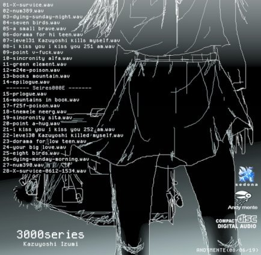

| 小説家になるな！: クリエイターのサバイバル論 (トークメーカー新書) | |
| 至道流星 & 架神恭介 & 泉和良 | |
| Mirai Sozo (2017) | |
「作家が業界をサバイブするにはどうすれば良いか？」
そんな問を突きつけられた時、あなたはおそらくこう答えるでしょう。「そんなの、小説を書くしかないのでは？」。なるほど、それは一つの回答ではあります。しかし、一つの回答でしかありません。
というのは、本稿で以下に語られる通り、作家が小説で飯を食っていくことは、不可能ではないにせよ極めて厳しいという現実があるからです。
残念ながら、作家とは小説を一本書いたらそれが大ヒットして印税がバリバリ入ってきて後は寝ていても食える、という職業ではありません。そういう人もごく一握りいますが、それを目指すことは止めた方が良い。なぜなら、それは運だからです。技術やセンスにより勝率をある程度まで高めることはできても、最後はやはり運です。これは業界で十年生きてきたわれわれの偽らざる実感です。
小説で大ヒットを出すことは宝くじ購入行為に近しいものです。しかし、宝くじも買わなければ当選確率はゼロ。いくら運勝負とはいえ、買わなければ運勝負すらできません。では、宝くじを買い続けるにはどうすれば良いか。小説を書き続けるにはどうすれば良いか。それが本稿で取り扱っている「サバイブ」という問題です。
現実的な方向性は「小説以外の食い扶持を見つけること」です。ですが、あなたはこう思うでしょう。「馬鹿を言うな。おれはサラリーマンになりたくないから小説家を目指しているのだ」と。
分かります。その気持ちは本当によく分かります。ご安心下さい。必ずしもサラリーマンだけが生きる手段ではありません。本稿では、サラリーマンになることなく食い扶持を稼ぐスタイルについても言及しています。本稿を読んだ後、「なるほど、小説にこだわらずとも創作で生きていくことは可能なんだ！」と希望を持つか、「こんなの無理だ！ 大人しくサラリーマンしていた方がマシだ！」と絶望するかはあなた次第です。
しかしいずれにせよ、
「どんなに面白い作品を書いても大ヒットはまずしない」
この厳然たる事実がある以上、あなたは地に足をつけて「宝くじを買い続ける」ための戦略を練らねばなりません。本座談会に参加したパネリスト三名は、それぞれ独自の方法論でその戦略を編み出し、実施し、部分的に失敗し、また成功を掴み取ってきました。
本稿で紹介する、われわれの失敗と成功を通じて、クリエイターを目指す読者の皆さんが、自分なりのサバイバル法を見い出す一助となれば幸いです。
架神恭介
パネリスト紹介
◆至道 流星（しどう りゅうせい）
小説家、システム開発、会社経営などに携わる兼業クリエイター。
小説、ビジネス書、漫画原作など五〇冊ほどの著作がある。海外翻訳も多数。創作者というよりビジネス色が強いクリエイター。主な著書に、『大日本サムライガール（全九巻）』『羽月莉音の帝国（全一〇巻）』『破滅軍師の賭博戦記』などがある。
◆架神 恭介 （かがみ きょうすけ）
漫画原作、小説、実用書まで、オールジャンルでの高い創作能力を持つ専業作家。音楽や宗教書など多くの分野で文筆業に携わり、独自のテーブルトークＲＰＧ『戦闘破壊学園ダンゲロス』の開発や運用も手掛ける。また執筆した実用書はベストセラーにも並ぶ。主な著書に『こころオブ・ザ・デッド』『仁義なきキリスト教史』『よいこの君主論』などがある。
◆泉 和良 （いずみ かずよし）
小説家、ゲーム制作者、ミュージシャンなど幅広い創作能力を有する専業クリエイター。制作したゲームは実に数百本とギネス級！ 主催するゲームサークル『アンディーメンテ』は二〇年間にわたって根強い人気を持ち、フリーゲーム制作界隈では日本最古参の有名人である。主な著書・ゲームに『エレＧＹ』『ボカロ界のヒミツの事件譜』『スターダンス』などがある。
パネリスト三人は、現実に長年生き残ってきています。宝くじで一等を引いた経験は三人ともにありませんが、それでも生き残っていることには理由があります。
多くの人は一等を引いた経験のある人に話を聞きたがりますが、そのことがたくさんの人の道を見誤らせています。本当のサバイバル方法は、業界に深く根を張りつつも、着実に生き残ってきた人を探し出して聞きましょう。その手の人は声が大きくありませんので普段は決して目立ちませんが、ほんの偶然が重なり、こうしたオンライン座談会が開催されることになりました。
一等を引いた経験のある人の論にばかり耳を傾けている人が多い分だけ、実はチャンスが広がっています。
至道
第二回、公開オンライン座談会、はじまります！
今回のテーマは......クリエイターのサバイバル論！
至道
第二回の前にちょっとご報告。
おかげさまで第一回オンライン座談会（創作方法）はとても多くの方にご覧頂くことになりました。創作に関連するさまざまな物事に触れることができ、架神さんや泉さんのお話は、ぼくにとっても非常に有意義なものでした。
そこでこの度、第一回の内容を、自然なセリフの流れになるよう大幅編集し、ぼくらパネリスト三人が加筆したうえで、電子書籍『小説家になるな！ 職業作家のリアル、それでもなりたい人へ』として刊行の運びとなりました。
皆さんのご支援のおかげです。ありがとうございます。
至道
分量は一般書籍並になりました。版元さんにお願いして紙の書籍で流通させることも考えましたが、価格が一四〇〇円レベルになってしまうことと、流通までに時間がかかることを勘案し、今回は五四〇円（税込価格）で提供できるKindleから出版してみることにしました。
Kindleがないと読めないと誤解している方もいらっしゃいますが、スマホでも普通に読んでもらうことができます。この機会にぜひ手に取ってみてください。
至道
さて、お話を戻します。
今回は『クリエイターのサバイバル論』です。
サバイバル論については、大きく分類して二つの分野がありそうです。
（１）個人生活をいかにして成り立たせるか
（２）いかにポジションを確立し、継続した仕事にするか
端的にいって、「生活」と「仕事」のサバイバルという両面があります。
クリエイターは会社と違って個人活動でもあります。仮に税金対策などを考えて法人化していたとしても、あくまでクリエイターとしては一人の人間です。そのため個人生活と仕事は切っても切り離せない車の両輪になるでしょう。
至道
第二回オンライン座談会の大きな流れとしては、
（１）総論的なもの（要はなんでもＯＫ）
（２）仕事としてのサバイバル術
（３）個人のサバイバル術
（４）クリエイター業界の現在
（５）これからの創作者としての生き残りについて
といった感じで進めたいと思います。
もちろん総論的な話し合いのなかで、（２）と（３）を入れ替えたりしてもいいと思われます。新しい項目を付け加えることもあるでしょう。その辺は流れに沿い、臨機応変に参ります。
至道
初めて座談会を訪れる方もいらっしゃると思いますので、まずは簡単に自己紹介からいきましょう。架神さんと泉さんも、最初に軽く自己紹介をしてもらえればと思います。
至道
改めまして、軽めに自己紹介します。
どうも、至道流星です。
もう会社経営歴二〇年になります。一九歳のときに最初の会社を創業して以来、ウェブ・ソフトウェア業界でボチボチやっています。長く存在してたってだけが取り柄です。正直、同じ時期に創業した知人たちの九割が消えてしまっているので、こっち方面で何だかんだとしぶとく生き残っているだけでも結構奇跡に近いんじゃないかなと思うところですが、今回は別の話。
クリエイターとしては、八年くらい前に小説家デビューしたのが始まりになっています。実用書なども執筆経験がありますが、それは基本的に版元さんの指定によるものでした。小説家としては、自分が書きたいもの、書くべきだと思ったものを自由に書かせてもらってきました。しばらくこのスタンスで続けようと思っていますが、先のことはわかりませんので、何の約束もできません。
そのときに自分が大切だと思えることにコツコツ取り組んでいきたいと思っています。大々的に自己紹介するような者じゃないと思っていますが、パネリストの一人として軽めに自分を紹介しておきます。
至道
初めての方も、そうでない方も、どうぞよろしくお願いします。
架神
こんばんは、架神恭介です。
作家としてデビューしたのは、二〇〇五年の『完全パンクマニュアル』なので、この世界での芸歴は一二年ですね。意外と長くて自分でもびっくり......。
しばらく実用書（？）を書いてましたが、講談社で新人賞を取ってからは小説も少し書いてます。
遅筆なのであんまり冊数を出してないんですが、ＷＥＢでニュース記事を書いたり、雑誌でレビューを書いたり、漫画原作をやったりと、あれやこれやって食い繋いでます。文筆業以外でもカネを稼げないかと常々画策中。
泉
こんばんは。きました！
Kindle販売、お疲れ様です！
泉
こんばんは、泉和良です。
初めての方がいましたら、初めまして。よろしくお願い致します。
私は、二〇〇七年に講談社ＢＯＸ新人賞を受賞したのち、
翌年小説『エレＧＹ』でデビューしました。
そののち、何作か本を出させて頂き、
小説を書いたり、ゲームを作ったり、音楽を作ったりしています。
更にそののち、かすみを食べて今に至ります。
泉
今回もまた勉強させて頂きます。
至道さん、架神さん、何卒よろしくお願い致します。
至道
泉さんはクリエイターとして二〇年ですよね。
一発ミリオンセラーを掘り当てたという人ならともかく、そういう特殊な運にめぐり合わせたわけでもないのに、創作専門で生計を立てているというのは頭が下がります。
あらゆる作家のなかでも、泉さんは最もサバイバル術に長けているタイプかと。
至道
お二人ほど、サバイバル論を語れる作家は他にいないと、ぼくが勝手に断言させてもらいます。
色んな作家さんを見てきましたが、これほど幅広く活動していて、長くコツコツちゃんと創作でお金を稼ぎ、サバイバルしてきている作家さんは本当に珍しいです。
ぼくなど、お二人の前では完全にひよっこですよ、本当に。そんなお二人から、直接サバイバルのイロハを教えてもらえるのは幸運なことです。
架神
実はおれ、泉先生とサバイバル論を語れるのをすげえ楽しみにしてたんですよ。
泉
それは本当ですか！ ありがとうございます。
至道
架神さんは、泉さんのサバイバル論の影響を受けていたとお聞きしてびっくりしました。どんなサバイバル論だったのかまではお聞きしていなかったので、よろしければ経緯とサバイバル術の内容など、教えてもらってもいいでしょうか。
泉
え、それはいったいどういうこと......!?
至道
その話、ぼくも聞きたかったんですよね。
聞きたくて仕方なかったんですが、座談会まで取っておきました。
架神
というのはですね......。
かれこれ四～五年前くらいのことなんですけど、俺の知り合いの一ノ瀬ってやつに、「おれ、これからどうやって食っていこうかな～」みたいなことを呟いたんですね。そしたら、その一ノ瀬ってやつが、「知り合いのクリエイターから聞いた話だけど......」といって、サバイブするコツを俺に教えてくれたんですよ。で、おれは「へー！」と思って、それをやろうやろうと思いながら、なんだかんだで出来ずに今に至ってるんですが。
泉
はわ!?
架神
ここまで言えばもうお分かりと思いますが、その「知り合いのクリエイター」が泉先生だったんですね。一昨日、ふと「もしや」と思って一ノ瀬に確認してみたらバッチリ合ってました。
架神
内容に関しては............これは俺の口から言うのはアレなんで、流れの中で泉先生の口から出てきたらいいな、って感じで。
泉
一ノ瀬さん、という方は、もしやトサツ君のことですか？
違っていたらどうしよう......。
架神
そうです、そうです。一ノ瀬屠殺彦です。
俺の戦闘破壊学園ダンゲロスに出てくる一ノ瀬蒼也のモデルでもあります。最初は一ノ瀬屠殺彦という名前の屠殺キャラだったんだけど、講談社から屠殺はダメって言われたので、ババ・ソーヤー（悪魔のいえにえ）から蒼也にしました。
泉
やはりトサツ君でしたか！
つまり何年か前に、私はトサツ君にサバイブするための秘策中の秘策的な何かを伝授し、さらにトサツ君がそれを架神さんに伝えたと......!?
い、いったいそれはなんなんだ！ そんな秘策があるなら、私が聞きたい！
架神
概ねそういう感じです！
あれからずーーーっと実践しよう実践しようとしているのに、未だに！ できていない！
至道
事実は小説より奇なりという話ですね。
泉
トサツ君にわたしがいったいどんな秘術を教えたのか、
全く憶えていないのですが、
何かヒントを......ちょびっと......。
架神
かいつまんで言うと、「毎月かならず商品を作れ」と。
至道
もうそれだけですごい。
なかなか作れないっすよ、そのペースで。
泉
毎月かならず商品を作れ、ですか。
確かに、そのようなことは、小説『エレＧＹ』の中でも、クリエイターの生き方を紹介するストーリーの中で書いたようなことはあるのですが、
やはり、トサツ君になんと伝えたのかは、完全に記憶を失っているようです。すみません。
架神
エネルギーコストさえ無視すれば今ならできる状況は揃ってるんですけどね。
毎月Kindle出そう、って何度も何度も思っては結局できてない、そんな状況です。
架神
昔は毎月同人誌を出すとか、毎月ＣＤを出すとか、結構ムリめな感じでしたが、今なら毎月Kindleも毎月ＭＰ３ダウンロード販売も、ムリじゃないと言えばムリじゃない。
架神
そう言えばおれ、大学の頃はバンドやっててＣＤを手作りしてました。印刷して、裁断して、ホチキスで止めて......。よくやってたよな、ほんと。
泉
ＣＤを手作りは、私、今日もやっていましたよ！ 汗をかきながらｗ
至道
［毎月Kindle出そう、って何度も何度も思っては結局できてない］
役割分担しましょう。ぼくが編集とか色々やりますよ。そうすれば毎月出していけます。
ぼくってかなり仕事好きみたいで、今でも現場でメンバーたちと並んで仕事してます。プレイングマネージャーですらなく、自分も一兵卒なんですよ。だから細々とした仕事は振ってください。
架神
あ、結構それは真剣に検討させて下さい［至道先生］
本は書くこと自体も大変ですけど、編集業務も実際色々あって大変なんですよね。編集者って結構よくやってくれてるんだなあ、って自分でやると分かったりする。
至道
今回、第一回目の編集作業をやってみて、実際めちゃめちゃ大変でした。徹夜も普通にしましたね。
でも終わってみると、やや時間が空くので、次の業務が欲しいんですよ。一種類の仕事だけやってると感覚がマヒしてきて疲れますけど、時には執筆、時には開発、時には編集とかやってると、意外とストレスたまらないんですよ。だから常に新しい業務を欲してます。
架神
おれはこの座談会含めて今三つのプロジェクトを同時進行中ですが、既に泣きそうなくらい辛いです。
至道先生のエネルギーが一割くらい欲しい......。
あと確かに、同じことをやってたら飽きますね......。
泉
たくさん作るというのは、私も基本的なこととして考えていて、
仮に、一ヶ月五万円を稼ぐのが精一杯の小説しか書けないなら、
単純に、一ヶ月に一〇作描けば、五〇万なわけで、
ただ現実的には、小説だとオファーがあって進むものなので、
小説で五万、音楽を作って五万、漫画を描いて五万、ゲームを作って五万......。
という風に、一ヶ月の中でやることを、多方面に増やせばいいんだ、って思っています。
架神
その基本思想はすごく共感してます。
今回はリスクヘッジという側面から、おれもその点に触れようと思っていました。
時代の移り変わりで特定のジャンルや特定の金儲け手段が死滅することがあるので、金を稼げる手段を分散させることにはその点でも重要だと感じてます。
泉
どうしても一つの仕事で五万以上を稼げない時って、
他の仕事をしないと、単純に、辞めるしかなくなるので......。
で、他の仕事を、アルバイトにするのか、
それとも、自分でできる創作のカテゴリを増やすのか、
という選択を、私の場合は迫られていたのです。
架神
でも泉先生のそれって、どのジャンルであれ作れば五万（というのは仮の数字と思いますが）になる、というのが前提ですよね。
その「作ればｎ万になる」状況というのは、やはり「毎月作る」ことで生み出しているんでしょうか。
至道
自分もいま、架神さんと同じことを聞こうとしました。
ｎ万になるということが少しは見えないと、事業計画が立てられないです。
至道
泉さんはある意味、綱渡りを続けてきて、ずっと食えているんですよね。それって凄すぎることなんですが。
架神
いや、「作り続ければｎ万にはなる」という状況は、実は綱渡りではないのではないか、と俺は睨んでます。泉先生はもはや「作りさえすれば売れる」というベースを作り上げているのでは？
至道
だとしたらクリエイターとして悟りを開いているレベル......。
泉
「作ればｎ万になる」状況というのは、正直、今もないですよ。
毎月、それはコロコロ変動して、
......今月は全部あわせても七万にしかならなかった！
→家賃の引き落としまであと四日間しかない！
→今日と明日で一〇曲つくってＣＤにして、すぐにネットで通販で売ろう
とかそういうその場しのぎの連続なのです
架神
思った以上に綱渡りだった......。
す、凄まじいですね......。
至道
泉さんの生活って、人生シミュレーションゲームになりそうですね。
すごい面白いシミュレーションゲームになりそう。
架神
第一回座談会で泉先生が言っていた、「カネがなければ作品は作れる」という言葉の意味がやっと分かった気がします。
泉
ですので、製作に一週間以上もかかるような創作は、
今の私には、かなり命取りだったりします。
それが確実に一週間分の生活費になるならいいのですが、
ならない可能性もあったりするので。
架神
すごい......凄まじい話だ......。
おれも世間の人から見れば大分リスキーに生きていると思うけど、泉先生ほどではない......。凄まじい......。
泉
でも、本当、今の自分の創作における収入が仮に月一〇万しかないなら、
その創作を、今の二倍の速さでやれば、二〇万になる！
という、根本的な所で、行動してるだけなんです。
至道
でも、もしかしたら、泉さんとぼくって似ているかもしれません。
携わっている分野が違うだけで、ぼくも色んな仕事に手を出してますし、あれこれ成功したり失敗したり繰り返してますよ。動き方は一緒な気がしてきました。
架神
至道先生が一番安定している気がしてたけど、実は一番安定しているのはおれなのか......？？？
架神
でも至道先生は昔は色々あったと思いますが、今は大安定ですよね？
至道
別に隠す必要も、隠す意志もないので洗いざらいお伝えしますが、うちの会社は最低限の家賃収入が確保できているんですよ。よほどのことがない限り大赤字にはならない。もちろん色々な観点から赤字決算にしたりする場合もありますが。
だから結構、融通が利くというか、経営的には問題なくて、そういう安心感はありますね。
それがあってこそ、色々なことにチャレンジしていけますし、一兵卒としてあれこれ手を出せるわけです。
至道
開発業務は本当に原価に近いところで引き受けていても、ちゃんと会社が成り立ちます。大手の出版社が開発を発注する価格が、うちに依頼する開発費の一〇倍もするんですよ。どこだとは言いませんが、先日新年会に呼ばれて行ってきた某出版社様とか。大手の開発会社やウェブ系企業の社員より、ぼくのほうが業界長いのだから、変なしがらみなしで相談してくれればいいのに。
今じゃもう自分は、取引先さんに喜んでもらえるのが一番良いことで、儲けは二の次ですね。
それにトークメーカーもつい最近になって、そこそこの広告予算を割り当てましたが、どうなろうとトークメーカーは全然問題なく継続できます。
そういうベースがあるから、色々手を出せるという事情はあります。
泉
安定した収入と、チャレンジ......羨ましすぎる！
至道
泉さん、一緒に最低限のベースラインを作りましょう。細々とした業務はぼくが担当しますんで、何か定期的にコンテンツを生産していけるような流れを予備で作っておいてください。何があってもそっちでは月にｎ万稼げるというベースがあると、だいぶ違いますよ。
泉
ありがとうございます。がんばります！
ありがた過ぎるお言葉！
架神
泉先生って小説を書く前は何を作ってカネに変えてたんですか？
泉
小説を書く前も、フリーゲームと音楽だけで稼いでいました。
というのも、小説書く以前は、フリーゲームが今よりヒットしてて、
それだけで生活できていたんです。
架神
ほう......音楽！ 泉先生の曲をＢＧＭで聴きながら座談会したいと思うんですが、何でググれば出てきます？
泉
私の音楽をぐぐると脳がくさりますよ！
一般ユーザーＡ
こんばんは。早速盛り上がっていますね。
泉先生の曲はすごくよいのでおすすめです。
youtubeで「アンディーメンテ」で検索すると色々聴けると思います。
私はSpecial gamerが好きです。
https://www.youtube.com/watch?v=gＣＤgldsv5So
架神
［一般ユーザーＡさん］
いま聴き始めましたが......普通にスゲーいい。
泉
［一般ユーザーＡさん］
どうもありがとう！ 君の応援、忘れないよ！ キラ☆
架神
泉先生......こんなレベルの楽曲を二日で一〇曲作れるの......？
うぇええ......。
泉
とんでもないです。恐縮です。
じっくり作った方が、いい曲ができるに決まってるんです。本当に苦肉の策で二日で一〇曲作ることもありますが、そんな風にして作ったら、たいてい後々までには残らないんもんですよ。
架神
あ、やっぱり、ちゃんと練り込んで作ったんですね。
いま「AM CHAOS RAVE NIGHT 2014」っての聞いてますけど、これも良いですね......。
泉
小説を書き出したあとも、実際、私の場合は小説があまり儲からなくて、
それ以外の収入で生活がもっていました。
架神
小説あんまり儲からないですよね......。
俺も小説は生活の一端でしかない。
実用書や漫画原作の方が遥かにカネになる......。
至道
［実用書や漫画原作の方が遥かにカネになる......。］
これはそう思うのですが、漫画原作を漫画編集部で最終的に通すまでがメチャクチャ大変じゃないですか？ 砂漠に水をまき続けるような大変さです。こっちは話が進んでいるのかどうかすらわからない状態で放置されますし。
架神
しかも連載なかなか続かないですからね......。
漫画を続けるのメチャクチャ大変です。
実用書も、カネになるっちゃなるけど、たまになるだけで基本ならないな......。
と、考えると、どれも結構辛い。なのだけど、中でも小説が一番つらい印象。
至道
小説は儲かりませんね。ネット小説で膨大にアクセス集めているごく一握りの人が、一発掘り当てて、あとは野となれ山となれという流れでやってる感じです。
コツコツ小説家として生きようなんて、もう無理なんですよ。
架神
おそらくおれたちの中ではいちばん小説が売れているであろう至道先生でもそうなんですか？
至道
自分では、まったく売れているという意識はありません。実際に、現在は売れてないと思います。
印税だけ抜き出してみると、一番よいときで安定して年二〇〇〇ありました。でも今では急降下で、ネット小説の方々に完全に食われてしまった状況ですね。
ただ、そうかといって出版依頼が途切れたりしないのは不思議なもので、編集者も、ネット小説のほうの扱いにはとても困っているのが現実なんでしょうね。
本当にネット小説一本になれば、そもそも編集者いりませんし。ネット小説をパッケージ化して出版する一連のサービスを作っておけばいいだけですからね。
たぶん今後競合が多くなりそうですし、一瞬で薄利多売になるに違いない事業分野なので、ぼくは手を出しませんけれども。
架神
年二〇〇〇稼いでて売れてないという認識はどうかと思いますよ......。
そりゃあ出版依頼、普通に途切れないですよ......。
至道
二〇〇〇というのは過去の数字です。そのときは、まったく売れていないとまでは思っていませんでした。
でも今は、びっくりするくらい下がってますよ。五分の一以下です。
いずれにせよ、こんな不安定すぎる印税をアテになどできない前提でやってきました。
架神
泉先生って毎月どのくらい作品を作ってるんですか？
泉
ちょっと自分でも把握できていませんが、
適当に振り返れば、
一月は、
アプリ二本
ＣＤ一枚
同人漫画一冊
設定集一冊
Ｔシャツ
課金アイテム製作
とかです。
あとは、ゲームの更新とか、再販のための再製作が三作くらいでした。
他にも作ったかもしれませんが、曖昧なので。
これで、生活はギリギリです。
架神
泉先生......尋常ではないな......。
おれならＣＤ一枚作った辺りで安心して終わってしまう。
至道
泉さんのコンテンツ制作力が凄まじすぎる......。
その能力を、上手くマネージしてくれる人がいると、きっと成功のチャンスは広がるはずなんですけどね～。でも泉さんのような根っからのクリエイターは、そういうマネージを受け付けないとも思います。
架神
一ヶ月にそれだけクリエイションしてたらヘロヘロになりそう。
体力的にもすげえなと思いますよ。
泉
私のやり方は、私自身、このままでは多分もう先がないなって思っていますよ。
今までは若かったからできていましたが、
正直、この歳になると、いつ辞めようかな、ってことを私でも考えてしまう......。
でも、バイト先を考えたり、就職先を考えるんですけど、そのたびに、あー......もう今更ムリだー......となります。
至道
泉さん、クリエイター続けましょう。
外野みたいな感覚で無責任なことは言いませんよ。最低限のベースをご一緒に作りましょう。計画立ててやれば、最低限の食費や家賃程度をまかなえるベースは作れます。
架神
まとめると......
至道先生： 企業経営＋小説
泉先生： ゲーム、音楽、漫画＋小説
架神： 実用書、ライティング、その他＋小説
つまり、クリエイターとしてサバイブするには「小説以外のこともやれ！」という結論ですかね......。
至道
その結論は基本かもしれませんね。
小説家にこだわりすぎると、身を滅ぼしますよ。
まぁ運がよければ一発当ててアニメ化、ミリオンセラーとかもあるでしょうが、それ、運ですからね。ここを見ている皆さん、宝くじに人生かけられますか？
架神
小説家になろうと思ってる人に、これは声を大にして言いたいんですけど、「あなたの作品がどんだけ面白くても大ヒットはまずしません」。したら宝くじに当たったと思って下さい。増刷が一～二回かかったら十分ハッピーってなもんです。
至道
完全同意です。面白いとか面白くないとか、それは売れる売れないの基準じゃないんですよね。
売れるものが売れる。売れてみないとわからない。
だから本当の意味での、かつてのような編集者さんは不要になってきてる。もうすぐ、出版社は好むと好まざるとにかかわらず変貌しますよ。否応なしに。
架神
もちろん面白い作品を書いた方が売れる確率は上がるんですが、確率が上がるだけで大ヒットするかどうかは正直運だと思います。運というか、作家の執筆だけではない様々な要素が複合的に絡み合って、そこにさらに運が上乗せされて............もう要するに運としか言いようのない何かだと思います。
泉
出版依頼という所でいうと、
架神さんは、実用書を書かれる時は依頼があって書かれるんですか？
架神
『完全教祖マニュアル』以降は基本そうですね。
架神
実用書は増刷かかんなきゃ一冊出しても四〇万とか六〇万とかです。
でもたまに小ヒットして、そん時が二〇〇万とか四〇〇万とかになるので、それで食い繋いでる感じです。
泉先生よりもスパンの長い綱渡りをしてる感じですね。
俺はたぶんお二人よりも圧倒的に金を使わないので、そのへんが強いんだと思います。
一昨年くらいから結構金使うようになっちゃったけど。
泉
お金を使わないって大事ですよね！（急に大声で）
私、小説をばりばり書いてた頃って、
小説を書くのって、すごくお金がかかるなー、っていつも思ってたんですよ。
だって執筆してる一ヶ月とか、三ヶ月とか、何も収入がなくて、
脱稿したあとも、編集者や出版社の都合で、
そこから半年や一年待たされたりして、
それでやっと出版されても、全然売れなかったりして......。
泉
一冊の本を書くのに、
生活費一〇〇万くらい必要なんじゃないかなーって
真剣に思っていました。
至道
ここを読んでいる方は小説家になって生計を立てるという前に、自分の生活のベースをどこにするか、基軸を作ることに注力したほうがいいと思います。結果的に、それがいちばん長く小説家を続けられる道です。
至道
クリエイターとして生き残るためには、すごく大ざっぱに言えば、その能力を生かした最低限の生活コストを賄える方法を確立しろということでしょうか。
そこが見つからなければ、サラリーマンとかを基軸にしながら、クリエイターを土日にやるとかしたほうがいい。
至道
泉さんはクリエイターとしての本当の能力があるから、だから基盤がないのに食いつないでこれたんだと思います。その創作力はただただ凄いの一言。
架神
他に基盤を作る作らないは別として、概念としては重要だと思います。面白い面白くないにかかわらず、基本的には売れないので、サバイブを本気で考えるなら、「基本的には売れない」という前提でやってかなきゃいけないですね。もう一度言いますけど、あなたの作品がめちゃくちゃ面白くても基本的には売れません。
架神
もうむちゃくちゃ自分の作品が大好きで、何度読み返しても面白くて、周りも絶賛してくれて、こいつは世紀の傑作だと思うレベルでも基本的には売れないです。でも、そこまで良い作品だと思うなら、増刷が一回掛るくらいは可能性があります。
で、増刷が一回掛かったら、それで大金持ちにはなれないけど、出版社的には「なかなか頑張れる作家ではないか」となって次の仕事が来るので、とりあえず増刷一回かかると良いですね。そんな感じで次の仕事がちゃんとハイペースで飛んできて、それをジャンジャンこなしていけるなら、小説を基盤にすることも可能だとは思います。でも仮に小説オンリーでやるにしても、宝くじ購入行為ではなく、「基盤」を築いているのだという意識は大事だと思います。
泉
そう言えば、私、身の回りにいた作家さんとかがどうやって生活しているのかほとんど聞いたことがなかったんですけど、今にして思えば、よほど売れている人でもないのに、小説を書いていた人達って、やっぱり生活できていなかった......ってことなのかな......。少なくとも小説だけでは......。
改めて考えると、怖すぎる......！
至道
自分が会ってきた小説家の方々だと
・サラリーマンとの二足の草鞋
・アルバイトをしている
・実家に暮らしている（たぶん食事とかは親御さんが出してくれている）
・ライターの仕事を回してもらっている
とかが多かったように思います。
あとは、
・そんなに本を出していなくても創作を教えている
という方もいらっしゃいました。
もちろん大ヒットして、そのコンテンツに縋りつくようにしている成功した小説家の方もいますけどね。結局、次出しても当たらないから、自分がかつてヒットしたコンテンツにすがりついて何冊も出すんですよ。
至道
ホワイト企業のサラリーマン安定ですね。サラリーマンがストレスない仕事なら尚良し。
ただ、基本的に創作は辛いから、サラリーマンのほうが楽しければ、創作をしなくなるという罠。これは割とマジです。
一般ユーザーＢ
サラリーマンはすごく気楽ですよね......。
自分がいなくても仕事が回るのという点がストレスフリーで、
気が向かない日は休むことができるのが大きいと思います。
架神
創作はつらいですね......小説書くのが一番つらい......。
泉
架神さんが小説が一番辛いと思っていたなんて！
何故だろう、意外な感じがします。ダンゲロスが小説と密接だから、そんなイメージが架神さんにはしなかったのかも......。
私も色々創作やって、一番辛いの、小説でした。好き嫌いとは別に。
一番時間が掛かって、一番脳みその大部分を持っていかれてしまう感じで。
架神
小説はめちゃくちゃ苦労して書いてますよ。
でも、実用書を書いてる時は「調べずに書ける小説は楽なもんだぜ、小説書きてえ」ってなるし、小説書いてる時は「調べりゃ書けるんだから実用書は楽なもんだぜ、実用書書きてえ」って言ってます。
至道
ええ、小説書くのは辛いですよ。実用書のほうが論理で書いていけるから、楽です。
至道
ぼくは実用書と小説を両方やってみて、実用書のほうがずっとストレスが低い感覚ですね。先が見えるからですよ。
小説は五里霧中のなかを進む感覚がどうしても付きまとうので、それがストレスになります。
架神
読者に与える面白さ、という意味で、小説は五里霧中ですね......。
実用書は、まあ、こうすれば面白いだろう、ってのがあるけど、小説はどうすれば読者の感じる面白さをコントロールできるのか、よく分からなくて難しい。
......漫画はもっと難しい。
架神
肉体的な疲労が大きいけど、作業的に一番ラクなのはインタビューをまとめる作業ですね。
あれは完全に論理だけで作れるので。
テープの文字起こしがすげえ辛いですが。
至道
第一回のオンライン座談会でぼくが長々と語った独自の創作技法って、要するに、辛い創作活動の時間をいかに短時間で済ませるかという観点から編み出したメゾットだと言えるかもしれません。
そういうやり方を確立してしまうほど、小説執筆は結構辛い。
多くのクリエイター志望者は、自分が目指す狭い一分野のみに集中しがちです。小説家ならば、目の前の小説を書くことの他に頭が回らないことが多いです。また、何カ月もかけて、ようやく一本の小説を完成させています。
ですが、時代の風は向こうから吹いてくるものであり、自分から吹かすことはできません。向こうから勝手に風が吹いてくるのを待つのであれば、その機会を逃さないために、クリエイターはひたすら作品を作り続けるのみです。
私たちは、いつか自分に大風が吹いてくれるのを祈っている健気な存在です。そのことを理解していれば、自信満々に自作の一つにすべてを込めるだけでは終わらせず、黙々と作品を作り続けることへの努力を怠らないものです。
至道 流星
■Tips
◆毎月かならず作品を作れ。作っている限りサバイブできている。
◆創作するには生活費が必要。ベースラインの収入は必要不可欠。
◆カネがなければ、カネを稼ぐために創作せざるを得ないのがクリエイター。
◆多方面へのチャレンジはリスクヘッジになる。
◆小説が儲からないのは大前提だと心得よ。
◆創作へのチャレンジは若いうちでないと心身共に厳しい。
◆リアルな小説家は地味に暮らしている。
◆小説執筆は先が見えないことによる辛さがある。
この章では、当たり前のようでいて普段はおろそかにしがちな、サバイバルの基本を抑えます。
多くの人は、どうしても小説家やクリエイターとしての視点ばかりで考えてしまいます。ですが時折でいいので、仕事を依頼する編集者の視点に立って考えるクセを持つと、サバイバルのためにいま何をしておけばいいのかが見えてきます。
架神
転石苔を生ぜずなのか、アメリカンな意味でローリングストーンなのか、おれにも分からないんですけど、個人的には色々やった方が良いと思います。
文筆業だけでも小説、実用書、ライター業、レビュアー、インタビュアーといろいろあるし、仮に小説だけでやるにしても、色んなジャンルを横断するとかしてリスクヘッジしつつチャンスを増やしていく、みたいな。
至道
あらゆる仕事のなかで、ライティングスキルというのは、基本中の基本のはずなんですよ。だから、応用できる分野は数々あります。
単なるライターだと、悲惨な時給になってしまいます。もう少し捻りを利かせた仕事が、その都度その都度あるものです。できれば、そのライティングスキルを活かした自分の機軸を見つけるのがいいですね。
ちなみに、ぼくのビジネスメールは超長いです。いやがらせかと思われるほど、誰に対しても長いです。これ昔からで、たぶん何だかんだでライティングには向いていたんでしょうね。
架神さんとか泉さんに送っているメールは、かなり短くしてますよ。
架神
あ......あれが短い......？？？
泉
あ......あれが短い......？？？
至道
お二人に送っているメールって、ぼくのなかでは超短いんですよ（笑
業務上の取引相手には遥かに長文で、いつも「いやがらせだ！」と言われます（笑
泉
小説を書きつつ、ライターの仕事を回してもらっていたり、自分の専門外だけど執筆の仕事をもらっていたりする方々が、私は羨ましかったですよ。
そう言うのは、技術が買われているのか、それとも、編集者が気に入ってくれてそういう仕事を回してくれているのか、あるいは、自ら積極的に何でもするので仕事ないですか、とアプローチしているのか、様々だとは思うのですが、そうやって、あくまで文章の仕事でできるのってすごいなーと思います。
架神
おれの場合は、完全教祖マニュアルってのを出した関係で、各社から宗教系の書籍執筆依頼が来ました。
何か一冊、編集者に刺さる本を書けるとそこから繋がっていくんじゃないかと思います。
至道
泉さんにはライターの仕事の依頼は来なかったですか？
ＢＯＸからデビューして、ぼくにはボチボチありましたよ。執筆分野の影響でしょうかね？
至道
あ、ちなみに小説家デビューしてからライターの仕事を受けたことは一度もありませんでした。これは補足しておきます。
前にやっていた実用書の仕事のほうが、金銭的にはよかったですし。
泉
［泉さんにはライターの仕事の依頼は来なかったですか？］
うーん、は......そう言えば、思い出したら何個かありました！
（完全に記憶喪失だ......マジで忘れてた......）
依頼は、私の場合は雑誌が多かったかもです。
小説以外の一冊丸々の依頼は一度もないですね。
架神
あ、やっぱり依頼来てたんですね。
おれも雑誌の仕事ちょくちょく来ますよ。
至道
［私の場合は雑誌が多かったかもです。］
あー、泉さんならそうなんだろうなと思います。
泉
私の記憶の中で、完全に干からびて忘れ去られていた......。
「小説出して、別の出版社の編集者さんから、好きなんですーと言われて仕事の声掛かるときの喜び」を、
今思い出しました。
思い出したら、涙が出そうになりました。
今日寝たら忘れることにしよう。
架神
泉先生はなんで今は雑誌からの依頼がなくなっちゃったんですか？
クリエイター作業はずっと続けてらっしゃるんですよね？？
やっぱり小説を出すのがポイントなんですかね。
泉
私は今、文筆関係の仕事は一切オファー来ないですよ。
というか、よく考えたら、去年なんて、なんのオファーも来なかったかも！ ひどい！
いや、違うわ！
面白いプロットあったりしたら送って下さい、というありがたいお声は頂いたのですが、
それ以外ではナッシングだ！ うわー！
至道
オファーが減っているのは、泉さんだけじゃないですよ。
小説家全般的に、じわじわとオファーの数が減っています。これからますます減る一方だと思います。
だってネット小説から引っ張ったほうが楽ですし、数字も読めますからね～。
小説家にオファー飛ばしてる暇あるんだったら、数字を攫ってきたほうがいいでしょう。
架神
さっきの話の流れから続きで書くと、どんなに面白くても基本的には売れないんですが、売れる売れないとは別に全力を出した方がいいです。
（１）増刷が一回くらい掛ると出版社の覚えがよくなるから（漫画とかラノベとかは知らない）
（２）売れなくても気合の入った作品は別の編集者の目に留まって別の仕事が来るから
（３）そもそも全力を出さないと本人が書いててつまらない
こんな理由で。
至道
［全力を出さないと本人が書いててつまらない］
これは大きいですね。辛い執筆だけに、自分が楽しいと思える部分がちゃんとあることが重要です。
至道
自分は講談社ＢＯＸ一冊目を出した数日後に、まったく売れてすらいなかったのに、いきなり小学館の編集者さんから「書いてくれ」と連絡ありました。びっくりしましたね。まだ発売して数日だというのに、ほとんど誰も読んでくれていないのに、どうなっているんだと。
今から思えば、とても有能な編集者さんだったと思います。
至道
架神さんがいうように、真剣に書いた本は、どこかの編集者さんがちゃんと評価してくれるんですよね。だからやっぱり中途半端な気持ちで書いてはいけない、たとえ売れなくとも。
いやでも、これはもう一昔前の出版界の良き日の想い出であって、これからは殺伐としていくんでしょうけどね。もうすでに、殺伐感が漂い始めてますし。
架神
いやー、ネットで流行ってる小説を拾ってくるのが安牌でしょうけど、編集者も自分で企画を立ち上げて本を作りたい気持ちはあるはずなので、規模は縮小しても、今後ももう少しあると思いますよ［編集者が評価］
至道
ぼくもそう思いたいですが、出版社によると思うんですよ。
別に褒めたいわけではなくて、企業の思想上、講談社とか小学館グループとかは、まぁ最後までそういう編集者も少しは残るんじゃないかなと思います。ごく一部だけですけどね。
一方で、ＫＡＤＯＫＡＷＡさんとかは、これは良い悪いではまったくなくて、営業さんのほうが力を持っています。営業さんが決めるんですよね。だから編集者さんがそう思っていても、なかなか簡単ではないところがあります。
繰り返しますが、どちらが良い悪いではありません！ 本当に誤解なきようお願いします。講談社さんも小学館さんもＫＡＤＯＫＡＷＡさんも、どこも優秀な企業様だと思いますよ。ぼくはすべてとお取引させてもらってます、ありがたいことです。
架神
でもどーなんですかね？
意外と小説一本でバリバリ書いていった方が、スキルも上がって固定ファンも増えていって、大ヒットに至る確率が上がっていって成功できたりするんですかね。
いかんせん、そうしないルートを歩んできたのでよく分からない。
架神
当たり前ですけど、たくさん書いた方が当たる確率は増えるんですよね。
大体、増刷がかかる確率って三割くらいなので（おれしらべ）、三割の中からさらに確変が起これば大ヒットになる............のか？
至道
自分も三割くらいですよ［増刷］
増刷かかるだけでもありがたいもんです。
架神
サバイブという観点から言うと、小説一本だけではやっぱり運勝負になるので、馬券を買い続けられるだけの持久力が必要になる気がします。確変が起きなきゃ、せいぜい年収二〇〇万とか三〇〇万とかだと思うので、それで暮らしつつ継続的に作品を生み出していく持久力が。もしくはおれのように、カネを使わず人生のランニングコストを下げるか。
一般ユーザーＣ
はじめまして、Ｃと申します。
この座談会気になっていました。
架神さんには一回お会いして創作相談にのってもらっています。
それからは特に何も創作できていないのですが、諦めきれないでいます。
何卒宜しくお願い致します。
架神
おー、Ｃさん、お久しぶりです！
架神
Ｃさんに提案した犬侍のアイデア、俺が使っていいですか？（笑）
一般ユーザーＣ
架神先生お久しぶりです。
犬侍使って下さい！
というか、架神さんのアイデアですから（笑）
今はちょこちょこトークメーカーで書かせていただいています。
至道先生も泉先生も宜しくお願い致します！
至道
Ｃさん、気軽に発言してください。遠慮はいりませんよー。
ご自身の人生論とかでもいいですんで。
泉
Ｃさん、初めまして！
泉和良と申します。創作がんばって下さい！
至道
創作相談会みたいなのは、やってもいいかもしれませんね。
事業として利益になるようなものでもないですが、そういうユーザーさんとの繋がりは大事にしたいです。作家を目指している人に、ダンゲロスＳＳにも参戦してもらって、ぜひ創作技術を高めてもらいたい。
ダンゲロスＳＳへの参戦者、募集していますよ！ プロでなくていいんです！
至道
Ｃさんも、ぜひダンゲロスＳＳへの参戦を検討してみてください。
一度やればハマりますよ。かなり面白いものです。創作活動の幅も広げられると思いますよ。
一般ユーザーＣ
宜しくお願い致します！
ダンゲロスＳＳ参加してみようかな......。
文章力かなり上がりそうですし。
何の取り柄もないのでゼロからですけど（笑）
至道
Ｃさん、決断をお待ちしてますよ！ 気軽にまずはチャレンジしてみましょう。決断ができたら、トークメーカーのお問合せフォームから「参戦希望」を入れてください。スタッフがマッチメイク作業や、日時の調整などをしてくれます。
一般ユーザーＣ
参加してみます！
なんだかワクワクしてきました（笑）
こんなアマチュアにも満たない僕を受け入れていただきありがとうございます。
至道
Ｃさん、執筆のライバルもできたりするのは、辛い執筆活動のなかにあって救いになりますよ。勝ち負けよりも大事なことはいっぱいあります。
一般ユーザーＣ
至道先生ありがとうございます。
お問い合わせから参戦希望のメールを送信させていだだきましたー！
至道
Ｃさん、ダンゲロスＳＳへの挑戦ありがとうございます。
スタッフがマッチメイクなどをしてくれると思うので、気負わずに楽しんでみてください。勝ち負けよりも、参戦してみることに意義があるイベントです。実際にやってみると、多くの気づきがあるはずですよ。
至道
見ている皆さんも、座談会のほうにも気軽に入ってきてください。
遠慮はいりませんので。創作論とは趣が違うので入りづらいかもしれませんが、ちょっと気になったこととか、質問でも疑問でもなんでもどうぞ。
そうしてもらうと、自分たちが気づかない点に気づくことができます。
架神
そう言えば思い出したんですけど、おれ、昔テレビに出た後に何件か出演依頼が来たんですよ。
結局、断ったんですけど。
やっぱり、その分野で露出すると半年とか一年くらい「同業他社から声が掛る期間」があるんですかね。
至道
自分もテレビに出たことありますよ......。
ゴールデンタイムのエンタメ番組にも。もう二度と出たくない。吐き気を催す黒歴史です。
テレビ業界の方々も入社してみたら妥協の連続ばかりで辛くなっている人が多いでしょうが、本当にね、自分は関わりたくないなと思った世界です。
架神
仕事を頼む立場からすると、「あの人、もうやめたのかなあ？」と思うと、頼みづらくなるってのはあるかもですね。
「いやーおれまだバリバリ書いてますよ」という気配を漂わせたり存在をアピールすると、「あ、まだやってる！」ってなって仕事が来るのかもしれません。
泉
露出が大事ですよね。知られないと、声のかかりようもないですし。
私の泉和良のツイッターアカウントなんて、トークメーカーのツイートするまで、二年くらい止まっていたし......。編集者との繋がりもほとんど切れてるから、なんもないですし。
まあ、私の体から、営利に繋がるようなものを一切作らないオーラが、意に反して出ている可能性が、ひょっとしたらあるのかも......。
至道
泉さんには独立独歩のオーラはありますね。この方はおひとりでやっていくんだろうという。実際そういうタイプだと思うんです。
架神
ええぇ......。泉先生、なんであんなに作っててツイッター動かしてないんですか？？
というか、逆にどうやって作ったものの告知してるんですか。
泉
［ツイッター］
動いていなかったのは、泉和良アカウントだけで、他は動いてるんです。
泉和良アカウントは、小説の仕事ないし、出版の告知とかがないので、まーいっかとｗ
あと、日常を呟くと、泉和良で書いた小説の世界観が、リアルの私の日常に汚される気がして、それが嫌っていう、ちょっとメンヘラチックなところもあって。
他のゲームやボカロのアカウントは、告知がほとんどですけど動いております。
至道
アカウントを分けているのには理由はあるんですか？
クリエイターさんって、みなさんそうしているんですかね？
架神
ああ、アカウントを使い分けてるだけですか。納得です。
あんだけ作ってて告知してないんだったら、早急にマネージャーを......！ と提案するところでした。
至道
泉さんには本当にマネージャーいたほうがいいと思いますね。でも泉さん自身のクリエイター性が、やっぱり他人を受け付けそうにないイメージがあります。
泉
［アカウント分け］
私の場合は、見ている人に、余計に多い情報を与えたら迷惑かもしれない、と気にして、分けていました。
例えば、私のボカロファンに、アナログゲームのことをツイートしても必要ないと思われるかもとか。
小説の泉和良ファンに、私自身が出ている動画のことをツイートしたら、せっかくの小説作品のイメージが崩れるんじゃないかとか。
特に、私の場合、私小説がほとんどでしたので、そういうのを凄く気にしてしまうんです。
至道
なるほど！ クリエイターの内面を見たくないという方は、今は多いかもしれませんね。たしかにニコ動と私小説の層は重なりそうにないです。
架神
泉先生、日記書いてます？ 日記いいですよ。
パズドラにハマってパズドラの話書いてたらパズドラ関係の執筆依頼来たりしますよ。......その仕事、結局消えちゃったけど。
なんていうか、「おれ今これやってます」ってアピールしたら、「んじゃ、これをお願いしよっか」って頼みやすくなるんじゃないかなあ。
泉
日記！
そう言えば架神さんのブログ、拝見させて頂いたんですけど、
私が言うのも恐れ多いですが、一目読んだだけで、
テキストの仕事が巧そう！ って思いましたよ！
架神
うおっ、恐縮です......。
至道
架神さんのブログは、プロフェッショナルだなぁと思いますよね！ 感心します。あれは個人ブログの質が高くて真似できないです。
泉
私も日記書いてるんですが、
他人が見ても意味の分からない情報ばかり書く癖がついてしまいました。
不特定多数に最低限共感されるものを日記やツイッターと言えど書かないと、仕事はこないんだ！
至道
結構いい時間になってきているので、お疲れの方はお休み頂いて大丈夫です。無理をせず、ちょこちょこ書き込む感じが宜しいと思います。
遠慮せずにどうぞ。今回も、良い座談会ができそうで、今から非常に楽しみです。
泉
では、お言葉に甘えまして、私はこの辺で失礼させて頂きます。
至道さん、架神さん、ありがとうございました。
今日は、お二人の仕事のけっこう具体的なことが聞けて、好奇心が疼きまくりでした。
多分、観ている方も、その辺、面白かったんじゃないかなーと思います。
今回の座談会も、最後までよろしくお願い致します。
では今日はこれにておやすみなさいませ。
至道
了解です、おやすみなさい！
Part1会場も長くなりましたので、今回は初日からPart2会場のほうに切り替えましょうか。キリもいい感じですし。
架神
おれもサバイバル的にはいろいろやってきたんで、ネタは色々ありますよ。
ざっとまとめると、
成功： Kindle、クラウドファンディング
まあまあ： 創作相談、グッズ、漫画、ライティング
失敗： Kindle（コンドームごはん）、Youtube、脚本
もうムリ： ネット広告、音楽
今から： ボードゲーム、note
こんな感じですかね......。
まだなんかあった気がするけど。
至道
いいですね［架神さんのサバイバル論］
明日以降、個別のお話にクローズアップしていきましょうか。それぞれ三人の持ち分を色々クローズアップしていくと、ヒントが沢山詰まっていそうです。
我々ほど手広くやってて、爆発的ヒットもないのにコツコツやってきてるタイプって珍しいほうです。
架神
明日からはもっと具体的なところ出していきたいですね。
何が成功して何が失敗したか、可能性があるのはどれか、など。
泉先生のジャンルごとの手応えや費用対効果も興味深いです！
架神
ではおれもこの辺で！
おつかれさまでしたー！
至道
架神さんもおやすみなさい。また明日以降よろしくお願いします。
一般ユーザーＤ
こんばんは。重いことばかり書かれてて読んでて頭おかしくなりそうですね。『小説家になるな！ 職業作家のリアル、それでもなりたい人へ』も読みましたが、質問を重ねるうちに自分の固定概念がぶっ壊されてくのを改めて見てしまってそちらも激重でした。泉先生の後書きに多少救われました。
至道先生のＷＥＢ小説と受賞作家の仕事量の話、とても興味深かったのでもっとＷＥＢ小説について考えていること聞かせてもらえると嬉しいです。
至道
Ｄさん、さっそくお読みくださりありがとうございます。
泉さんの後書き、すごくいいですよね！
あの後書きだけでも、読んでもらう価値は十分にあると思っています。
小説家を目指すかどうかは、人生全般にかかわる重い問題なので、このサバイバル論では気軽にご相談などどうぞ。遠慮はいりませんよ。
一般ユーザーＤ
泉先生の後書きは本当にびっくりしました。あれだけ現実を見せて、絶望させておいて、後書きでひっくり返されたらもう燃えるしかないです。
至道
Ｄさんも、よろしければダンゲロスＳＳ戦への参加を考えてみてください。そちらはそちらで、普通に楽しめると思います。いきなりプロと当たったりしないので、その辺は気楽に構えてもらって大丈夫です。
至道
小説家になってください。それが我々の真意です。それが少しでも伝われば嬉しい限り。
一般ユーザーＥ
泉さんの後書きは大変刺さりました（しかし前回今回のを見ても刺さってはいけない言葉なのでは......と思いつつ）
至道
Ｅさん、ダンゲロスＳＳへの参戦をしてくださるとお聞きしました。嬉しいですね。いずれ勝ち上がってもらって、戦いができる日を待ってます。
至道
ひとまずこちらのPart1会場はここで〆ますね。
明日以降も、お気軽に書き込んでください。
議論できるのを楽しみにしています。
一般ユーザーＦ
至道先生ありがとうございます！
もう八〇％くらい執筆の道を諦めていた時にこの座談会を見つけました。
もう一度頑張ってみます。
至道
諦めて絶望してこそ、本当に道が開けるものです。
もうすぐ時代は変わります。
小説家なんていうチャチな括りは、ＡＩの進展などによって今後消えてしまうかもしれませんので、発想をもっと外に開いてみましょう。いろんな分野がきっと見つかるはずです。
その点で、このサバイバル論がＦさんに相応しいものになると思ってます。
この章は当たり前のことばかりのようでいて、絶対に押さえておくべきことが盛り込まれています。
第一に、小説を書き続けることができるだけの持久力を持てということです。持久力の中身を詳述すれば、「金銭的問題」および「精神的タフネス」の二つがあるように思います。そして精神的側面における多くの不安感は、生活を成り立たせることができるかどうかの金銭的問題に端を発しています。文筆スキルを求められる仕事は非常に多岐に及ぶので、小説家ばかりに目を向けず、スキルを活かした身の置き所をまずは確保しておきましょう。
第二に、新しい仕事は編集者などからのオファーによって発生します。営業して決まるような仕事ではありません。そこで大事なのは、自らの生存を主張するための活動をコツコツ継続しておくことです。ツールは、ブログでもツイッターでも、何でもいいのです。そのためにただ日記を書いているだけでも、内容によってはオファーに繋がったりすることがあります。
持久力の保持と、生存の主張。この二つにおいて自分に合ったスタイルを確立し、創作活動を長期にわたって続けていきましょう。
至道 流星
■Tips
◆文筆だけでも、小説・実用書・ライター・レビュアー・インタビュアー・その他さまざまな派生がある。
◆文筆スキルはすべての仕事の基本になっている。
◆力作なら、たとえ売れなくとも、どこかの編集者がチェックしてくれている。
◆サバイバルするために、自身の持久力を付けよ。
◆オファーをもらうためには、折を見て自身の露出を続けよう。
◆日記を書くだけでもオファーが来ることがある。
この章から、さまざまな個別の事例にフォーカスして、クリエイターの生き残りの道を探っていくことになります。
そして現代は、クリエイターが作品を発表するための様々な方法が用意されています。しかし一方で、作品を発表しただけでは誰も見てくれません。集客するためには宣伝が欠かせず、個人で取り組むならネットを頼るしかないでしょう。
ここでパネリストたちの試行錯誤を参考にしながら、自らの宣伝戦略を確立するための一助にしてもらえればと思います。
至道
Part1会場のキリが良かったので、Part2会場を用意しました。
クリエイターのサバイバル論、一週間で語り尽くせないほど色んな話題が出そうです。こちらでも引き続き議題を進めましょう。
至道
ここからは、個別のサバイバル術の事例にフォーカスして取り組んでみましょうか。具体例を挙げて考えていくと、新しいヒントになりそうに思います。
至道
Part1会場の終わりのほうで、架神さんが色々な具体例を挙げていらっしゃいましたね。以下に転載しておきます。
ここから、架神さんが話しやすい、面白いと思える部分を切り出して、中身を開示してみてもらえると嬉しいです。いくつでも同時にＯＫです。
［成功： Kindle、クラウドファンディング］
［まあまあ： 講師、グッズ、漫画、ライティング］
［失敗： Kindle（コンドームごはん）、Youtube、脚本］
［もうムリ： ネット広告、音楽］
［今から： ボードゲーム、note］
至道
泉さんも膨大な数のチャレンジをしてきたはずなので、ぜひこの機会に、過去の成功事例・失敗事例などをお聞かせください。それが我々全体へのヒントになってくれます。
架神
では、おそらくここを見ている方が興味あるであろうものから。
「ネット広告」「Kindle」「note」の話をしてみます。
どれも文筆に関わる話なので、だいぶ「作家業」に近いと思います。
架神
「ネット広告」ですが、まず基本的なモデルとしてはブログやサイトなどにテキストをたくさん書く。それを見に来た人が広告を踏んでくれる。書いたテキストがお金に変換される、そういうモデルです。
ただ、これが数年前くらいから機能しなくなりました。大体収益が一〇分の一～二〇分の一くらいになってます。色んな理由があると思いますが、おそらく様々なサイトで広告が行われることで競争力が相対的に下がったのでしょう。また、「ブログを見る」という文化が廃れてきたのもあると思います。
ツイッターを主戦場とするなど、まだやり方はあると思いますが、個人的にはそろそろ離脱気味のモデルです。微エロくらいの内容でもグーグルから「エロはダメだよ？ ワカル？ 広告取り下げますよ？？」と警告が来たりするので、執筆の自由度が下がるという問題もあります。
至道
「ネット広告」については、今はかなり緻密な戦略が必要な時代になってしまいました。
とにかくＳＥＯが重要で、検索エンジンを通して、ユーザーが流入しやすいワードをちりばめたブログを制作していかねばなりません。本件もそうですが、面白いブログを書くことと、ネット広告モデルを成り立たせることは、まったく別の話です。嫌になりますね。小説が面白いかどうかが売れる要素とはあまり関係していないこととも通じています。
架神さんのブログはさすがプロフェッショナルなのですが、仰るように昔は数が少なかったので、相対的に見られやすかった状況だと思います。
現時点のネット広告ビジネスからみれば、ブログに散りばめている主要なワードがニッチなものが多すぎるので、なかなか新規流入は獲得しづらいものと思います。
単純なやり方だと、いま話題の芸能人名やその周辺のニュースなどを散りばめることが必要です。ただし、そういう取り組みをし始めたが最後、今の架神さんのブログとは別物になってしまうと思います。
あとは真面目な方向だと、ウェブの細かい技術をたくさん解説したものとか、ＰＣの悩みを解決する記事とか、「検索される」記事・ワードで攻める必要があります。
至近の例では、ポケモンＧＯのニュースが世界を席巻したときに、もう一日に三回も四回もポケモンＧＯの記事をあげつらうのが良い取り組みです。そういう風に割り切る必要があります。
面白いものかどうかは、本当に関係ない世界です。小説もそうですが、他のビジネスでも一緒ということなんでしょうね。
架神
［ 単純なやり方だと、いま話題の芸能人名やその周辺のニュースなどを散りばめることが必要です。］
某ニュース媒体でも執筆していますが、黎明期はかなり自由に書かせてもらえたんですが、今はかなり「明確に耳目を集める話題」以外は採用されなくなってしまってますね。それで依頼元にどうこう言うつもりは全くありませんが（ビジネス的には全く正しいと思います）、いかんせん流行りモノにあんまり興味がないので、なかなか仕事ができなくなってしまった......。プロとして割り切るなら、自分を律して流行りモノに手を出すべきなんですが。
架神
じゃあ書いたテキストはどうするのか、となると、次はKindle化という手段があります。
モデルとしては、
（１）日々のテキスト（ブログ、ツイッターなど）で集客、告知
（２）書籍出版により集客、ブランド化
（３）自費出版のKindleに繋げる
という形です。（１）と（２）が相互作用し（３）に繋がる感じです。
というか、他に何をやるにしても（１）と（２）の相互循環がベースとなります。
Kindleは宣伝力がほとんどないので、単に出しただけだと、書店に並べられない本を出版したようなもので、全く何の広がりもありません。
https://kokuchi.aoshimabooks.com/
個人でもKindle本が宣伝可能な媒体はアオシマ書店（有料）くらいですかね。
商業出版を収入よりも宣伝やブランディングと考えるのはエロ漫画家の世界では一般的と聞いています。
商業誌の収入は微々たるものなので、そこで名前を認知させて同人誌で稼ぐ、というモデルです。
架神
で、肝心の売上なんですが、Kindleは......というか、商業出版もなんですけど、売れる・売れないはよく分からなくて、
『作ってあげたいコンドームごはん』 http://amzn.to/2l2qgg2
は、かなり広まったし宣伝力は相当あったはずなのに全然売れなかったし、
『ダンゲロス１９６９』 http://amzn.to/2kyvEaj
は宣伝をかなり頑張って、まあまあ売れました（商業出版で出してもまあこんなもんだろ、くらいの収入になりました）。
Kindleの強みは商業出版では出してもらえない作品、例えば『コンドームごはん』だと出オチすぎるとか、『ダンゲロス１９６９』だと分量が多すぎるとか、そういう作品を活用できることです。
作家をやってたら、「途中まで書いたけど出してもらえなかった」とか、酷い時には「依頼通りに書き上げたのに出してもらえなかった」みたいなことがしばしば起こりうるんですが、そんな時もKindleで出せれば、とりあえず全くの無駄にはなりません。
泉先生が「一冊書くのに生活費一〇〇万くらいかかる」って言ってたけど、それで書き上げても出してもらえなかったら最悪なので、Kindleでの自力出版（とそれを可能にするための日頃からの集客・ブランディング化）はリスクヘッジとしてもかなり有効です。
架神
しかし、Kindleは基本的に単発なので、定期収入には「基本的に」なりません。（後で補足します）
そこで今考えているのがnoteで、これには月額定期購読というのがあるので、これで一定の購読者を確保できれば、ベースラインとなる定期収入が確保できるようになります。これの活用を現在真剣に検討中です。
架神
一方で、Kindleが定期収入となる可能性もあって、これは泉メソッドの「毎月作る」がポイントになるかと思われます。
というのも、グッズの時にも触れようと思うんですが、（１）と（２）の相互循環を前提としても、さらに宣伝を行わなければ売れないからです。
とにかく宣伝をしなければ売れない。
で、「毎月作る」は、毎月作ることで商品を増やすだけでなく、既存の商品の宣伝機会にもなります。
また、最初の「購入する」という行為が重い（面倒くさい）ので、新しく作った商品のどれかが顧客に刺されば、「購入する」というハードルを乗り越えてもらえて、そこから既存の商品への購入に繋がると思われます。
そういう意味で「毎月作る」ことがKindleで生きていくポイントになると思うのだけれど、おれには未だにこれができていない。泉先生、「新しく商品を作ることは過去の商品への購入機会にも繋がる」という、この点どうでしょうか？
至道
［泉先生、「新しく商品を作ることは過去の商品への購入機会にも繋がる」という、この点どうでしょうか？］
これを泉さんがどう考えているのか、ぼくも知りたいですね。
非常に興味深いご質問のように思います。
一般ユーザーＧ
小説投稿サイトなどで、書き溜めた物を毎日投下する等の手法が取られるのと同じ理屈なのかもしれませんね。継続的に発表する事で関心を維持する、雑誌の連載も同じような形なのでしょうか。
架神
雑誌の連載はちょっと違うかもしれませんが（週刊マンガとか書き溜められない！）、宣伝機会を継続的に発生させるという意味ではそうだと思います。
至道
あと、架神さんのkindleのお話は一見夢がありそうな印象を抱かせてしまう可能性もありますが、そこそこ成り立っているのは、やはり架神さんが一定程度のブランド力を維持していることは外してはならない点だと思います。
我々三人くらいのポジションから、ようやく何かを検討できるレベルになってくるのではないでしょうか。
そこそこ有名な作家でも、いきなりkindleで出したらまず買われないと思いますので、そこからの一押しを、よほど工夫する必要がありそうです。
プロではない方々や、駆け出しのプロが勝負可能だとしたら、単純なのはイラスト付きのエロコンテンツで攻めるとか、ちゃんと割り切って、明らかに特定のターゲットを狙った戦略が必須かもしれませんね。
テクニック面でも、無料配布期間を作ってランキングを押し上げたりとか、テクニックはその時々の状況で流動しますけれども、最新情報を駆使していかなくてはならなそうです。
至道
［そこで今考えているのがnoteで、これには月額定期購読というのがあるので、これで一定の購読者を確保できれば、ベースラインとなる定期収入が確保できるようになります。］
月額定期購読者を獲得するのは、正直かなり至難の業だと思うのですが、架神さんに勝算はありますか？
またnoteさんは、ほりえもん氏のようにコンテンツの中身というより知名度で売れる人にしか向かないと思います。
我々くらいだと、販売可能なコンテンツ（製品）を積み重ねておいたほうがいいのではないかという気もしておりまして、その点では電子書籍のほうに遥かに分があるとも思っていますが、その辺はどうなのでしょうね？
分かりやすい点でいえば、noteはプロフィールへの掲載が難しいですが、形として残せる電子書籍ならプロフィールにもちゃんと書け、それが売れる売れないにかかわらず、その人の実績程度にはなるような気がしています。
要するに、noteの月額定期購読システムっていうのは「自分の知名度をお金に変換するためのツール」であって、電子書籍のほうには「お金だけではないその他の価値も多少ある」という違いがあるように思います。
ぼくにも答えがあるわけじゃないですし、そもそも正解とかはないんですが、後学のためにもいろんなご意見をお伺いしておきたいです。
弊社でも、ウェブコンテンツの制作を請け負うことがあるのですが、まずクライアント様が当初お考えになっているような売れ方はしません。ぼくもプロ作家の端くれですから、色々ご説明申し上げるのですが、なかなかわかってもらえないケースが多い印象です。そしてやってみて、想定通りにいかないことに心くじけてしまって、一回だけで終えちゃうんですよね。せっかく良いコンテンツでも。
架神
勝算があるかないかは全く分からないですね。
分からないから、「ちょっとやってみる」つもりです。
noteは元手が掛からないから、ぜんぜんダメでもエネルギーコスト以外のリスクがないので。
むしろボドゲの方が制作費で一五〇万くらい掛るしリスキーですねー。
あと、「たとえ全くカネにならなかったとしても自分のスキルアップとブランディングに繋がること」をやれば、大損はしないという意識があります。
至道
そういえば、作家の知り合いも、ボードゲーム作っていた人がいましたね。収支はトントンと言ってました。
自分たちが動いた分の人件費は持ち出しだと思うので、実際には収支は合っていないと思えるのですが、たぶん商売というより、ちょっとお金のかかる趣味だと考えると高尚なものだと思えます。
そういう趣味が、自分というブランドを印象付けることにも繋がってくるんで、サバイバルの一環としては有用な気がします。
架神さんのボードゲーム制作一五〇万円は、今回のクラウドファンディングとも繋がっているじゃないですか。クラウドファンディングを、ボードゲーム宣伝のために最大限に活用しているように見えます。架神さんのクラウドファンディングはかなり成功したと思うのですが、クリエイターにオススメできるサバイバル術になりそうですか？
架神
分からないですね......。
今回は成功しました。
資金集めに加えて宣伝目的でもあったのは確かにその通りです。実際に宣伝にも繋がったと思うし、状況的にはかなり理想的です。
しかし、次も成功するかどうかは正直良くわからないです。
分からないですが、みんなもやってみればいいと思います。失敗してお金集まんなくて恥ずかしい思いをしても、みんな一ヶ月もすれば忘れるんで。特にブランドに傷が付いたりしないと思います。
ちなみに、今回のクラウドファンディングで貰った支援は基本的にほぼ全てイラストを描いてくれた作家さんに右から左で流れていくので、支援額とは別に、制作費でだいたい一五〇万くらいがおれの持ち出し分となります。おれのこれまでのクリエイター活動の中で、金額的にはもっともリスキーな行為となりますね。
至道
あと、ここで自分の反省点を述べておきたいと思います。
自分は、小説家としてのサバイバルのために、何一つしてきませんでした。ツイッターも、フェイスブックも一切してきませんでしたし、ブログも長らく放置してしまっていました。小説家としてのハングリー精神の弱さが如実に表れていたんだと思います。
ただそのことが、現実的な部数減に繋がったかどうかは、わからないんですよね。仮に積極的にそういう活動をしてきたとして、気にするほどの影響は出なかった可能性もある。
時と場合によっては、小説家のＰＲのために色んな活動に乗り出していたとしたら、今度は本業のほうに余計なストレスを持ち込んだり、イライラを持ち込んでしまっていた可能性もあり、人生全般として考えても、あながちマイナスだったとはとらえられない。
ただし、人生全般としては色んなサバイバルをしてきたように思うので、作家・小説家という枠組みからは少し外れますが、自分なりのサバイバル論を、やや論点がズレることを承知のうえで、機会があれば少し書いてみようかなとは思っております。皆さんのお叱りを受けない範囲で。
一般ユーザーＨ
ツイッターやフェイスブックは作者と直接接触出来るのでファンにとっては嬉しい場であります。
ここもまさにそんな感じですね。
世の中見回してみるとサバイバルに成功している人というのは『作者のファン』が多い人のように思えます。
だけど私達のようなアマチュアは『作者』である自分自身じゃなくて『作品』そのもののファンを作りたいと考えてしまいます。
ファンの中で『作者』の影がチラつくのは理想ではないんです。
サバイバルを考えず小説とは夢の詰まったものでなければならないという思想からくるのでしょう。
泉先生のようにアカウントを使い分けるのは夢と現実の妥協案の一つだと思いますが、やはり現実的な話になると何をしても興味を持ってくれる『作者のファン』を作ることが大事な気がしますがどうでしょうか？
クリエイターもアイドル化が必要な時代なのかもしれません......
架神
［Ｈさん］
［ ファンの中で『作者』の影がチラつくのは理想ではないんです。］
おれはこういう感覚まったくないですね......。
おれの中では逆に、「作品と作者は別物」というのが大前提としてあるので、あんまり意識しないですね......。
至道
Ｈさん、これは一般的知識ではありますが、文芸の方面は、比較的「作家」にファンが付きがちです。一方でライトノベルは作家にファンが付かず、「作品」に付きがちです。もちろん流動的要素はありますけれど、大筋このような違いがあります。
ネット小説で評価されるものというのは、大半がライトノベルに分類されるものなので、「作品」にファンを付けることに注力したほうが正解に近いと考えます。無理に自分をＰＲすると嫌がられる危険性すらあるので、書き手様の影はなるべく控えめにしながら「作品」のＰＲに注力したほうが良いと考えます。
ぼくは文芸レーベルと、ライトノベルレーベルの両方で書いてきました。
一番出させて頂いている星海社さんは文芸の範疇で、ＫＡＤＯＫＡＷＡさんはライトノベルの範疇といった括りかもしれません。この区分けは人によって違うので「いや違う」という人がいれば、別に固執するつもりもなく、いくらでもお譲りするのですが、基本的にはそのレーベルの編集者が文芸なのかラノベなのかによって区分けされるものだと自分は認識しています。
具体例としても、星海社さんの場合には、かなり「作家性」というものを打ち出す方針を取っているように見受けられます。一方でＫＡＤＯＫＡＷＡさんの場合は、部数の読みがすべてになっていると見受けられます。
両社とも良し悪しはあるでしょうし、ファン層に合わせた企業戦略として非常に理解できます。ここでも作家（作家性）なのか部数（アクセス）なのかによって大きな違いがありますので、皆さんはその傾向にそってのＰＲ活動に取り組んだほうが、外れがないものと考えます。
文芸の人はいわばアイドルで、ラノベの人は職人という言い方もできるかもしれません。
ネット小説においては原則として「作品」押しで、職人に徹するスタンスでいいと思われます。
至道
あと、ぼくのなかでの分類は、架神さんと泉さんは文芸の人だなぁと感じます。
実際、我々の出身母体である講談社ＢＯＸは文芸の編集者が集まってできたレーベルでしたし、少なくともスタートは文芸だったと思えます。
ぼくなど半分くらいライトノベルレーベルで出していまして、やっぱりラノベは部数が出たり認知向上にも繋がったりするので、ラノベ作家と言われますし、自分も別に否定しないですし、結構悪くないとも思っていますが、ぼくらはどうしても文芸の領域から足を踏み外せないところがあるんだと思いますね。だからぼくも、片足をラノベに突っ込んでも、なかなか割り切れず、ガツンとラノベシフト（今なら異世界とか）できない部分があります。
ちなみにぼくはラノベレーベルで書かせて頂いていることをそれなりに誇りに思ってますよ。
ぼくらの子供のころは漫画がバカにされた時代でした。偉そうな評論家が、見下して漫画を見ていました。ところが今は状況が違います。
ラノベも同じようになってきていますし、そのうちさらにくだけたスタイル（携帯小説ではないですが）になってきますよ。それをバカにする風潮も根強くあるに違いありませんが、評論家気取りの人というのは、多くの場合に時代に取り残されてきたと思います。
一般ユーザーＩ
作品に作者の影がチラついて冷めてしまうのは僕もありますね......。
漫画ですが、「タルるートくん」とかも本来であれば好きなタイプの漫画なんですが、江川先生の影がちらついて。
いや、決してテレビなどのメディアに出る事が間違いと言っているわけではなくて、単に苦手なだけなんですが......。
なのでＨさんの感じ方には共感できます。
一般ユーザーＨ
［架神先生］
まさに架神先生は私の中でアイドルみたいな存在なので、
普通ならスルーするところも先生の名前を見たら、
「んん？」と立ち止まります。
小説でも漫画でもなく、まったく別のジャンルで名前を発見した時とか逆に気になって仕方ありません。
こういうファンを増やすことに成功してる先生は
きっと何をやってもサバイバル出来るんじゃないかと思ってます！
［至道先生］
なるほど。言われてみれば確かにそんな感じがしますね。
ライトノベルはファンの感性に寄り添ったものでサービス精神が大きく、文芸は自分にはない考えを取り入れようとする知識欲から来るものが多いので、ファンの違いがそのままサバイバル術にも大きく影響するような気がします。
泉
こんばんは。今日は遅くなってしまいました。
泉
架神さんの、今までやったことの、成功とか、まあまあとか、っていう分類、
すごく勉強になります！
泉
あと、架神さんのブログ広告収入の減衰と、Kindke化でのお話、とても興味深く読ませて頂きました。
かつては広告収入が見込めたブログなどが、
今は、ツイッター等と共に、集客や告知のツールとなり、
収入自体は、別のサービス上で得る、
という構造にシフトしたということのようですね。
確かに、今はブログやツイッターは
完全に集客と告知の目的のみで書く場合が、私も多いかもしれません！
そして、収益は、そこで集めた人達に告知することで、その先の別の場所へ誘導して、商品を買ってもらっています。
昔は、私の場合だと、
たとえばフリーゲームのサイトにゲームを登録さえしておけば、
あとは勝手にユーザーが私のサイトまできて、ＣＤやグッズを買ってくれましたが、
今は、登録しても、ツイッターや様々なところで周知しないと、誰もきません。
今では当たり前のように皆がそうしているとは思うんですが、
改めて、一昔前とは変わったなと気付かされます。
泉
noteの定期購読における定期収入確保の話も、
非常に勉強になります！
最近では、単発の商品を売り買いするというサービスとは別に、
定期的に支援しつつ、支援者にデータや商品を優先的に公開・販売できる
Entyみたいなサービスも増えているようですね。
泉
［泉先生、「新しく商品を作ることは過去の商品への購入機会にも繋がる」という、この点どうでしょうか？］
これは当然ありますよね。
新商品を目に留めてもらえて、購入してもらえるなら、その時に既存の作品も目に入って、購入対象に含まれる機会を生みますから。
しかし、これは、例外というか、加減があるようで、
私みたいに、作品を毎月作りまくっていると、
既存作品があっという間に「無数」になっていき、
そのせいで、新商品すら売れなくなるという、逆効果みたいなことが起こることがあるようです。
架神
［ 私みたいに、作品を毎月作りまくっていると、］
［ 既存作品があっという間に「無数」になっていき、］
［ そのせいで、新商品すら売れなくなるという、逆効果みたいなことが起こることがあるようです。］
ひ、ヒエエエェェ......。
ま、まじか～～～～～。
鳥肌が立つほど恐ろしい話ですね、これは。
作り続けてもダメなのか......。
泉
例えば、
ネット上で見つけた作家Ａの販売サイト（Kindleや通販ページ)などを見た時、
もしそこに、作品が二、三個しかないなら、
何より分かりやすいし、認識し易いし、
自分がまだ初期段階でそれを発見したんだという感覚も生まれるかもしれず、
その販売の空間に、新雪を踏むような新鮮さすらあり、
そうしたことが購買欲求を後押しすることもあるかと思うのですが、
しかし、
もしそこに、作品が一〇〇個くらいずらーーーっと並んでいたら......、
いくらカテゴライズされて整頓されていたとしても、
うわ、こんなにあるんだ......という気持ちが沸き、
悪い意味で圧倒され、
時には自分が入り込めないような排他感すら抱いて、
逆効果になったりすることもあるかと思います。
私の場合は、継続していく中で、必ずこういうことになり、こうした逆効果の問題を抱えます。
なので、
もし商品が五個くらいになったら、
既存の古い商品から消す......とかしないといけないのかなー
とも思うのですが、
そしたら、過去の商品への購入機会を減らすことにもなり、
結局、「沢山作り続けるメリット」というのは、
そこに至ると少し損なわれるのかもしれません。
それで、私の場合は、
過去の商品を消さないまでも、
見る人にとって少しでも商品の数を減らしたくて、
たとえばツイッターアカウントを分散させたり、販売するサイトやサービスを複数に分散させることで、各所の商品が一つにまとまらずに済むようにして、見た目をわざと減らそうとしたりもするのですが、
しかし結局、作り続けるので、あっという間にどこも飽和状態になってしまって、いつも苦しんでいます。
分散したら分散したことによるデメリットもあったりするし、
かと言って、
一箇所に無数の商品をおき続けると新作も売れなくなるし、
やはり新作と旧作は適度な数になるように、
自らのコンテンツを断捨離させなくちゃいけないのかもしれません。
至道
泉さんほど作品を創りすぎていて、しかも個性がかなり強い作品ばかりだと、新規の人が入り込めない雰囲気はどうしてもできてしまいます。ライトユーザーを意図せず遮断してしまっている側面は、結構強いと思いますね。
泉
Ｇさん
［小説投稿サイトなどで、書き溜めた物を毎日投下する等の手法が取られるのと同じ理屈なのかもしれませんね］
小説などの作品の継続公開においても、私はさっき書いたのと同様の悩みがあります。
作品投下も度合いが過ぎれば、というか、継続期間が一定以上長くなってしまうと、どうしても作品数が増え過ぎて、逆効果になっちゃうのかなーと思います。
しかし、こういう問題は、一つのサービス下で、作品や商品が五〇～一〇〇個とか、それくらいになるまで継続し続けてようやく至るケースかとも思うので、多くの人には無関係かもしれません。
泉
架神さんのボードゲームの話が少しでていましたので、私も少し書くと、
私も数年前から、ゲームマーケットで、自分の製作したアナログゲームを販売しているのですが、この数年では物凄い熱いジャンルだと思っています。
私の場合だと、いつも小額の資金でしか作れないのでアレですが、
一度、たまたま手元に二〇万くらいあったので、それ全部使って小さなカードゲームを二〇〇個生産し、ゲームマーケットに一個二〇〇〇円で出すと、二〇〇〇円って結構高いのに、一日で一〇〇個売れて、残りも、次の次のゲームマーケットくらいでなくなりました。
架神さんが出すなら、情報が行き渡るなら、ゲームマーケットではすぐに売れまくるんじゃないかなーって思います。仮に売れ残っても、ゲームマーケットはまだまだ盛り上がり続ける感じがしますし、販売機会は他にもありそうですし。
架神
実はおれは「いまアツイ」ということを知らずに、単に「やりたいから」今回参入しちゃったんですが（その後でアツイことを知った）、「いまアツイ」ジャンルというのはあるものなので、それはＩＴとかツールとかの変化でサイトがブログになってツイッターになってＦＢになるような感じで、そういう波に巧みに乗りながら（流行りものに軽率に乗っかりながら）その上で儲ける方法を考えるのが一つのサバイブの方法だとは思います。
泉
［Ｈさん］
もし作品にファンができたら、そのファン達には、作家の影はチラつかせたくない、という気持ち、私にはよーーーく分かります！
私も、受け手の人がせっかく抱いてくれた作品に対する純粋な世界観や愛情を、作家である自分の現実や日常によって、汚したくないんですよね。
しかし、受け手の視点からしてみれば、作品のファンになれば、それは作者のファンになったのと、さほど変わらないように思っているんじゃないかなーとも思います。
まあ、そこで、作者が露出していて、実際の作者を見た時に、作品のイメージと違いすぎると、ファンじゃなくなるかもしれませんが、最初から作者のファンを作らなければ......と考えるより、むしろ、ファンになってもらったあとのことを私の場合は気にしてしまいます。
ですので、とりあえずはいい作品を作るのが大事だし、いずれ作品から作家自身を好きになってもらえたなら、それはそれでいいよねーというくらいの考えでいいんじゃないかと。
一般ユーザーＨ
［泉先生］
お忙しい中返答ありがとうございます！
私も泉先生の考え方に凄く共感出来ます......が、やっぱり作者自身が個性的な人ほど売れてるような気がするので、平凡な人は戦う前からすでに大きなハンデを負ってるのかなとも考えてしまいます。
あくまでヒットするには、からの観点からですが。
泉
［至道さん］
［ツイッターも、フェイスブックも一切してきませんでしたし、ブログも長らく放置してしまっていました。］
やっぱり至道さん、ツイッターをやっていなかったんですね。
探しても見つからなかったので。
考えてみれば、個人発のコンテンツを周知させるには、自分でやるしかないので、ツイッターなども重要な戦略の一つになりますが、
小説のようなパプリッシャーを介し、流通に乗せるようなコンテンツの場合には、最大の周知は、本屋などに並ぶことでしょうし、他でも、出版社やニュースサイト発の情報拡散の方が大きいので、作家個人でツイッターなどで告知する威力は、既に膨大なファンを持っているような大作家でもない限り、あまり大きくないのかもしれませんね。
既に膨大なファンを持っているなら、それはそれで本屋や出版社からの周知は更に大きいはずで、やはり相対的に、個人発は薄い気がします。
泉
私自身を振り返っても、小説を出版して頂いていた時、ツイッターで私が宣伝しても、部数的にはほとんど効果はなかったような気もします。
小さな効果の塵も積もれば的なことや、作家個人発だけの小さな告知には適していたりもしますが、部数を伸ばすということに効果があったかと言われたら、ほぼゼロだったかも......と、少し思います。作家同士や編集者同士の繋がりのためや、読者を繋ぎとめるための効果くらいしか、なかったのかもしれません。
しかしまあこれは、あくまで商業小説のような、出版社を介し本屋に並ぶようなコンテンツに限った話で、個人初コンテンツや、そういった流通や小売店には並ばないコンテンツを周知させるには、ツイッターなどはもちろん大きなツールの一つでしょうね。
架神
個人による発信が部数的な効果があまりない、というのはそうだと思います。
ただ、最近知ったんですが、これもどうもやり方があるようです。
その方法が本当に有効かどうか、どこまでできるのかは、実際に試してみないとまだ分からないのですが。
なにせ売れる売れないは謎要因ＸやＹやＺが複雑に絡まり合い過ぎてるので、それで巧くいったとしても、その効果がどのくらい影響したのかも謎なんですけど。
架神
ちなみにそのやり方は会員制オンラインサロン（マンガ新連載研究会）で共有されたことなので詳細は書けないです。スイマセン......。
それを聞いた瞬間に、おれ含めその場にいたプロ作家全員が「おれたちが今までやってきたことは何だったんだ......」と愕然としました......。
泉
みんなの知らないすごい秘策が存在していると......!?
きっと凄いことに違いない......！ うおおおいったいどんな秘策なんだーー
至道
［やっぱり至道さん、ツイッターをやっていなかったんですね。］
［探しても見つからなかったので。］
自分がツイッターとかを一切遮断していた目的はかなり単純でシンプルです。
自分関連の情報の一切を、自分に入ってこないようにシャットアウトするためです。
第一回目の座談会でも書きましたが、自分はエゴサーチもしないし、自分関連の情報入手ルートは編集者のみに一本化していました。
読者の方々の作品の感想に触れることでの、生産性向上のメリットは何もないと判断していたためです。むしろ賞賛と批判のコメントがあったとして、賞賛を見ればその瞬間だけは気持ちがよくなりますが、それだけです。批判コメントを見ると、一定のストレスになってマイナスです。
ぼくみたいに結構強めの精神力を持っている人間ですら、批判コメントにはストレスを感じます。そして賞賛五個を見る喜びよりも、批判一個のストレスのほうがずっと大きいんですね。
そうした現実的観点から、ぼくはすべての自分の作家としての情報をシャットアウトしていました。
至道
それに関連するかわかりませんが、
ぼくが若いころにやっていた会社であった出来事で、２ちゃんねるにぼくの会社のスレッドが立っていたらしいんですよ。相当に長く議論されてて、Part5とかPart10とか知りませんが、とにかく色々書かれていたそうです。
そのころやってた会社は今よりずっと大きいせいで、関係者が多かったせいもあるんでしょうが、周囲ではそういうことが起こっていたらしいです。
２ちゃんねるのスレッドのことを、ぼくは多忙のために知らなくて、別に意識していなかったんですね。
あとから聞いた話だと、ぼくの携帯電話番号や、当時住んでいた住所とかまで晒されたタイミングがあったそうです。そういう個人情報漏洩にいたり、当時のうちの社員が相応の対応をしてくれたらしくて、スレッドはすべて消されたという話です。
でもですよ、興味深いのは、そんなことが周りで起こっていたのに、ぼくには何にも影響なかったんですね。携帯電話番号がさらされたというのに、変な電話がかかってきたかといえば、ゼロ件ですよ。何にもなかった。
もしかすると、変なことを書かれていた影響で、陰でぼくのことをクスクス笑う人がいたのかもしれませんが、それだって別にぼくが気にしなければ何の影響もない話で、どうだっていいんですよね。
本当に何の影響も感じなかった。自分には無風でした。
そういった実体験がかつてあったので、ネットは世間で語られるほどの宣伝効果はないよなと、強く感じるようになりました。
もちろん自分自身もウェブ業界に長くいて、客先で説明するのと違い、宣伝効果の限界も理解していたという事情もあります。
最近はソーシャルの拡散力には一定の評価をしていますが、その拡散力で注目されるパワーがあるとすれば、だいたい「炎上」関連ですね。
至道
自分のコンテンツを拡散させる方法はとても重要なポイントですね。
ただPart2会場も長くなってきたので、この辺でPart3会場に切り替えておきましょう。そちらでお話を続けられたらと思います。
こちら〆ることにしますね。
現代のクリエイターは、作品を発表するための手段が無数にあり、幸運な環境にあると思われがちです。しかし待ってください。その分だけ、世界には作品が溢れかえるようになりました。ありとあらゆる人が作品を発表し続けるので、自分の作品はたちまち埋もれてしまいます。誰にも見向きもされないのは当たり前であり、作品を作る努力だけでなく、誰かに見てもらうための努力を強力に強いられるような時代になりました。
公開されている作品は、空前絶後の数となってきています。たとえばある小説投稿サイトは一見たくさんの方が書籍化を達成しているように思われがちですが、その裏では何十万作品が埋もれています。冷静にデビュー確率を計算すれば、〇・〇一％にすら届かないことは明らかなのに、多くの人はデビューのことだけで頭がいっぱいになり、全体像を想像すらしていません。また、その超難関をようやくくぐり抜け、なんとかデビューまでこぎつけたとしても、一瞬で消えている人のほうが多いのが現実です。無邪気に夢を目指しているだけならば、何も叶えることはできないでしょう。
クリエイターにとっては生き残り戦略が、何にも増して必要な時代です。しかし多くのクリエイターがその戦略を軽視しているからこそ、逆に頭一つ抜けられるチャンスも確かにあるのです。
至道 流星
■Tips
◆ブログでの広告収入を得るには、流行を追いかける活動が必要になる。
◆Kindle化は有力な手段の一つだが、自身の集客力確保やブランディング化が不可欠。
◆商業活動を、収入を得る手段としてよりも、自分のブランディングのためだと割り切ることも必要。
◆継続的に新作を発表することは、既存の作品の宣伝のための貴重な機会だと心得る。
◆文芸作家はアイドル、ラノベ作家は職人。
◆ネットで作品を発表する場合には、作家としては強く打ち出さず、作品を押したほうがいい。
◆ブログやツイッターは集客のためだと割り切り、そこから商品販売に繋げられるかどうかが重要。
◆作品が膨大になりすぎると近寄りづらくなり逆効果になることも。ただし一般的なクリエイターはそこまで心配する必要なし。
◆熱いマーケットは意識して探せばあるもの。そこに飛び込むのも良い戦略。
◆商業の宣伝力はやはり高い。個人発の場合には、身近なソーシャルを活用するしかない。
この章では、パネリストたちのトライ＆エラーや、苦しみの一端を感じ取ってもらうことができるはずです。もしかしたら創作の喜びよりも、創作によって生み出される苦しみのほうが大きいかもしれません。それでも、この道を選び取ってしまった以上、進まざるを得ない現実があります。
仮に、苦労の末ようやく望みのクリエイターデビューまでたどり着いたとしても、そのまた先にはまた別の苦難が待っていることを知り、身構えておくことは無駄にはなりません。
至道
Part3会場を用意いたしました。
自分のコンテンツをどのように広げていくかどうかについて、もう少し方法論の検討を続けてみましょうか。
多くのクリエイターさんにとっては、かなり切実な問題であり、誰もが答えがあれば知りたい話だと思います。
至道
個人発のコンテンツの場合には、むしろツイッターのようなソーシャルに頼って宣伝するしかない、というのも現実ではあります。
たとえ効果が薄くとも、そういう宣伝活動をコツコツやっていくと、ごくたまに「バズる」タイミングがあります。「バズらせよう」と思ってバズらせるのは困難です。自分ではなかなかわかりませんから。そして、どれほど頑張っても、なかなかそういうタイミングはこない。ひたすら継続しかないっす。でももし、それが来れば、コンテンツとしてはそれなりの拡散を達成することができます。
ソーシャルでの宣伝は、ゼロか百かみたいなところがあります。ゼロなのは当たり前で、バズると百になる感じでしょうか。
その「バズる」状況を引き当てるためだけに、作品を継続して作り続けなくてはなりませんし、ユーザーを呼び込む何らかのツールは持っておいたほうがいいのだと思います。
架神
確かにバズるタイミングはコントロールできないですね。おれはまあまあバズった経験があるんですけど、しかし、『作ってあげたいコンドームごはん』はバズっても売れなかったんですよねー。
こちらの『巨大エンターキー』もバズったのに売れなかったそうです。
http://kai-you.net/article/11773
一方、おれの『仁義なきキリスト教史』はバズって売れました。
同時期に出た『こころオブ・ザ・デッド』はバズったのに売れませんでした。
バズって売れるものと売れないものがあるんです。
この違いが何なのか見極めたいんですけど、何なんでしょうね？？
至道
コンドームごはんや巨大エンターキーがバズっても販売まで繋がらなかった原因は、わかりやすくないでしょうか？
ネタとしての側面が強すぎたんじゃないかなと、個人的には思います。その人が、その情報を見た段階で、もう目的は達成しているコンテンツだと想定いたします。
「コンドームごはん」、それ自体で、もう消費が完了していたといえばいいでしょうか。
それ以上の中身にまで興味を持ちようがないコンテンツではあると思います。
至道
『こころ・オブ・ザ・デット』は微妙なラインかもしれません。
実際のところ、『こころ・オブ・ザ・デット』は設定を見ただけで楽しいです。その時点で、消費が達成できている側面が強いコンテンツの一種かもしれません。
ただ漫画ですから作るのはかなり大変でしょうし、作り手の想いももちろん理解できるのですが、コンテンツとしてはコンドームごはんや巨大エンターキーの側、という視点も持てる可能性があります。
架神
なるほど......。
消費が完了している。
その観点はなかった。以後、気をつけます......。
至道
架神さんは、そういうネタとしての側面を作りやすいタイプのクリエイターではないかなと思います。みんなが見てクスリと笑えるような、そういう側面を大事にしているような印象を受けるのですね。それはクリエイター性なので、大事にしたほうがいいと思いますが、そういう喜びを皆と共有した瞬間に、消費コンテンツとしての寿命は尽きているんじゃないかなと個人的には思うところです。
一般ユーザーＪ
題名って題名自体がパワー持ってるのと、中身が気になる（買いたくなる）のと二つありますよね。
自分はたとえば女性用服の名前なのに表紙は男と船のあれとか、妹が可愛いのを認められないってどんな妹なのとなるエロゲ題材のあれとか、疑問符が浮かぶのは中身が気になって頭から離れにくいです。買わないでいると悶々します。前に鎌池先生が語ってた、読者の目を留め、止めるために、敢えて読み辛い所を一つ作っておくという方法がある、というのももっと上のところで同じことなのかなと。
一般ユーザーＫ
中身が分かりすぎる「出オチ」となってしまう程に秀逸なタイトルや題材はインパクトが強すぎるが故に、広がりを作りにくいのかもしれませんね。読者の未知を刺激するようなキャッチコピーが必要なのかもしれません。
また個人発信のコンテンツの場合、拡散力にはいわゆるパワーワードというのも大事な気がします。
例えばニンジャスレイヤーのようなコンテンツは作中の語感や言い回しが先行して広がっていった印象がありますが、これはキャッチコピーとはまた違う文化のような気がします。
至道
題名やキャッチコピーの時点で、最大八割くらいまでは核心の部分を開示してしまってもいいと思うんですよね。
でも最低二割はちゃんと取っておいて、誘導しなくてはなりません。
コンドームごはん、巨大エンターキー、これはもう題名・キャッチコピーの段階で主軸を一〇割開示してしまっている状況なので、その時点でコンテンツとしての寿命を終えてしまい、誘導には繋がらないと思います。
とはいえ、そういったネタに全力で走ったからこそバズった側面もあるに違いないですね。実際に架神さんはバズる確率が高いです。
認知を獲得することと、コンテンツに誘導するためのバランスは、押さえておかねばならないところだと思います。
至道
あと、ライトノベルのタイトルがどんどん長くなってきたのも、この話と繋がっていると思います。
まずはバズらせなくてはならない。ブランドがない人がコンテンツを一気に広めるためには、キャッチ―さがどうしても必要です。
至道
自分のケースで恐縮ですが、第一回の座談会でも少し出した『大日本サムライガール』というタイトルは、これはもう狙ってました。
「極右」「アイドル」「独裁者」と掛け合わせて、真っ正面から大真面目に、ガチでお話を構成すれば、拡散されないわけがないだろうと。
執筆内容をまとめていた二〇一二年当時、近々多くの国で、リベラル勢・グローバリストへの巨大な反動があり、保守化が急激に進むであろうと確信していましたし、このタイトルのヒロインのような政治家が実際に生まれてくるであろうとも思っていました。二〇一七年にアメリカ大統領に就任することになったトランプさんもその一人ですね。大日本サムライガールのヒロインも、トランプさんも、テレビ界の方面から地位を手に入れることになりましたし、極端な主張の方向性（主張のインパクト）の多くが類似しています。フランスもイタリアも、これから多くの国々も、似たような方向性に向かっていきますよ。
もちろん自分が一番楽しいと思えて、書きたくて書いたというのは大前提でしたが、自分が初めてちゃんと狙って仕掛けてみたタイトルだったかもしれません。
でもやってみると、若干の拡散を得たようですが、自分が想定していたほどではなかったんですね。自分のなかでは、相当にしっかりしたものだと考えていたのですが、思うほどではなかった。
これには幾つかの要因があるでしょうが、当時はまだリベラル・グローバル化への反動という視点が意識されていなかったので、「極右」設定というだけで敬遠するという空気感が残っていたことと、ぼくにまで右翼としてのレッテルが貼られたという事情があったかもしれません。
至道
あと反省したこととしては、もっと大衆へのわかりやすさを重視しなくてはならないとも感じました。
ヒトラーが何度も言っていますが、大衆が理解しやすいようにパッと聞いてわかりやすいものにするのと、同じフレーズを何度も繰り返し連呼する必要があると。
コンドームごはん、巨大エンターキー、そういったものはパッと聞いて面白いですし、わかりやすいと思うのですね。だからこそ大きな拡散を得たのだと思えます。
販売には繋がらなかったとしても、仕掛けの部分では重要なキーポイントを押さえていたのは間違いないことでもあろうと思います。
至道
架神さんは、やっぱり最初の時点からバズらせることを狙って仕掛けているんでしょうか？
架神
もちろん拡散はどこかの段階で意識してますが、やり始めた最初の最初は「うは、おもしれえ！」だけですね。
ちなみにコンドームごはんですが、アレは飲み会とかで、
「そういえば最近コンドームごはんってレシピ本が......」
「なにそれ、ほんとにあんの？」
「ググったらあったよ！ 二五〇円で売ってる！」
「マジで。中身気になる」
「え、買う？ 買う？？」
「買っちゃえー！」
「うおーっ、買っちゃった！」
みたいな、そういう売れ方をイメージしてたんです。いつでも書籍にアクセスしていつでも買えるこの時代なら、そういう売れ方をする可能性もあるかな、って。でも、この方向性、ちょっと難しそうですね。『コンドームごはん』が売れたら似た方向で第二弾、第三弾を色々考えてたんですが（笑）
一般ユーザーＬ
サバイバルするにはどうしてもヒット作を出すことを前提に考えてしまいがちですが、色んな方法があると先生方のコメントで参考になりました！
運はどうにもならないので、思い立ったら実行する『積極性』が一番大事ですね！
架神
［Ｌさん］
積極性は大事だと思います。
漫画原作の話が来たからちょっとやってみる、クラウドファンディングの人と知り合ったからちょっとやってみる、みたいな。
前者はそれでも編集サイドから能動的な働きかけがあったわけですが、後者の場合は「おれがやる機会」としてはやや弱いんですね。単に「何かができる機会ができた」だけで、「何をするか」までは提示されていないので。
そこで、「オッ、ボドゲ作ってみっか」となったのは、自分で言うのもなんですが積極性のゆえだと思います。
「思いつく」「機会を得る」から「実際にやる」の間には段差があるので、その段差をヒョイっと飛び越えられる人がクリエイターとしてはやはり強いし、実業家の人とかは交流会で名刺交換して五分話しただけでも、翌日にはもう「＊＊＊やりませんか？」とメールしてきたりします。機会を得たら、「実際にやる」まで即座に動いてくるんですね。
でまあ、よく考えずに動いてるんで途中で頓挫したりボロクソに終わったりもするんですけど、今回のクラウドファンディングみたいにたまに成功もします。よく考えてると、だいたい途中でやめちゃうので（不安要素なんて山のようにあるので）負える範囲のリスクなら見切り発車も大事だと思います。
至道
［実業家の人とかは交流会で名刺交換して五分話しただけでも、翌日にはもう「＊＊＊やりませんか？」とメールしてきたりします。］
これメチャクチャわかります。
ていうか、自分のことじゃないかと思います。
［負える範囲のリスクなら見切り発車も大事だと思います。］
これですよね、負える範囲のリスクなら、次々やってみることが必要です。とくに個人でサバイバルしていかねばならないクリエイターには、必須の姿勢なんじゃないのかなと思います。
あと、クリエイターとしてそこそこ成功してしまうと、プライドが高くなってしまう傾向があります。小説家なら「先生」扱いされて、やっぱり大きな自尊心が芽生えてしまうでしょうね。その自尊心が大きくなればなるほど、いざ時代が変わったときに潰しが効かなくなります。
新しいチャンスを活かすためには、プライドがそんなに高くないこと、自分をわきまえていることも大きな要素かもしれません。どうしても人間、それが難しいんですけどね。
我々パネリスト三人が何だかんだとクリエイター界隈でサバイブし続けている理由の一つは、プライドがそんなに高くないということにもヒントがありそうです。矜持ならありますが、プライドは低めかもしれませんね。
架神
［成功： Kindle、クラウドファンディング］
［まあまあ： 講師、グッズ、漫画、ライティング］
［失敗： Kindle（コンドームごはん）、Youtube、脚本］
［もうムリ： ネット広告、音楽］
［今から： ボードゲーム、note］
次はここから脚本と漫画あたりをちょっと紹介致します。
架神
脚本は映画の脚本の仕事が一瞬来たんですね。
プロットを何度か出して監督にＯＫ貰って、それで監督が資金集めに動いた段階で終わりました。たぶん資金集めが上手く行かなかったんだと思う。
なんで漫画と同じタイミングで話に出したかというと、漫画も「漫画化するかも？」となってから、いくつかプロットなど出すも、結局ＧＯにならない、という展開がかなり多いのです。（しかも「だめでした」とちゃんとした連絡が来ることもなく、いつの間にか自然消滅することが多い。ちゃんと連絡が来ただけで感謝するレベル）
もちろんそのプロット製作段階での作業は一銭にもなりません。それは業者が見積もりを出すようなものなので仕方ないかな、という気持ちもあるにはあるのですが......。
おれは『放課後ウィザード倶楽部』『暴力退魔師ド外道菩薩丸』『こころオブ・ザ・デッド』が実際に漫画化しましたが、その陰には漫画化しなかったプロットが三つくらい存在していて、『ド外道』『こころ』も消え去る寸前でサルベージされた感じです。
至道
［漫画も「漫画化するかも？」となってから、いくつかプロットなど出すも、結局ＧＯにならない、という展開がかなり多いのです。（しかも「だめでした」とちゃんとした連絡が来ることもなく、いつの間にか自然消滅することが多い。ちゃんと連絡が来ただけで感謝するレベル）］
これも、まったく「あるある」ネタですね。
出版界の方々は全般的に、結果をちゃんと伝えてこない割合が高い印象です。そういう文化なのだと割り切っておいたほうがいいです。
特に、つくづく本当に、漫画編集者の方々は、話を振るだけ振っておいて、何の連絡もしてこない方の割合が極めて高いです。心のどこかで作家を下に見ていることが大きな理由なのかもしれません。別にそのことを責めるつもりは毛頭なくて、これから漫画原作界隈と関わる新人さんには、事前に情報として知っておいてもらうだけでも精神的ダメージが少ないかなと思ってお伝えいたします。
架神
し、至道先生もいろいろご苦労されたみたいですね......。で、漫画がカネになるのか......という点ではある意味なるし、ある意味ならない。
週刊誌は原稿料だけでかなり良いです。
単純に月産のページ数が多いので。
同年代のサラリーマンの月収よりちょっと多いくらい入ります。
月刊誌は原稿料だけだとかなり寂しいです。
学生のバイトくらい。
これ一本ではとても食べれないくらいの金額ですね。
架神
で、カネにならないというのは、印税はやはり低くなってしまうということ。
漫画原作だと当然ながら作画の先生と分けることになりまして、おれの場合は三：七でした。
作画の先生が七。作画の先生はアシスタントを雇わなければならないので、作画の先生の方が多くなるのは当然です。（人によっては四：六とか五：五のところもある）
それで印税を計算してみましょう。
初版が一万部、一冊五〇〇円で、印税三％で計算します。
一〇〇〇〇×五〇〇x〇・〇三＝一五万円
単行本一冊出して一五万円です。たとえ一〇万部売れたとしても一五〇万円です。
連載が続く限りは毎月お金が入ってきて嬉しいけど、単行本でドカンと......という意味ではあんまり夢は無いです。
漫画の方が小説や実用書より売れやすいとは思いますが、例えば実用書の場合だと、初版五〇〇〇部で、一冊一〇〇〇円、印税一〇%なら、五〇万円になります。
増刷がかかって累計一万部まで行けば一〇〇万円。
この規模の話であれば、小説や実用書の方がお金になるかもしれません。
架神
ただ、漫画は連載で毎月お金が入るのに加えて、連載自体が宣伝行為です。
その作品の宣伝でもあるし、著者名の宣伝行為でもあります。
たとえば『放課後ウィザード倶楽部』はあえなく打ち切りとなってしまいましたが、毎週、何十万部も印刷されている週刊少年チャンピオンでおれの名前が宣伝されていたわけで、これの宣伝効果だけでも、労力やら何やら含めてもトータルで言えば断然プラスと言えるでしょう。「打ち切りは不名誉だからマイナスでは？」と思うかもしれませんが、そんなことはない。同じことを企業広告でやろうとしたら数千万単位のカネが掛かったはずです。
あと、これはシリーズ化されている小説でも同じことですが、やはり当たればデカイ。
十数巻出ているような作品なら、新刊が出るごとに既刊に増刷が掛かったりするので、一冊あたりの印税は低くとも積もり積もってかなりの数字になるらしいです。
アニメ化がされればさらにボーナスです。
架神
しかし、漫画も概ね当たらないし、すぐに終わっちゃうので、やはり小説と同レベルの宝くじ購入行為だと思います。
漫画の方が小説よりも求められる技術レベルが高いので、「あれだけの技術を積み重ねて、出版社に認められて、ようやくギャンブラーになれる（新連載が始まる）のかよ」という感じです。
個人的な感覚では、漫画家になるのは小説家になる以上にリスキーな選択だと思います。
架神
そして、小説家が漫画の原作をするのは、「あんまり」オススメできない。
やはりどうしても求められる技術が違いすぎる。
ベストなのは、既に書き終わった小説作品を他の漫画家が勝手にコミカライズしてくれることで、とにかく楽だし、当たれば嬉しいし、当たらなくても自分の責任では（あんまり）ないので精神衛生上も良いです。
至道
［連載自体が宣伝行為です。］
作品を創り続けるということがサバイブ戦略の最も重要な基盤かもしれません。
そういう意味では、最初のほうの議論にも出たように「一か月に一つは新しいコンテンツを作る」というのを目標にしてもいいかもです。それがちゃんと継続できていれば、サバイブはできます。
泉さんからは、作りすぎた弊害があるというご指摘でしたし、たしかにそういう側面はあると思うのですが、普通のクリエイターはそこまでの作品数になりませんので、とにかく継続して作品を公開していく姿勢が必要かもしれませんね。何が当たるのかわからない以上、確率を上げる行為は重要です。
小説家デビューを目指す方々なんかは、一つの作品に入れ込んでしまって、もう半年も一年も一つのものに熱中してしまう傾向があります。それってすでにサバイブが難しい状況です。いや、一作に何年も入魂するのは自由ですが、他のことも色々平行してやりましょう、ということです。
自分の場合には、最初に大賞を受賞させてもらってデビューのキッカケになった作品は、たしか執筆完了まで一カ月掛からなかったように記憶しています。一気に書き上げたため、熱があったんでしょうね。
至道
この座談会に参加して、自分も反省しました。
これからはクリエイターとして、一カ月に一本は何らかのコンテンツを発表していくように心がけてみたいなと。そこが自分の新しいスタートラインになってくれるような気がしています。
忙しいとか言って逃げ道を用意しちゃいけませんね。
一般ユーザーＭ
金になるかの他にも、肩書、露出、経歴など色んな尺度があるんですね。
架神
［一般ユーザーＭさん］
まあそうなんですけど、「カネにはならなかったけど、＊＊にはなったからいいか」も、度が過ぎると言い訳になっちゃうので気をつけなきゃですね、自戒も込めて。
泉
［至道さん］
［ぼくみたいに結構強めの精神力を持っている人間ですら、批判コメントにはストレスを感じます。そして賞賛五個を見る喜びよりも、批判一個のストレスのほうがずっと大きいんですね。］
これはきっとクリエイターなら誰しもがそう思っていますよね。
というか、クリエイターでなくても、通常の人間なら、そうなるのは当然ですよね。
私は意志が弱いので、ついついエゴサーチしちゃったりするんですが、そうでなくても、個人発コンテンツの場合は、マーケティングに必要な情報収集のために、サーチせざるを得ないのが辛いです。
至道
［個人発コンテンツの場合は、マーケティングに必要な情報収集のために、サーチせざるを得ないのが辛いです。］
そうかもしれません！
泉さんのご指摘で、そうだと気づきました。
自分が、小説家としての一切の情報をシャットアウトすることができているのは、それはプロとしてちゃんと出版社から仕事をもらえているからです。ぼくの代わりにサーチをして、情報を取捨選択して伝えてくれる編集者が存在しているが故にできることですね。
もちろん編集者が、ぼくに正しい情報を伝えているわけでもないでしょう。版元の方針に沿うような情報になってしまうはず。それでも、エゴサーチなどせず、シャットアウトしてしまうことのほうにメリットが感じられたから、自分はそうしてきただけです。
まだプロになっておらず、編集者が仲介に入ってくれる立場ではなければ、ぼくのような選択はかなり難しいですね。たしかに個人発で、すべてを自分で管理せねばならない立場なら、作品のブラッシュアップのためにも、好むと好まざるとにかかわらず情報収集はしなくてはならないのでしょうね......。
泉
今の時代、ほとんどの作り手はエゴサーチしてますから、受け手は、作り手を殺そうと思えば、殺せるんじゃないかとよく思います。というか、もしかしたら、既にいっぱい殺しているのかもしれません。自覚がないだけで。
まあそこまで大袈裟でないにせよ、少なくとも、受け手は作り手をある程度制御できるかも......、と思います。
泉
私なんか、可愛い女子高生が、「この人のこの作品大好きーもっとあればいいなー」......なんてツイートしてたら、今やってる仕事全部放置して、そっちを作りたくなりますよ。
だから、男性作家を制御したい受け手がいたら、ネカマでいいので、女子高生のアカウント作ってツイートしまくったら、操れるかもしれませんｗ
相手が作家個人でなくても、仮に企業であったとしても、マスコミの力とまではいかないにせよ、ひょっとしたら個人レベルのツイッターやメールだけで、コンテンツの方向性を、それと気付かずじわじわと操れたりする危ういナイーヴな時代になっているのかも、って、妄想レベルですが思います。
泉
ですので、プロのクリエイターがそういう意味で、そういう危険から身を守りサバイブするための策として、あの手この手を使うわけで、そういう一つの手法が、至道さんのように、ネット上の反応を一切見ない、ツイッターをやらない、だったりするわけですよね。
これぞまさに、サバイブですよ！
ある意味で、経済的な意味のサバイブよりも重要かもしれません。
どんなに経済的余裕があっても、今のこの時代、作り手を殺す威力を持つ受け手の反応なんてそこら中にありますからね。
至道
泉さんのおっしゃるように、幸いなことに自分はこの方法（自分情報をシャットアウト）でこれからもサバイブしていきます。それができるのは、幸せなことかもしれません。
架神
泉先生の仰ってるのは、本当にそうかもしれません（笑）
おれも漫画連載中にほんの若干、一人からだけ物理のファンレターが来てたんですよ。
おれは全体的に「マスの読者に向けて調整して」描いてたんです。というのは、自分の作ってるものがちゃんと受け入れられてるのかどうか、よく分かんなくなってたんですね。分かんないからマスに合わせていこう、それがプロとして正しい姿なんだ、って。
でも、もしそのファンレターがあと三ヶ月早く来てたら、たぶん「マスに受ける受けないじゃなくて、受け入れてくれてるこの人を裏切れない」ってなったと思います。
それが作品にとってプラスかマイナスかは分からないけど、実際にファンレターには作品を操れる？作者に影響を与えられる？力はあると思いますね。
というわけで、ファンレターいいですよ皆さん。ファンレター出しましょうねー。
架神
で、ネット上の反応を見るべきか見ないべきかは......よく分からないですね......。
編集の意見......とは少し違うけど、アンケの反応を最重視して作品作りをした結果、アンケは良くなったけど売上には繋がらなくて、作り手自身にも「これでよかったのだろうか？」という想いが残ったりとか......という経験もあります。
でもネット上の反応が、じゃあアンケより役に立つのか、というと、これもよく分からない。
連載の場合、何を指標にすれば良いのかは本当によく分からないですね......。
なのでファンレターにはかなり危険な力が（略
泉
なんかこれを書いていたら、作り手は、自分を殺すかもしれない人達に、作品を届けているのか......？ と思えてきて、そう思ったら、もう引退したくなりました。引退して、受け手側に周り、日々のストレスのはけ口として、世の中のクリエイター達に好きなことを適当にボロカス言ってスッキリしたいと思いました。
......ほらね！
これがこのナイーヴネット時代の暗黒面だよ！
前回の座談会のあとがきでは、これから作り手になりたいと思っている人達に向けて全力でエールを送りましたが、今回は、今、命がけで苦しんでいる作り手さん達に、全身全霊でエールを送りたいですよ！ 自分も含めて！
作り手さん達、負けないで！
あなたの心に刻まれた星の数ほどの傷跡、分かります！
痛かったですよね！ 苦しかったですよね！ 何度も辞めよう、死のう、って思いましたよね！
でも、それでも、何かを作りたいという気持ちが溢れて、そして、それをきっと理解してくれる人がいるはずだって信じて、自分を傷付ける人達にすら、いつかきっと伝えることができて、感動を与えられるはずだって、そう信じて頑張ってきましたよね！
そうですよ！ 必ずいますよ！ 必ず伝わりますよ！ 頑張ってえええええ！ うわーん！ 書いていて涙が出ました。
架神
あ、そうだ。これはぜひお聞きしたいんですが......。
泉先生ってネット上にいつでも買える商品とか、広告収入に繋がるゲームとかが無数にあるんですよね？
それら一つ一つが効果は小さくても月一〇円ずつとかになって、合算すると月に一〇万円になったりとか、そういうことはないんですか？
ないとしたら、それは何が原因だと思われますか？
そういう将来像に結構憧れてるんで、できれば実現させたいです。
泉
［架神さん］
［それら一つ一つが効果は小さくても月一〇円ずつとかになって、合算すると月に一〇万円になったりとか、そういうことはないんですか？ないとしたら、それは何が原因だと思われますか？］
架神さんのこのご質問って、建設的というか現実的な戦略的思考の上にあるように私には感じて、こういうことをシンプルに言葉にできる架神さんって、素直にやっぱりすごいなーと思いました。私もこういう思考を普段から心がけたいんですよ。何言ってるか分からなかったらすみませんｗ 感じたことをうまく書けなくてｗ
泉
で、ご質問に対してですが、
お言葉通り、小さい効果を生むものがネットに沢山あります。で、合算したものが、私の生活を支えるための大半を占める額になっていますよ。
そして、その額は少し不十分かな、と思っていますので、もっと増やすことができていない原因は何だろうと考えてみますね。
んーー、単純ですが、全体の受け手の数のパイが、そこまでだから、かもしれません。
予想ですが、私のファンの方々に、コンテンツの情報はかなり行き届いていると思いますし、定期的にコンテンツを供給してもいて、その辺りは既に飽和状態に近い気がします。
となると、集客が不十分である気がします。
全体のパイの減少率を上回る集客があれば、パイは少しずつ大きくなるはずですが、現状、その変化が乏しいので、もっと新規の集客を得られ、全体のパイを増やす必要があるのかなと思います。
ただ、刹那的に増えさえすればいいというわけではなく、増やしたあと、そのパイを維持し続ける必要もあるので、変なことをするわけにはいかないですよね。
変な集客をして、そのせいで既存のファンを失い、新規に集客した人達も、熱が冷めればすぐにいなくなるような、そんな集客では駄目でしょう。
となると、私のあり方を巨大な市場に摺り寄せて、そこから集客しても、その人達はいずれ私よりも優れた存在へ戻っていくでしょうから、今自分がニュートラルでできていることを楽しんでくれる、そんなまだ見ぬ人達を、見つけ出し、その人達に私の存在を知らせるのが大事かなーとぼんやり思います。
だとすれば、やはり私のそのままの作品や活動の、露出や周知が重要かもしれません。
それに関する具体的な方法は、まだまだ模索中で、これからの私の課題です。
架神
［泉先生］
［お言葉通り、小さい効果を生むものがネットに沢山あります。で、合算したものが、私の生活を支えるための大半を占める額になっていますよ。］
あっ、やっぱりあるんですね......！
［単純ですが、全体の受け手の数のパイが、そこまでだから、かもしれません。］
［予想ですが、私のファンの方々に、コンテンツの情報はかなり行き届いていると思いますし、定期的にコンテンツを供給してもいて、その辺りは既に飽和状態に近い気がします。］
ということは、全く知らない人が、自分で検索したり、人づてに話を聞いたりして、コンテンツにアクセスすることは少ない、ほとんどない、ということなのでしょうか？
泉
その辺、正確な所は私にも分かっていません。
ただ、アクセスするだけとか、ＰＶみたいな数字は各ジャンルに少ないながらも一定数あります。
しかし、お金を払うほどのめり込んでくれるファンの新規流入が、去っていってしまうファンの数を大きく上回るほどはないのかもしれません。
泉
また、それとはまた別の角度からですが、
私は年々、新しい何かに挑戦して、自分が抱える分野を増やしているんですよね。
すると、当然分野が増えた分、それまでの活動が維持されるなら、増えた分野の数に比例して、収益は増えるわけで、現に、それをなんとか実現できています。
ですので、文筆業が減ったという減少分を除いてしまえば、それ以外の収益は年々増えているので、この調子で、自分の限界がくるまで、分野を増やせば、いずれ十分な額に達するのでは、という甘い目算もあります。
今、私がどれくらいのカテゴリのコンテンツを抱えているのかは、先日架神さんが書いて下さってた、成功した、まあまあ、みたいな感じで、後日書こうと思っています。
以上ですが、少しでも架神さんの参考になれば、もちろんこれを読んで下さっている皆様にとっても何かの足しになれば、幸いです。
架神
［すると、当然分野が増えた分、それまでの活動が維持されるなら、増えた分野の数に比例して、収益は増えるわけで、現に、それをなんとか実現できています。］
素晴らしいお言葉が聞けました。
良かった、やっぱりこの方向性にも将来はあるんだ......！
至道
泉さんは、ご自身の大量のコンテンツを売り出すための仕掛けについて、どういうことを考えて、何か具体的に取り組んできたことはありましたか？
泉
多分、私も皆さんと同じようなことを考えてやっていると思います。
今は完全に個人レベルから何にも頼らず発信してもムリなので、ネットの大きなサービスやポータルを積極的に利用するようにしたり、前述の私の意見とは矛盾しますが、屈辱的でも流行にとりあえず乗っかったりするのも時には大事かなとも思い、そういうことを実際にしたりもします。
一般ユーザーＮ
至道先生のおっしゃる「並行して色々やりましょう」というのは飽き対策の他にも、心理学上「キリのいいところまでやらない方がやる気が持続する」という効果もあるようなので、積極性を持ちマルチタスクをするというのはお三方を見ていてとても重要な事に思います。
やはりその前提にある「形にしたら面白そう」と異なる分野にも感じる事が出来る嗅覚がお三方とても優れているのではないでしょうか。
泉先生の「時には流行に乗った作品を作りに行く」というのもその優れた嗅覚を活かしたサバイバルテクニックの一つではないかと感じます。
もちろん理想を言うなら自ら流行を牽引した方が良いのでしょうけど、流行や文化というのはゼロから突然発生するのではなく文脈に沿って発展した結果を後から観測した物という側面もあるのではないかと思います。
そう考えると、迅速な生産力で自身の作りたい物を少しでも流行に寄せていく技術はサバイバルにおいて大変有用なのでしょうね。
ただそれで精神的に摩耗して創作できなくてなっては本末転倒なので、至道先生のような自衛テクニックも必要になっていくのだと思います。
心が弱い作家担当の編集者向けに「作品を褒める女子高生ツイッターbot」作成システムを開発したら案外需要が出るかもしれませんね......！
至道
Ｎさん、マルチタスクを抱えることは色々な意味で重要だと思っていて、自分の場合は忙しいほうが精神が安定します。忙しければエゴサーチしている暇なんてありませんから、その点でも重要です。余計な悩みに煩わされないおかげで、自分のなかで好循環が出来ていると思うのですね。
モチベーションを維持する方法は、各個人それぞれの性格やタイプによってバラバラでしょうから、自分で見つけるしかない部分ですね。
一般ユーザーＯ
質問です。小説や漫画のパッケージに興味があるのですが、どういうものが推しやすいんでしょうか？
キャッチーな題名、簡単に説明できて面白そうな粗筋、明確にジャンルを言える、売れ筋要素が入っている、ＳＥＯ考えてるものなどはやりやすそうに見えます。
架神
［Ｏさん］
パッケージ......というのはデザインのことですかね？？
そこは本来は編集さんとかデザイナーさんの領分ですね......。
「明確にジャンルを言える」
これは重要だと思います。「何が面白いのか言語化できる」というか。
でもこれはパッケージの問題とは違いますかね。
一般ユーザーＯ
架神先生、回答ありがとうございます。
パッケージは、前に望公太先生が表紙、題名、粗筋、帯の文句などを複合したものをそう呼んでいました。面白そうだけどパッケージが見えず売りにくい、みたいな使い方です。業界用語かなにかだと思ってたんですがそうでもないんですかね。
売りを説明できるというのも、上の意味だと粗筋とか帯に含まれてパッケージになりそうです。
架神
あー、なるほど。
概念は伝わりました。......が、それほど一般的な業界用語ではないと思います。たぶん。（追記：後に別の場所でもこの意味で「パッケージ」という言葉を聞いたので、おれが知らなかっただけかもしれません）
至道
Part3会場もそろそろといった分量なので、こちら〆てしまいますね。
Part4会場を用意しましたので、この流れで、引き続き議論できたらと思います。
よろしくお願いいたします。
サバイブするための集客がいかに大変なことか、ここで少しでも感覚を掴んでおいてもらえると幸いです。とりわけ集客の過程で、創作者は多くの傷を負うことを知ってもらえたと思います。創作者として生き残るために、傷を負うのは当たり前のことなのです。
その苦しさを上回るだけの喜びは、待っているものでしょうか。それは結果を見ないと誰にもわかりません。たとえ本人にも。
おそらく宝くじを引き当てることに成功すれば、その苦労は一気に報われるでしょう。しかし引き当てられなければ、たとえプロになっても、苦難の旅はどこまでも続きます。サバイブすることは苦労を背負う旅路でもあります。
多くの人には見えないだけで、途中でひっそりと道を放棄するクリエイターは数多いものです。ただし、事前にこのことを理解しておき、受け入れる覚悟さえできていれば、それだけでもうサバイブへの道を大きく前進しています。脱落していくクリエイターたちを横目に捉えながら敬意を表しつつ、着実な一歩一歩を積み重ねていきましょう。
至道 流星
■Tips
◆ソーシャルでの宣伝はゼロか百。
◆バズらせることができれば、大きな集客に繋がる。
◆集客できても、見ただけで消費されるコンテンツは、販売前に寿命を終える。
◆消費コンテンツとして長持ちさせるためには、八割を公開しても、残りの二割で販売へと誘導せよ。
◆バズらせるにはインパクトと分かりやすさが大事。
◆見切り発車でも、チャンスを広げることを怠らないほうがいい。
◆漫画原作を通すのは一苦労だが、宣伝力はとても高い。
◆個人発コンテンツだとエゴサーチで調査せねばならない。
◆エゴサーチを拒絶するのも、サバイブ戦略の一つになる。
◆創作活動は傷を負うもの。
◆一つ一つの作品で、小さい収入を積み重ねることも重要。
◆新しい分野に進出することで、その分だけ収入を伸ばせる。
◆作品作りに飽きない環境づくりも必要。
小説家になりたい人は驚くほど膨大にいます。もちろん競争率は極めて高く、険しい壁に挑み続けるような繰り返しになるでしょう。そんななかにあっては、熱意だけが、その道を進むための唯一の原動力となります。では、結果がなかなか見えない戦場において、どうすればモチベーションを維持することができるのでしょうか？
至道
Part4会場を用意いたしました。
今回のオンライン座談会は非常に現場志向で、ぼくにとっても役に立つ実践的な話が多く助かります。実際に架神さんと泉さんほど手広く範囲を広げて活動しているクリエイターを他にあまり知りません。
至道
引き続き、Part3会場の話題を引き継げればと思います。
泉さんの取り組んでいる創作活動の舞台なども、ざっくりまとめてくださるようなので、ぜひ参考にさせてください。
そのうえで、これからのクリエイター業界についても議論を深めていきましょう。
お二人に、今後の狙い目の分野などあればヒントなど教えてもらってもいいでしょうか？
また、今後自分が進出する予定の舞台なども書いてもらえるとありがたいです。
至道
自分からの皆さんへのアドバイスとしては......アドバイスはおせっかいであることを重々承知のうえですが......小説家というものに対する理想や憧れを、冷静に考えてみたらどうかなと思うところです。
自分から見ると、小説家になりたい人の数があまりにも多すぎます。唖然とするほど膨大です。身近なところからも「小説家になるにはどうすればいいんですかね」という相談が本当に多くて......正直に打ち明けると、少々うんざりしているところがあります。もちろん本気で目指して行くならぼくとて誠心誠意で応援していくくらいの腹積もりはあるのですが、突っ込んで聞いてみると、みなさん、自分自身で理由をよくわかっていないんですよね。さらに整理しようと思って突っ込むと、理由が移り変わっていきます。これも奇妙奇天烈な話なんですが事実なんですよ。
申し上げたいのは、小説家になるのも、小説家として活動を継続するのも、東京大学に入るより競争率が高くて難関です。これは現実です。
だからいったん立ち止まって、漠然とした頭を整理し、自分にとって本当は一番何が良いのかを考えてほしいと思っています。そのためにも、このクリエイターのサバイバル論は皆さんの視野を広げてもらう機会になり、最も有用な薬になってくれるのではないかなと密かに期待しています。
至道
自分個人が学んだこととしては、「毎月一つのコンテンツを生産する」ということを目指してみたいと思います。
気持ちを新たにしました。至道流星２・０です。
ただ、ぼくみたいな人間は他にも色々やりますし、向かう分野も移り変わるので、ファンの皆さま方に何かを約束するということは出来かねます。一方的に宣するだけの話で、契約事項ではございませんのでご了承ください。
まぁとにかく、ここで気づいたことを自分の意識に採り入れてみようかなと思うのみです。改めて、自分にとっても学びの場なのだと感じます。
一般ユーザーＰ
情けないことに、漠然と小説家になりたいと思ってるうちの一人かもしれない僕です。やりたいことの『テーマ』はあるのですが、それを形にするにはどの方法がいいのかって事でめちゃくちゃ悩んでます。悩む暇あるなら行動に移せよって感じですよね。でも、そんな僕が大袈裟ではなく初めて本気で取り組もうと思ったのがダンゲロスＳＳです。単なるイベント、お祭り的なものとは僕は考えません。馬鹿だと笑われるかもしれませんが、もう既に今から緊張しています。
至道
Ｐさん、自分自身でよく把握できていないという事実がわかっただけでも成長です。創作活動にはいろんな道があるので、本当は自分が何をやりたいのか、この機会に考えてみてください。
一般ユーザーＱ
泉先生の創作に対する信念のようなものに興味があります。
今現在の態度だけでなく、志した初期から今に至るまでの熱意の変遷が知りたいです。
よく言われることですが、お金を稼ぐだけなら創作は非効率ですよね。
やり続けるには何らかの精神的原動力が必要になると思います。
泉先生は時間も濃度も、創作に対する思想が極まっていると思うので、
果たして創作を続けた先にどんな感情が待つのか、聞いてみたいと思います。
クリエイターの精神はどこに終着していくのでしょうか？
一般ユーザーＲ
［Ｑさん］
私もそれ気になります！
クリエイターとしてサバイブしていくのは大変だろうなぁと漠然と思っていましたが、実際に先生方の生の声を聞いて驚愕しました！
ただ経済面が中心だったので、今度は精神面から見たサバイバルの変遷も知りたいですね。
今の時代、職業クリエイターだけでなく趣味クリエイターも溢れかえってるので。
デビュー前、駆け出しの頃、がむしゃらだった頃、達観しつつある今、熱意はどのように変わっていったのでしょうか？
成功した大物漫画家さんはやりたかったことをやってしまった後は、新しい分野にしか興味ない、生きていくために過去のリソースを活かせたらＯＫという感じの人が多いような気もしますが......。
泉
熱意の変遷ということでお答えしますと、私の場合はさほど自覚して変化してはいないつもりです。
むしろ逆で、ことあるたび、自分の過去の作品を何度も見返しては、なるべく初心から離れぬように、できるだけ変化しないように、と、少なくとも意識の上では努め続けてきました。
小説家としてデビューした頃などは、どうしても環境が大きく変わったので、そんな中、なるべく早くその環境に慣れて、昔のように奔放に小説も作れるようになりたい、と考えていたりしました。
そんな風に、私の場合は、ともすれば、人生で最初の頃に作った作品が、私自身のお手本であり、そのあとは、いかにそれに近付けられるか、いかにそれを色んな分野で再現できるか、というようなことに挑戦し続けてきたような所があります。
やはり最初期の頃の創作が、若いが故に、良い記憶として鮮烈に刻まれ、誰しもがそうであるとは思うのですが、そんな記憶が熱意となって続いているのかもしれません。
泉
［Ｑさん］
ありがとうございます。
私ごときの人間が言うのはおこがましいことではありますが、あくまでわたくし事としてお答えしますと、私にとっての創作は、普通の方々にとっての長年の仕事や、人生と、種類や程度の違いこそあれ、さほど違わないような気が何となくしております。ですので、辿った道は違えど、普通の方々が辿り着く場所と、きっと同じ場所に、私もいるんじゃないかなという、半ば願望も含めて、そんな気がしております。
特に具体的なことを答えられず申し訳ありません。
至道
［精神面から見たサバイバルの変遷］
自分の場合には「小説家になりたい」という熱意があって入ったわけではなかったので、温度差がそれほど変わった意識はないです。
ただ、小説家デビューをした当時は軽めに捉えていて、割り切りはあったと思います。自分がやりたいことさえやれればそれでよかった。
ですが小説家として活動を長く継続してくると、慣性の法則なんでしょうか、逆になんだか、ここにいなくてはならないという気持ちも相半ばしてきて、この活動を軽めに割り切れなくなってきているのは不思議なものです。
そういう自分の遍歴を俯瞰してみると......そこまで強く何かに固執していなかったために精神が安定していたという側面は重要かもしれませんね。それが結果的に、自分のように事業分野を広げまくるタイプでも執筆活動をコツコツ続けてこられたのかもしれません。
至道
あと、がむしゃらに「小説家になりてー！」って思いを抱いてプロになっている人の割合って本当に高いものですかねえ？
半分くらいのプロは確かにそうなんだろうと思いますが、もう半分くらいはそこまででもないような......。
プロになるのだと猛烈に執念を燃やすよりも、幅広い経験値を深めておくほうがかえって近道になりそうな気もしていますが、いかがなものなんでしょうね。
架神
［ 今の時代、職業クリエイターだけでなく趣味クリエイターも溢れかえってるので。］
［ デビュー前、駆け出しの頃、がむしゃらだった頃、達観しつつある今、熱意はどのように変わっていったのでしょうか？］
おれはすぐに飽きるので、どんどんやることを乗り換えて行ってます。
その時いちばんやりたいことをやってるので、熱意自体は大体常にバッチリあります。
というか、熱意を持って取り組めない状態になると、自分がいちばんイヤになるので、そうなったらそのジャンルから自然と離れていくというか......。
架神
［ お二人に、今後の狙い目の分野などあればヒントなど教えてもらってもいいでしょうか？］
葬儀ビジネスですかね......。
「墓参り代行」という言葉を聞いた瞬間にハッとしたんですよ。
おれたち、顔も知らない先祖の墓参りなんざぶっちゃけやりたくない。でも、やらなければならないという「呪い」にかかっている。
そういった現代の時代性とコンフリクトした「呪い」を払拭できるサービスを開発できれば一山当てれるんじゃねえかと考えています。「墓参り代行」なんてお祓いに等しい行為ですよね。
後はネット環境を使った学習メソッドも考えてます。
子供ができたら実験してみたい。
至道
［「墓参り代行」］
広告宣伝まで考えると、「墓破壊」とかどうっすかね？
あなたのご実家のお墓を後腐れなく綺麗サッパリ整理します！ とか。
もう地方の空き家はすごい勢いで増えてて、古家は売るに売れず、実家整理が一大ビジネスになっていきそうですし、そこから一歩進んで、お墓の正統な形での整理です。自分でやりたくないところだと思います。ちゃんと各宗教のやり方に基づいて、供養もしっかりしたうえで整理して、きちんと報告してあげればいいと思うんですよね。
「墓破壊」ってインパクトあって、語感もいいし、まずバズるとは思うんですね。
あとは価格設定とか間違えなければ、一定程度のパーセンテージで顧客確保もできるんじゃないのかなと。
っていうか、そういう話じゃなかったですね。
一般ユーザーＳ
横道の話をつついてしまうようで申し訳ないですけど、確かに墓破壊のインパクト強いですね......。「墓地が無料！ 急いで死ね！」と同じようなインパクトを感じます。
また宗教作法やそれぞれの家庭の事情等さまざまな知識や経験に触れ、時間に関してもある程度自由に動けそうと考えると小説家志望者向きのビジネスなのでは......？
至道
［Ｓさん］
墓破壊ビジネスはインパクトありますよね？（笑
ＣＭ放映で、日本中に一発でビジネスが浸透しますよ。その年の流行語大賞ゲットも可能性あるでしょう。
それに、言葉のインパクトは別として、ビジネスの内容的には、ぜんぜん悪いものじゃないんです。社会性が高く、これから広く必要とされる事業分野だと思いますよ。もう墓を残したって、数代で草だらけが現実ですよ。数代どころか、自分の子供の代だって保ちません。子供だって迷惑しているかもしれないのだし。
墓破壊ビジネスは、ご家族の意向次第では、骨だけ最後にお預かりして、集団墓地に責任を持って安置し、半永久的に保管させてもらえばいいんです。サービスの一つとして、海に流すコースも用意しておいていいと思うんですよね。
自分の場合ですが、死んだら骨は太平洋にでもまいてもらったほうが嬉しいです。というか、本当にそうして欲しいです。墓に押し込まれるのなんて真っ平御免。葬式だっていりません。
一般ユーザーＴ
［墓破壊ビジネス］
ああ、確かに当たりそうな気がする......
今はこういう時代ですから、結構気になってる人多そう。
そんなところに目をつけるなんて流石です！
架神
［また、今後自分が進出する予定の舞台なども書いてもらえるとありがたいです。］
今はボードゲームと、トークメーカーのアレコレで忙しくなってしまって動けてないんですが、本当は年が開けたらnoteの月額課金に動き出すつもりだったんですよ。
とりあえずその第一弾として、先日打ち切りになったおれの『放課後ウィザード倶楽部』の感想戦テキストを今日販売しました。
https://note.mu/cagami/n/n5adf305ef45c
本当はKindleで出した方が売れると思うんですが、noteにみんなを誘導したいので、あえてnoteで販売です。こんくらいの意図は、まあ書いちゃってもいいでしょう。
あと、noteだとコメント機能があるので購入者と会話もできるしね。
漫画原作は『こころオブ・ザ・デッド』が打ち切られて、あれがダメならもう全然分かんねえな、って感じなんですが、ちょっとだけやりたいことができたので、後一回だけトライしてみようかなあ、と思ってます。今年中に取り掛かれるかは分からないけど。
架神
［身近なところからも「小説家になるにはどうすればいいんですかね」という相談が本当に多くて......正直に打ち明けると、少々うんざりしているところがあります。］
おれは「小説を書きたい」という相談なら全然ウェルカムですよ。（まあ「小説家になりたい」でもウェルカムですが）
創作相談（一時間三〇〇〇円）をしていた時に会った半数くらいの人は「プロになりたいわけじゃないけどアイデアがあるから書いてみたい」くらいの感じで、そういう人のモチベーションはすごく重視してました（けど、おれの相談はあまり良くなかったかもしれなくて反省）。
基本的には「創作をする」というのが第一義であって、お金とか、それで生活を成り立たせるとかは二の次三の次だと思うんですよね。
もちろん、「小説でお金を作りたい」という相談でもぜんぜん乗りますけど！
至道先生も一時間三〇〇〇円で相談に乗ればいいのでは！
至道
そうお話を振られて、ちょっと思案してみました。
もし自分が一時間単位で相談に乗るときは無償でやると思います。
ただし、「小説家デビューまで面倒を見てくれ」と言われたら、仮に受けるとすれば、月いくらの報酬がないと受けないでしょうね。そのレベルのお金が欲しいというわけではなくて、相談を持ち掛けてくる方の本気度とか誠意の問題を見たいだけです。
尤も、仮に面倒見たって小説家デビューできるかどうかは運が関わりますから、それは双方ともに大前提の上になりますけどね。ただ少なくとも文筆能力だけはプロレベルに引き上げられる自信はありますね。
至道
［後一回だけトライしてみようかなあ］
次の漫画原作の計画ですか？
何なら、ネタ出しとか一緒にやってみます？
こうして議論してて思うのは、架神さんとぼくってかなり違うじゃないですか。分野も持ち分も違う。それって大事だと思うんですよ。ぼくは現代社会の方面の色々をご提供できますし、架神さんがそれを独自の作家性で加工して......みたいな感じで、新しい広がりが持ってるんじゃないかって思うんですよね。
以下は間違ってる理解かもしれませんので、自信を持って言い切るつもりはまるでないのを前提に聞いてください。
漫画って、現実社会を基盤に据えないと、なかなか難しいコンテンツじゃないかなって思うのですよ。細かい説明とかできないから、読者が知識を共有できる現実社会のほうが入りやすいんじゃないかなと。それが歴史モノだったとしても、現実をベースにしていたほうがいいんじゃないでしょうか。
小説はもう異世界モノ一色って感じですし、細かい説明がしやすいから、ファンタジーに向いている分野じゃないかなと思うんですね。売れている異世界小説がベースになって、それが漫画化とかは普通にあるでしょうが、純粋に漫画のみで勝負ってときには、ファンタジー的な要素はハードルになるんじゃないかなと。
そういう意味で、漫画にはぼくの持ち分が役に立てると思うので、架神さんの想像力と掛け合わせると、いい感じになるんじゃないかなと、ふと架神さんの話を聞いて思いました。
架神
［ 漫画って、現実社会を基盤に据えないと、なかなか難しいコンテンツじゃないかなって思うのですよ。細かい説明とかできないから、読者が知識を共有できる現実社会のほうが入りやすいんじゃないかなと。それが歴史モノだったとしても、現実をベースにしていたほうがいいんじゃないでしょうか。］
いや......至道先生。さすがです。
まさにその通りです。
漫画はファンタジーと相性良さそうでありながら、説明困難さという問題がつきまとう......。
アイデア出し、もしかしたらお願いするかもしれません。
一時間三〇〇〇円でお願いします（笑）
至道
お金なんていりませんよ。
必要ありそうならいくらでもご相談に乗らせてもらいます。
お望みの現実社会のシナリオがあれば、こんな社会設定はどうだろう、とご提案させていただきます。また逆に、架神さんが創り上げたシナリオや発想に、あとからぼくが現実的な裏付けを付けていく形でも宜しいのかなと思います。
結構少なくない人が漫画は空想向きだと誤解していますが、現実を舞台にするからこそ漫画は本当に映えるとぼくは思っていました。
絵は具体的なものの体現ですから、現実をデフォルメして伝えることでその表現の破壊力を真に活かすことができると思うのです。葛飾北斎の絵に度肝を抜かれるのは、あれがファンタジーだからではなく、「現実をこんな風に解釈できるのか」という驚きや感動からだと思えます。
小説は抽象的な表現手段ですから、受け手によってキャラクターの姿形まで変えることができ、ヒロインを自分の好きな女の子にすり替えてしまうとか、表現力の限界がありません。まぁあまり美しいやり方ではありませんが、説明文で宇宙の姿すら事細かに投影することができるので、ファンタジーを表現する場合には欠かせないツールだと思います。
一般ユーザーＵ
［一時間三〇〇〇円］
今の時代デビューしたい人だけじゃなくて、ただ考えてることを形にしたいだけという人も多いでしょうし、小説家や漫画家の家庭教師とか意外と当たりそうですね。
特に裕福層をターゲットに出来るところが大きいかも。
至道
［裕福層をターゲット］
富裕層の方々に個人レッスンするのは全然かまわないのですが、たぶんですね、結局ゴーストの依頼に変形すると思うんですね。ある程度のコストを負担してもらって（ぼくの時給換算分以上になって初めて俎上に乗る話ですが）、その人のゴーストとしてぼくが作品を書くのが早いということに落ち着くのではないかなと想定します。やや下手気味に文体の調整くらいはできます。
そして、その役目は、たぶん小説界ではぼくが最も向いているんじゃないかなと思います。優秀という意味ではまったくなくて、執筆分野が合致していると予想されるためです。
実用書なんてそういうビジネス文化が日常化しているから、ゴーストの依頼には大して抵抗感ある人はいないのですが、小説は珍しいほうです。ただ無いパターンではなくて、結構知名度ある人が出した小説でもありますけどね、そういう本。
まさに泉さんが仰っていましたが、貧乏というのは一つの貴重な創作パーツになり得ると思うのです。もちろん貧乏が絶対条件ではないのですが、創作みたいなハングリー精神が必要なことを、うなるようなお金を持っていて、やろうとする人はあんまりいないように思われます。自伝っぽいものなら非常によくありますが、そういうのは実用書（ビジネス書）扱いですし、もう大抵ゴーストが執筆を担当しますね。
そしてここが案外見落とされがちなポイントですが、現実問題、ゴーストに担当させないと、まともな文章にならないんですよ、本当に。これはもう編集者の方々が強く感じていることだと思うのですが、ちょっと社会的に優秀な人でも、書きなれない人に文章を書かせるとメチャメチャです。だからこそ、ちゃんとしたゴーストを用いて綺麗な原稿を用意することが必要なんです。
あんまり、表に出ているものを信用しないほうがいいかもしれません。罪悪感なんて誰も感じてませんよ。上述したように原稿を整えるためには必要な行為であり、あくまでビジネスですから。
一般ユーザーＸ
素人意見ですが、実際職業作家で一冊目から鳴かず飛ばずなものの実績は一応ある、ぐらいの方なら「数十万程度の報酬の買い切りで要点としてコレコレこんな小説を書いてくれ、名義はアイドルが書いた事にする」とか言われたら普通にでっち上げる事は可能でしょうし、喜んで受ける人が多い（ほどに困窮している）ような印象を小説業界には持ってますね。もしくはタレントでなくても、漫画のノベライズとかで作中登場人物が書いたことにする（＝作者名が表に出ない）とか。
そう考えるとゴーストライターというのは実用書や小説問わず（心は荒みそうですが）サバイバルの手段として数えられるのかも......？ ただ技術は付くかもしれませんが実績にならず先述の継続した宣伝にならない＝次に繋がらないというデメリットはありますね。また表現者としては間違ってるのかもしれません。
至道
［Ｘさん］
自分は、ゴースト担当をしている方で、その仕事の影響のせいで心が病んでいる人は見たことがありません。最初の時点で色々な条件を決めて取り掛かるわけですから、嫌なら引き受けなければいいだけで、病む理由がわかりませんね。版元からお金が回収できないなどの理由でなら病んでいる人もいましたが。
ぼくはゴーストからはとっとと足を洗ったほうですが、誇りを持って取り組んでいる専門職の方もいますよ。
ちゃんとした商業企画本のゴーストの仕事を任される人は、基本的にかなり万能なタイプです。編集者からの信頼があってこそです。その信頼に応えるのも、一つの人間関係じゃないでしょうか。
また、表現者として間違っているという指摘は、自分には、あまりに繊細すぎる意見に聞こえます。仮にこのビジネス行為が間違っていることがあるとすれば、どこの分野にいっても間違っていることばかりの事態で人間界は山のように溢れかえっているわけであり、もはや生きていけませんね。
一般ユーザーＸ
私も至道先生とは同じ方向性の考えです。なのでこれからのサバイブとしては小説の分野でも、またその他の分野でも名義を売るような仕事も需要が出て来る可能性はあるのかな、と思います。
自分というブランドの宣伝にも上手く繋がるシステムが考えられれば（例えば共著など）更に未来がありそうです。
至道
［名義を売るような仕事も需要が出て来る可能性］
さる有名な方が一時期大っぴらにやってましたよ。
自分が本の帯に推薦文を書くと三〇万円とか、ブログで紹介するとたしか五〇万円とか。金額とか色々うろ覚えですが。
まぁその推薦文は実際には編集者が書くでしょうし、紹介文ともなれば紹介する予定の相手がある程度まで書いちゃったりするんでしょうけどね。
一般ユーザーＹ
なるほど、究極的には「もう面倒くさいので貴方が書いてください！」になるんですね（笑
ちょっと前に架神先生が至道先生にマネージャーになってください的なこと書かれてたと思いますが、アイドルＰやボカロＰみたいに、クリエイターＰならどうでしょう？
担当編集者とどう違うんだって言われたら......どう違うんでしょう？（錯乱
でもマネージャーなら欲しいって人はプロの中にも居るのでは？
一人ですることが多い小説家は少ないかもしれませんが、アシスタントを雇ったり雑誌の企画に参加することが多い多忙な漫画家とか。
広報も出来るしアドバイスも出来る至道先生にとっては得意分野に思えますが......。
至道
［Ｙさん］
［クリエイターＰならどうでしょう？］
プロ作家をプロデュースしている会社や組織なら幾つかすでにありますね。
クリエイターは基本、自分個人の能力を活かしていく仕事なので、そこにプロデューサー役が介在してどのようなプラスアルファを加えられるかは、ビジネスというより師匠や弟子みたいなニュアンスが強くなるような気がしています。クリエイターは一人一人の個性が強く、唯我独尊的なところがあるので、その人間関係を受け入れられる人の割合は少なめではないかなと思います。
具体的に言えば、自分の創作物に対して、中間マージンを取っている人がいる状況を、どう感じるかでしょうか。クリエイターは孤独なのでアリっちゃアリなんでしょうが、自分の場合には特にそのようなプロデューサーはいらないかなと思います。
ただ、クリエイターの方々は、財務や税制関連に、非常に疎い人が多いと思います。申告や税金を払う段階になって、急に度肝を抜く方もいるくらいで、みなさんあんまり考えてないかもです。
そういう点でなら、ぼくはいろいろなアドバイス可能だと思いますし、場合によっては、帳簿関連から社会保障関連などをまとめたクリエイター専用パッケージを、うちの会社で取りまとめるなどして、ボランティア的に引き受けるのは需要はあるだろうなと思います。社会保障負担やいろいろな税額を抑えられますし。法人のほうが非常に有利ですからね。ご希望があれば、ぼくのほうは利益ゼロでも対応可能です。
ただ、その場合の問題がまたあって、クリエイターの売上の変動はとても大きいです。去年は普通に一〇〇〇万円の印税収入があったけれど、今年はほとんどないとか、そういう振れ幅が大きすぎるので、こちらの対応が煩雑になり、引き受けるこちら側がやや面倒に感じるかなとも思うところで、マッチングは簡単ではないかもしれません。
そのためちゃんと取り組むという形ではなく、個別の相談があればやりますよ～、くらいのスタンスでいいのかなと。
クリエイターにとって、自分の創作に熱意を抱き続けることは必要です。そのためにここでは、飽きないために活動の分野を広げるという手法が語られています。新分野への進出は、サバイブする手段を多く持つだけではなく、自分が「面白い！」と思える分野を見つけ出し、創作に対する熱意を維持する意味からも重要です。
また、自分の分野のみに固執せず、活動分野を広げていくことで、さまざまな人脈が手に入り、そこでのノウハウやスキルも身についてきます。ひたすら小説家への道を邁進するだけでなく、たまには立ち止まり、他の場所で自分の能力が発揮できないか目を配ってみてはいかがでしょうか。
至道 流星
■Tips
◆小説家になりたい人は多すぎる。その競争率はあらゆる関門のなかでも最高レベル。
◆プロに対し、「自分も小説家になりたい」という相談はとても多い。
◆飽きないようにすることも重要。そのために、取り組む分野を乗り換える。
◆漫画は設定の説明が難しいので、意外とファンタジーとは相性が悪い。
◆小説は説明の自由度が非常に高いため、ファンタジーは書きやすい。
◆実用書ではゴーストが執筆を担当することが多い。
◆創作にはハングリー精神が必要。
◆創作者をマネージする会社や組織はある。頼る場合、中間マージンを抜かれることをどう考えるか。
◆創作者は、財務や税金を軽く考えがち。
創作者にとって、自作が大きなブームを巻き起こし、社会現象にまでなってくれるのは誰もが望む夢でしょう。ですが本当に、自分の実力によって新しい時代を創り出すことはできるのでしょうか。
泉
こんばんは。
今日は私も、以前、架神さんが書いて下さっていたみたいに、
今までに挑戦した事柄を、皆さんの参考になるかどうかは分かりませんが、
主観的な成否と共に羅列してみようと思います。
成功： フリーゲーム、ボカロＰ
まあまあ： 小説、ゲームマーケット
ちまちま： スマホアプリ、ＬＩＮＥスタンプ、ニコニコ動画の動画投稿
失敗： この前やったＴシャツの販売サイト、youtuber的なもの
定期収入的な： 同人イベント参加
その他： ゲームイベント、ライブイベント
泉
◇成功
・一九九七～二〇一〇年くらいまでのＰＣ用フリーゲーム
今じゃ信じられないくらい沢山ダウンロードされて、数え切れないくらい雑誌にも載せてもらえて、今思えば全部夢だったのかもしれない！
収益化は、ＣＤやグッズ販売で行います。今だったら課金アイテムとかでしょうか。
今のフリーゲーム界隈は、ニコニコ動画の実況ブームやニコニコ自作ゲームフェスのおかげで、息をなんとか保っているような状態ですが、ゼロからスタートしてもなかなか厳しいと思います。
・二〇〇七～二〇一〇年くらいまでのボカロＰとしての活動
小説家になった直後に、最初は匿名で遊び半分でやっていたんですが、完全に偶然に流行の端っこに乗せてもらえて、当時はこれで入ったお金で生活費を払いつつ、収入が中々入らない小説を書いていました。
今はボカロブームがひと段落したので、これからやる人は多分、ボカロＰになる......というより、音楽の一手法としてボカロがあるくらいな位置づけで捉えているんじゃないかなと思います。
というわけで、おいしい思いが少しだけどできたのは、完全に時代のおかげでした。
泉
◇まあまあ
・小説
コスパが見合わない時が多かったとは言え、宣伝効果は絶大だし、何より個人じゃなくなるので、色んな人と知り合いになれたのが良かったです。
でも小説家になったせいで、仕事が異常に遅くなりました。多分、悪い意味での経験とかプロ意識のせいです。個人的にはそれが辛い。今は必死にその癖を壊す努力をしています。
◇今熱い
・ゲームマーケット
今の潮流が続くなら、きっと実力とそれなりの資金さえあれば、ちゃんと結果に結びつく希少なジャンルかなと思っています。
他のジャンルでは既に疲弊した、潤沢な需要というのが生きてる感じがします。
もしかして、ネットとかデジタルに対する反動がその熱量を生んでるんじゃないかって、妄想レベルで思います。ただいつまで続くかは分かりません。
泉
◇ちまちま
・スマホアプリ
一昔前ならともかく、今から個人で開発して......というのは、コスパ的にかなりキツイ印象がします。もしやるなら、コストをほとんど掛けずに、失敗余裕なスタンスで作れるアプリをリリースして、広告で塵も積もれば的に稼ぐ、くらいかなと思い、私はそんな感じで今もやっています。
・ＬＩＮＥスタンプ
四つくらい作って、月一〇〇〇円くらいずつ入っています。もし四〇〇個くらい作れば、月一〇万入るかもしれません。
・ニコニコ動画の投稿
ニコニコ動画は、動画投稿に対してクリエイター報酬というのがつくので、数年前と比較するとかなり価格が落ち込みましたが、それでも、面白い動画を沢山作れる人はyoutubeよりかは微々たる収入ですが多少見込めるかもしれません。とは言え、一〇〇〇再生で、今だと五〇円くらいでしょうか。
泉
◇数少ない定期的な収入源
・同人イベント
個人作家なら、可能ならイベントの数だけ全部出たいくらいです。私が今出てるのは、コミティアやコミックシティーやボーマスと、あとゲームマーケットくらいですが、スケジュールと体が許すなら、Ｍ３や文学フリマや、その他多くの多様なイベントに出て、それぞれのジャンルの作品を作って売りたいです。出た分だけ増えるので。そういう機会は残らずトライしたい所です。
これは東京に住んでないとちょっと厳しいかもですが。
◇失敗
・この前やったＴシャツ販売サイト
自分のデザインを登録して、見知らぬ人が三〇〇〇円くらい払って注文すると、サイト側が生産して発送してくれて、自分には報酬として数百円入るというやつですが、膨大にあるＴシャツの中から自分のデザインをまず見てくれること自体が奇跡的で、結局、既にいるファンに知らせて買ってもらうくらいしかできないので、それなら自分でＴシャツを発注して自分で売った方がいいですよね。
・youtuber的なもの
恥をさらすつもりで、ＵＲＬをはっておきますね。
シッポさんのなんでも工作。
https://www.youtube.com/user/sipposan9999/videos
ダンボールの工作動画。ファンには受けが良かったですが、まあ伸びないので断念して、最後にゲームマーケットの告知をこのキャラでやったら、何故かそっちが受けて、今ではゲームマーケット用の告知として使っています。
おもしろ動画チャンネルぐるんぱ
https://www.youtube.com/user/gurunpa9999/videos
ウゴウゴルーガみたいなのをやってみました。一〇回弱やって全く伸びる兆しがないので断念。
他にも下らないの色々やったけど、収益的には全く繋がりませんでした。
至道
［泉さん］
［ですので、文筆業が減ったという減少分を除いてしまえば、それ以外の収益は年々増えているので、］
小説執筆のコスパはやっぱり悪いから、他の分野に意図してシフトしたのでしょうか？
また、コスパや売上的な観点以外について、泉さんが、「これは宣伝効果が高い」と思えた分野ってありましたか？
泉
［至道さん］
特に意識してシフトしたわけではなく、オファーの数が減っていったので、次第に自然とそうなったという感じです。
そうなっていく過程で、積極的に動こうとしなかった理由を敢えて探すなら、コスパが悪いからとか、他のことにも挑戦したかったからとか、そういう理由はあったとは思いますが、小説やコラムなど、文筆業をやりたいという気持ちは今でもありますし、具体的なオファーがくれば、とりあえずは普通に受けると思います。至道さんからのオファーも受けましたからｗ
［また、コスパや売上的な観点以外について、泉さんが、「これは宣伝効果が高い」と思えた分野ってありましたか？］
私が携わった中では、宣伝効果においては、全国の小売店に流通させられる出版が最も高かったと今でも感じています。それ以外では私の場合はないです。
至道
泉さんのお話は現場視点からの貴重なもので、とても参考になります。
これだけ幅広い創作活動が日々の仕事となっているスタイルには、新鮮な印象がありますね。
至道
［・一九九七～二〇一〇年くらいまでのＰＣ用フリーゲーム］
［今じゃ信じられないくらい沢山ダウンロードされて、数え切れないくらい雑誌にも載せてもらえて、今思えば全部夢だったのかもしれない！］
昔はフリーゲーム界隈には熱気がありましたね。フリーゲームの雑誌も発行されたりとか、話題も拡散されやすかったりとか、そういう時代が続きました。
今でもフリーゲーム制作クリエイターの方は多いですが、業界全体として一息ついてしまった感じはありますね。
そういえば自分もフリーゲーム制作者を主人公にした小説を一つ書いたことがありましたが、作るゲームがほとんど商業レベルになっていたので、これってフリゲなのかなと思いつつ書いていました。
至道
自分の勝手なイメージでは、泉さんといえばアンディーメンテ、フリーゲームという印象がありました。ネット世界に長く接してきた人は、アンディーメンテの名前くらいは聞いたことがあったでしょうからね。
泉さんのなかで、アンディーメンテのポジションはどういう位置づけなんでしょう？
至道
あと、前の質問に追加でお聞きしたいのは、
「個人名で売り出すこと」と「サークル名で売り出すこと」の違いと、どちらにどんなメリットがあるかをお聞きしてもいいでしょうか？
泉さんは以前、アンディーメンテは実質的に泉さん一人と仰っていましたし、本当は一緒だと思うのですよね。そこを分けている意味は何かあるのかなと。
泉
［「個人名で売り出すこと」と「サークル名で売り出すこと」の違いと、どちらにどんなメリットがあるかをお聞きしてもいいでしょうか？］
最初は特に考えもなしに付けた言葉ですが、
やがて私が何かをする全ての活動を作品化した際の代名詞のようになっているので、アンディーメンテを泉和良と表記しても意味的には同じかと思います。
ですので、位置付けとしましても、私自身のことだし、あるいは私を包み込む上位の概念でもあるし、まあ、私の所属する私が生み出した枠組みというような感じでしょうか。もっと主観的に言うなら、「私の主な仕事のこと」という感じに思っています。
これを使うメリットとしましては、ブランド名になっていることだと思います。
人間がコンテンツを手に取ったり見る時、作品単体だと、そこに自分にはない情報がいくらあり、それらは能動的に摂取しないといけないわけですが、仮にブランドという概念で包んであげると、あーよくは分からないけど、とりあえずそういうものかー、って不思議と最初の理解を割り切れたりするんじゃないかなーと思います。しかし、いくらブランド化といっても、言うだけでは中々実現しないのですが、ところが、それっぽい「ブランド名」を付けてあげると、名前が付いただけで、意外にすんなり概念として伝わったりするんですよね。
私は多作だったので、それらをまとめて伝えるという意味でもアンディーメンテというブランド名が好都合でした。
至道
［アンディーメンテというブランド名］
理解できました。ありがとうございます。
創作全体のブランド名と考えると、わかりやすいですね。作家名だとちょっと覚えづらいですが、おしゃれなブランド名でも付ける手法も宣伝の一つとしてアリですね。泉さんほど多作で個性が強い創作者だからこそ価値が出てくる手法かもしれません。
一般ユーザーＺ
勉強させてもらってます。
良ければ質問させてください。今そしてこれからの時代をサバイブしていくために、これからどう変化、進化していかねばならないと思いますか？
至道
Ｚさん、クリエイターとしてのサバイブでしたら、一つのことに執着せず、視野を広く持って色々とチャレンジの舞台を広げることです。
小説を当てるのは宝くじのようなものだという話とも通じます。
チャレンジ数を増やさないと、何が当たるかわかりませんので、まずは矢を放つことが必要です。そのなかから、可能性があるものの割合を徐々に上げていくことです。
当然、自分の実力を磨いていくのは大前提ですが。
実力は単に文筆能力のことじゃありません。プロレベルなら一定水準の文筆能力は誰でもあります。実力とはそういう基礎的スキルのことではなく、もっと深い経験・体験のことです。
小説家になるのも、小説家であり続けるのも、東大に合格するより難しいと書きましたが、正直だいぶマイルドな表現をさせてもらいました。小説だけで食べていけるレベルって日本に一〇〇人くらいじゃないですか。もちろん一冊とか二冊とか、上手くいけば五冊くらいなら商業出版も可能かもしれませんが、それって食べていけてないわけで職業じゃないですよね。
東大どころか、国Ⅰに合格して、官僚になるより大変です。普通なら、自分が官僚になれるとは思わないはずです。でも皆さん、小説家にはなれると思っているのが不思議だと、まずは気づいてください。
そんな当たり前のことに気づくのが、誰にとってもスタートラインになるんだと思います。進化と言う前に自分の立ち位置を理解して、まずはスタートラインに立ちましょう。それだけで人生の可能性が広がるはずです。
架神
［今そしてこれからの時代をサバイブしていくために、これからどう変化、進化していかねばならないと思いますか？］
繰り返し述べてきたことですが、やはりカネになる、ならないは移り変わるので、その時その時にベターな選択をする、乗り換えていくことでしょうか。
それでも小説、というか、テキスト媒体で適切な表現をするスキルはどこに行っても基礎スキルとして有用なはずなので、文筆スキルを基礎に習得しておくことは悪くないと思います。
架神
［泉先生］
Ｔシャツ（とか）はおれもやりましたので情報共有を。
http://dgoods.cagami.net/
Ｔシャツ販売サイトさんと打ち合わせしてダンゲロスグッズ専用ページを作り、自分たちでデザインを固めて、ネーミングを決めて、宣伝動画とかも作って、ツイッターとかで盛り上げたら、「まあ悪くないかな。楽しかったし」くらいの収入にはなりました。
しかし、収入になったのはその時だけで、一通りの宣伝活動が過ぎ去って盛り上がりが終わると、ほとんど全く売れなくなりました。
で、昨年、クラウドファンディングと絡めて行ったところ、またそれなりの収入になりました。
ここから言えることは、何らかの「うねり」のような動きを作らなければユーザーはＴシャツの購買にまで至らないということかもしれません。
思うに書籍や音楽は個人の楽しみなので「買おう」と思うハードルが低いのですが、Ｔシャツなどには社会性があるため、ある程度、みんなに認知されて「買っても良いんだ」「着ても大丈夫なんだ」という感覚が生まれないと買いにくいのかもしれません。
そういった「うねり」を生み出せなかった「仁義なきキリスト教史Ｔシャツ」は全く売れていません。本当に誇張無く売上ゼロです。
https://clubt.jp/product/381683_36404422.html
デザインはイカしてると思うんだけどな......。
架神
泉先生のYoutubeのリンクを見て、ぜんぜん他人事に見えなくって、すごい共感を覚えたんですが、おれもああいうのをたくさんやってます。
作ったはいいけど、ぜんぜん話題にならないし、もちろん売上にもならないようなやつ。
おれの友達に菊池くんってのがいるんですけど、彼も、ぜんぜん話題にならないし、カネにもならないようなことを脊髄反射的に延々とやってたんですね。
「こいつの将来がマジで心配だぜ......」とおれは陰ながら心配してたんですが、その彼が「世界一即戦力な男」で一発当てて、そっからは何もかもが好転していったわけです。
今はYahooでバリバリやってますよ。
http://www.sokusenryoku.me/
彼はあのＷＥＢサイトで一発当てたラッキーボーイのようにも思われてますが、そうじゃなくって、彼の伝記（あいつ伝記出してるんですよ生意気な）にもある通り、彼はおれと出会った頃にやってたような、よくわかんないくだらないことを延々と延々とやり続けていて、それがある時たまたま時代と合致して、世相に乗ってヒットしていったわけです。
で、始めの方に書いたとおり「どんなに面白くても大ヒットしない」のは前提なんですが、しかし、数撃ちゃ当たるのも事実でして、やっぱりたくさんやるしかない。文豪って言われてる人は、何と言っても単純に著作量が多い。手塚治虫も漫画を打ち切られながらもバンバン量産していったわけです。
ダメかもと思ってもとりあえずやってみる、ダメだったら諦めてすぐ次のことをする、サバイブのためには、そういうエネルギーというか軽薄さが大事なんじゃないかなあと思います。
......が、どうなんでしょうね？ 世相を睨んで、一球入魂してヒットさせる人の方が強かったりすんのかな。
一般ユーザーα
［うねり］
グッズ販売（アニメのディスク等も含む）というのはコンテンツのメインの収入であり、そして最終目標な気がしますね。漫画アニメ、アイドル等を考えると、既存の収益形態では原典の存在はこれらの物品販売の為の宣伝行為なのではないでしょうか。一番売る事が難しく、一番収益率が高そうなイメージを勝手に持っています（もちろん、売れれば）。
その上で売る為には神格化や偶像化のような物が必要なのでしょうね。本やＤＶＤを買ったからと言って、見返す人は少数だと思います。言い方は悪いですが、ご利益のあるツボを売るみたいなイメージです。手元に置くことで幸せな気持ちになれる、自分の信仰や感性を再確認し、アピールできる......そんな要素も大事なのかもしれません。電子書籍の方が便利にも関わらず本を求めてしまうような気持ちが購買の是非を決めるような気もします。
［軽薄さ］
数多くの成功を収めた偉人も「数撃ちゃ当たる」を肯定していると思います。
まず「撃つぞ！」と思う時って誰も「これ絶対当たるわ！」って思ってる人はほとんどいないんじゃないでしょうか。（「こうやったら当たるんじゃないか......？」ぐらい）
その中でも「これは道具を使えば当たるんじゃ？」とか「後ろ向きに投げたらもしかしたら!?」みたいな発想で多角的な視点で挑戦し続けられるお三方のような方々がやはり強いのかなと思います。
「ダメ元でもチャレンジしない」というのも我々凡人の特徴なのかもしれませんが、そもそも「ダメ元レベルすら見つけられない」という面も大きいのかもしれません。
至道
［世相を睨んで、一球入魂してヒットさせる人の方が強かったりすんのかな。］
基本的にぼくは数打つ派ですね。何が当たるのかなんて、そのタイミングの世相が決めるので、チャンスの数は増やしておいたほうがいいと思っています。
ただ、最初の一つ目には、必ず熱が入るものなので、どの創作分野でも、一作目だけは一球入魂しておくべきだと思います。一作目には、手慣れてしまったあとでは決して出せない、独自の味のようなものがあります。
あと現実的な側面としては、その世界に対しての配慮がないために、ビギナーズラックというものも生まれやすい傾向にあります。一作目は命懸けで勝負してみるくらいでもいいと考えます。それで挫折しても無駄じゃない。
二作目以降は、徐々に数の世界にシフトしていったほうがいいのではないかなと考えています。もちろん品質を落としてという意味ではなく、次へ次へと転がしていきましょうということですね。
至道
［架神さん］
数打つってことについて考えていて、ふと思ったんですが、自分も漫画原作で無駄になった原稿あります。漫画編集者に非常によくありがちな、一方的なフェードアウトですね。
そういうものって、自分だけでブラッシュアップしても同じ方向になるだけですけど、ぼくと架神さんのお互いの時間のあるときにでも、無駄になった漫画原作案とかを見せ合いっこして、お互いに別の角度からのブラッシュアップってできるんじゃないですかね？
見せ合いっことかいうと子どもみたいですが、これだけ持ち味が違う我々なら、何か活かす方法があるんじゃないかなとも思えるんですね。それが数打つことにも繋がるんじゃないかと。
架神
あ、いいっすね。
結局形にならなかったもの、ＨＤＤをひっくり返せば幾つか出てきそうな気がします。
泉
［架神さん］
［よくわかんないくだらないことを延々と延々とやり続けていて、それがある時たまたま時代と合致して、世相に乗ってヒットしていったわけです。］
菊池さんのサイト、すごいですね！
いろんなことをやっていたら、偶然時代に合致するっていうのは、とても共感します。
何かがヒットする時って、時代や流行の初期の頃に、その中に自分がいるかどうかがトリガーなんじゃないかなって思っているのですが、ムーブメントが走り出してから中に入っても、既に遅いわけで、始まる前から狙う事も難しいでしょうし、だとすると、あとはとにかく色んなことを常にやっているとか、新しい黎明期的なものを見つけたらすぐにとりあえずやってみる、っていうのが、その確率をほんの少し上げられることなのかなって思っています。
至道
本当に、菊池氏の成り行きは、この座談会的にとても良い事例です。全力で突き抜けているだけに、わかりやすい事例です。
一方で、たぶんyoutuberの方々とかは、たぶん裏ではこういう突き抜け方をして努力し続けている人って沢山いるはずなんですよ。そこは決して忘れてはならない視点なのかなと。でも、誰が当たるかはわからないし、当たる人も一握り。
そこに何か法則性があるかと言えば、やっぱり無いような気がするんですよね。後から理由付けは可能ですし、評論家や編集者は結果が出たあとに、アレコレと当たった理由を尤もらしく分析したがります。後出しじゃんけんばかりです。でも手探りで仕掛ける段階においては、そんな理由はぜんぶ嘘。
タイミング、時流、運......それから継続する努力と、数の勝負......。
天運が巡ってくるまで諦めないという達観ができるかどうか、でしょうね。
一般ユーザーβ
今回の座談会で繰り返し書かれていた通り、執着せず視野を広げて数撃ってくことが求められる訳ですね。
新しくＷＥＢ小説とKindleに挑戦するつもりだったのでそこから手を付けます。
ただ一応、今書いてる作品こそが最高のものだと信じてることだけは、そのまま変わらず盲信しておきます。
結果が駄目だったとしても、コケるまでは毎回必ず「当ててやる」という強い気概が必要だと思いますので。「まず当たらないだろう」から作品始めるのは個人的に書きたくないし読みたくないです。
架神
［βさん］
［今書いてる作品こそが最高のものだと信じてることだけは、そのまま変わらず盲信しておきます。］
自分の作品は、少なくとも自分は最高だと信じて送り出してあげて欲しいですね。
そんな最高の作品が、大して売れない、まず大ヒットしない、という現実は押さえておくべきですが（これからの生活を総合的に考えるために）、自負は必ず持っていて欲しいです。
というか、創作というハードワークは、それくらいの自負と気概がないとやり遂げられないし、何とか形にしても嫌な気持ちになると思います。
至道
ここって難しいバランスだとは思うんですね。
やっぱり創作者としては、強烈な自負心を持って取り組んでいる人が大半であろうと思います。
ただ、あまりにその想いが強すぎたが故の挫折とか、ショックというのは必ずあると思うのですね。想いの強さの分だけ、反動は確実にあります。毎回毎回それを繰り返していると、やがて世の中に対する恨みつらみとか、負の感情に転嫁していく可能性が結構あると思うのです。第一回の座談会で、自殺率のことについてちょっと触れましたけれど、実際そういう反動を受けて立ち直れない人が多い業界です。
また、人生の大事な瞬間に、本来取るべき選択肢を選ばないということも出てきてしまうと思うのですね。
だから多くの人にぼくがアドバイスするとしたら、
気負わずに、自分が一番楽しむという姿勢を、とても大切にし続けて欲しいと思います。
究極的には他人の評価じゃないんですよ。自分自身がそれをやるべきであるという信念を持っていて、そして自分自身が一番楽しいと思えることが、長くより良い創作を続けられる道だと思います。
その際に、小説はこうだ、みたいな変な類型に固執せず、絶対に小説家に！ みたいな執念とはちょっぴり距離を置き、自分が楽しいと思える部分を大事してもらうと、視野が広がりますし、そんなに失敗はないのかなと思うところです。
ほとんどのクリエイターにとって、時代を自ら創り出すことはできません。いやこれはクリエイターに限らず、経営者や政治家や芸能人など、他の分野で最前線で活動している人たちの大半に当てはまることでしょう。自分の活動がたまたま時代にマッチし、一気に時代の主役に躍り出ることがありますが、それを実力だと過信せず、次の手を打ち続けなくてはなりません。
自分が時代を創り出すという考え方は、自身を過大評価しすぎです。世の中のムーブメントは突然現れ、唐突に消えてしまうような掴みどころのない側面があり、そこは神の領域の一種だという割り切りが必要です。ムーブメントは神が気まぐれで創り出すものだとすれば、我々人間にできることは、目の前の物事に誠実に向かい合い続けることだけです。
至道 流星
■Tips
◆フリーゲーム制作は、ニコ動の実況などによって何とか息を保っている市場。
◆ボカロＰのブームは終わり、あくまで音楽の一手段になった。
◆小説はコスパが見合わないが、宣伝効果は絶大。
◆ゲームマーケットは今アツい。
◆同人イベントは定期収入になる可能性がある。
◆サークル名は全体のブランドとして機能する。
◆小説家として活動する困難さをまず理解することがスタートラインになる。
◆うねり（ブーム）を自分の活動で巻き起こす。
◆数を打つことはヒットのために必要不可欠。
◆時代は向こうから来るので、やり続けておくことが重要。
◆自分自身が創作を楽しむという初心を忘れずに。
創作者は、いつでも活動の継続に思い悩むものです。プロでもアマチュアでも同じように、「この道を続けるべきか」を思いあぐねています。そんなとき、創作活動の辛い道のりを支えてくれるものは何でしょう。折れそうな心をサポートしてくれるのは、ノウハウや戦術ではありません。どのような心持ちで創作に挑むべきか、考えながらお読みくださると、きっとヒントが得られるものと思います。
至道
この第二回オンライン座談会はもうすぐ終了なので、最後にお二人から、これからクリエイターの道に足を踏み入れる方々に、「こうしたらいいんじゃね？」的なアドバイスをしてもらってもいいですかね。
具体的なプランでも、心構え的なものでも、軽めなノリの何かでも、どんな形でも結構です。思うところをアドバイスしてもらえればと思います。
至道
自分からとしては、ちょっと前でも書いた通り、まず心構えの面では、「自分が一番楽しみましょう！」ということですね。そこが初心じゃないですか。
職業として考えるとすれば、いくつもの柱を持っておきましょうということですね。
クリエイターとして能力を磨いていくときに、そのスキルは一つのことにしか役に立たないわけじゃないはずです。必ず平行して取り組めるものがあるので、二本柱、三本柱と見つけて増やしていくことで、自分を強化していきましょう。
たとえばぼくの場合は膨大なビジネスメールのやり取りをしているんですが、これって文筆スキルそのものなんですよね。自分に文筆スキルがなかったら、今のようなレベルでの仕事はできてないに違いありません。あとは文筆スキルのおかげで小説だけではなくて実用書にも取り組めます。もし仮に路頭に迷うようなことがあっても（※実際はありませんが）、その気になればゴーストとしてはかなり有用な仕事だってできます。何だかんだで、何本も柱があるんですよね。それで、どの柱も意外に頑丈で、それなりにプロとして通用してくれます。
だから、皆さんが養っているスキルは一つのことだけにしか使えないものじゃないはずです。意識して柱を増やしましょう。すべての柱でプロとして通用するのならベストです。
一意専心という言葉には美しさもありますが、その反面、どこか破壊的で刹那的なニュアンスも内在しているとぼくは思っています。人生全般においては、変幻自在であることのほうが重要ではないかと思うのです。
少しでも多くの方にサバイバルライフを楽しんでもらい、もし将来何らかの機会があればぼくと一緒に新しい創作物に取り組むパートナーにでもなってもらえると嬉しいですね。
架神
今から言うことにはちょっと自信がないところもあるんですが......。
おそらく大抵の作家（文筆以外も含むクリエイター全般）は、のほほんと良い作品を作れば、後は売れてくれてお金になってワーイみたいな、そういう牧歌的な生活はできないと思うんですね。
実際は営業とかコネ作りとか盤外戦術とかセルフブランディングとか、そういった様々なことをやっていかなければならないんじゃないか、と。
良いものを作ることと同じくらい、それを売ることに作家自身もエネルギーを傾けて、時間を費やさねばならないんじゃないかと、おれ個人としてはそう思います。
ただ、自信がないというのは、おれはそうしてきた、というだけで、それが正解かどうかは分からないんです。
とある社長さんからは「かがみさんは作るだけでなく売ることもできる作家で、その才能は稀有ですごい」と言われながらも、「でも、かがみさんが誰かに売ることを任せきれて、その時間で良いものを作り続けてたら、もっと良かったはず」とも言われました。
そうなのかもしれません。
実際に「良い作品を作るだけ」で食えている人もいるわけです。
というか、それが一般的な「クリエイター像」だと思うんですが。
おれは「売る」こともやってきたし、それをやってきたから今のポジションがあるとも思ってます。
たぶん、おれくらいのしょっぱいレベルだとそこまで考えた方がいいと思う。それを丁寧にやれば「小ヒット」くらいまでは狙えるので。
でも「作るだけ」の人と比べて実際にどのくらいアドバンテージがあるのか、売上に繋がっているのか、はよく分からないところもあります。
架神
「売る」に関して補足しておくと、別におれが本を手売りしているとか、ツイッターで新刊を宣伝するとか、そういう意味ではないです。
簡単に言うと、まずはコマーシャルという観点があるんですが、例えばネット上のニュースメディアに取り上げられることを考えると、「本が出ました」だけでは、まず取り上げられないんですね。本なんか毎日幾らでも出てるので。彼らが取り上げるのに必要な、何かしら「騒ぎたくなる要素」が必要なわけです。そういうのを用意したりする。
それが例えばダンゲロスだと「二次創作フリー」だったり、放課後ウィザード倶楽部だったら「漫画・小説・動画三メディア同時展開」だったり、こころオブ・ザ・デッドだったら「ネーム同時公開」だったりするわけです。
もちろん失敗してロクに騒がれなかったり、単なるエネルギーロスで終わったり、意外な問題点が出てきてアニメ化が潰れたり、いろいろあるんですけど、横田先生がコミカライズしてくれたり（ダンゲロス）良いことももちろんあります。
こういった「仕掛け」を主導していくのが先で言うところの「盤外戦術」で、こういうのを考えてる作家ってほとんどいないんと思うんですけど（たぶん）、佐藤秀峰先生の「ブラックジャックによろしく」著作権フリー化とか、鈴木みそ先生のKindleの売り方はおそらく盤外戦術の一環だと思います。
で、こういう盤外戦術を軸に営業したりコネ使ったりブランディングと絡めたりとか、いろいろやっていく。こういうのが「売る」の意味です。
ただ、エネルギーはかなり食います。講談社も秋田書店も熱意で押し切りました（熱意を出せば編集部クラスまでは結構理解してくれるものです）。この消費エネルギーを純粋に作ることだけに回していたらもっとヒット率が上がったのか、それとも、このエネルギーを傾けてるからこそ、まあまあ食えてるのか、それは分からないです。
架神
ちなみにここでこういうことを書いてるのもセルフブランディングの一環です。
「おれ、作家ですけど実はこういう営業的な視点も持ってるんですよ。至道先生、おれの力、御社でいかがですかね？」みたいな（笑）
架神
あ、念のため言っとくと、盤外戦術とか駆使してるから、その分、作品に傾けられるエネルギーが減ってるとか、そういうことはないです。
おれは完璧主義者なので、良くも悪くも作品に関しては手を抜けないです。
「このエネルギーを純粋に作ることに傾けてたらヒット率が上がるのか？」は、あくまで生産数が増えることによるヒット率の上昇です。
ただ、やはり体力と時間は有限なので、無意識下で精神が摩耗していて、それが創作に影響を及ぼしている可能性はあるかもしれません。
至道
［実際は営業とかコネ作りとか盤外戦術とかセルフブランディングとか、そういった様々なことをやっていかなければならないんじゃないか、と。］
ここはまったく同意見で、サバイバルを考えたら、ある程度はやっておかねばならないことだと思えます。
しかし一方で、そもそも作家になったのは、「そういうのをやりたくないから」というタイプが多いと思うんですね。現実問題、たぶん多くの作家さんはできません。だから結局、多くの作家のケースで、宝くじを引き続けるしかないんだろうなと思われます。
架神さんは、ここに取り組むことができるかなり異質な作家です。良い意味で異端児でしょうね。
その理由は、変なプライドとかがないからじゃないかなと思います。漫画原作者や作家として活動しているわりに、かなりの謙虚さがあるんですよね。
至道
［ただ、自信がないというのは、おれはそうしてきた、というだけで、それが正解かどうかは分からないんです。］
ぼくの勝手な個人的意見では、たぶん正解に近かったんじゃないかなと思いますよ。
でなければ、架神さんの独特の作風を活かして、何だかんだとここまでクリエイター活動で生計を立て続けてこられなかったんじゃないかなと思うからです。
日本は経済社会全体としても、どんなに取り繕っても斜陽であることは確かで、独特の（いわばニッチな）才能を許容できるような懐の深さはかなりの速度で萎みつつあるように思います。そんななかで、独特の才能の持ち主が活動を長く継続していくためには、自分の広報戦略は必至だと考えます。
作るだけの人は、世相にマッチするという才能と運があり、大衆に響く何かがあるのかもしれません。ただ、それも売れてみないとわからないんですよね。売れることが確定する前は、やはり個人的広報戦略を続けておかなくてはならないんでしょうね。
至道
架神さんにはクリエイターだけではない才能があるとぼくは思ってますんで、何か事業とかもご一緒にできないかなと思ってました。お忙しいタイミングだと思うので、そのうち落ち着いたら、創作関連の色々な方面に繋がる仕事を考えてみられるタイミングがあればなぁと思ってます。
そういう魅力を架神さんに感じてしまうのも、やはり架神さんがセルフブランディングに取り組んできたからで、少なくとも悪く転がることは何もないと思いますね。大事にしたほうがいい資質です。
泉
今日で最後ですね。
至道さん、架神さん、お疲れ様でした。
貴重な情報を得られ、また色々と考えさせられ、大変勉強になりました。
ありがとうございます。
泉
私は自分が大成功しているクリエイターでもないし、また、クリエイターになる人の多分九九％以上が、大成功しない人なんじゃないかなーとも思うので、そもそも、「大成功するためにどうすればいいか」についてではなく、自分も含め、「大成功しない大半の人達が、どうやったら創作を楽しく続けられるか」について、自分の考えを書いてみたいと思います。
泉
創作って自分が作りたいものを作るのが基礎だと思うんですが、でも実際には、創作を続けていると、必ず自分以外の人間や、あるいは世の中全体からの、通念というか、価値観の圧力みたいなものを受けるんですよね。
「この価値観にしろー！」という圧力です。
結果、その圧力に負けて創作を楽しめなくなり、挫折していく創作者の何人かを、私は身近に見ました。
そして、そういう圧力は、大抵、「どうやったらもっとお金を稼ぐことが出来るだろう」とか、「どうやったらもっと知名度を上げられるだろう」という問題を、創作者本人や、周囲や、世の中が、その創作者に対して解決しようとした時に、当事者である創作者の目の前に突然現れて、創作者本人の気持ちとは、本当は無縁の価値観によって、呑み込んでしまおうとするわけです。
しかし、お金稼ぎや有名になる方法は、別に創作以外でもあるわけですが、創作をしたいという気持ちや、伝えたいっていう気持ちは、その気持ちが消えると、代えもなく失われてしまうものだと私は思います。
そういう気持ちを失わせずに、大事にしながら創作を続けることって、本当はとても大事なことなのに、それが意外に軽んじられ、実際、難しいことなんだと思います。
泉
ただ、そうした時、そこで上手に割り切れたり、要領よくこなせる人というのがいて、その逆の人もいるのですが、私は両者の違いは、努力や思考ではなく、最初の創作者としての動機や性分が、その価値観を含んでいたか、そうでないか、の違いでしかないんじゃないかと思うことがあります。
簡単に言えば、生まれつきのようなもので、それが合致しなければ、無理に頑張って全力を出しても、相当苦しい創作を続けなければならなくなるかもしれない......、と感じています。
そこを頑張って乗り越えた人だけが成功できるんだよ、と私も以前は思っていました。
何故なら私もそういう性分ではどうやらないらしく、相当苦しい創作をせねばならないことが何度かあり、無理に乗り越えてきたのですが、どこまでいっても、嫌なものは嫌だし、好きなものは好きで、結局、好き嫌いであり、得意か不得意かでしかない気がします。
また、私はまだそうやって苦しくても頑張ることができていましたが、人によっては、その苦しみ一つで創作を完全に楽しめなくなり辞める人もいたりします。
全てを前提にすれば、「それは単に向いていないんだよ」と、あくまで世の通念によって矮小化することもできますが、世の中には、そんな通念とは無縁に、「純粋に創作をしたい」、という人が沢山いることも、私は自分の周囲を見てよく知っています。
また、仮にその壁を要領よく切り抜けられたとしても、結局、大半の人が大成功しないのであれば、お金や知名度をあげるということを前提としたそれらの価値観は、大半の創作者にとって、そもそも無関係な考えなのでは、と思ってしまうことがあります。
どんなにその価値観に沿ったところで、大半の人が創作によってお金も知名度も得られずに終わるのが現実なら、ではいったい、何故そんなことに、創作者の大半が縛られ、苦しまなければならないのか、と考えることもあります。
泉
また、別の角度からもう一つ。
私の知っている創作者の一人は、純粋に創作を楽しみ、その延長線上で少しずつ有名になっていきましたが、有名になったことで、かえって本人の望まない人々の目に晒され、それを苦しんで創作をしなくなりました。
またある創作者の一人は、そこそこのお金を得ることに成功して、その結果、創作をしなくなりました。
あくまで例としてですが、彼らはある意味、成功の階段の何段目かまでは昇ることができたにも拘らず、「創作のサバイブ」には、残念ながら失敗してしまった、......のかもしれません。
一般的な意味での、大成功という名目には必要な、お金や知名度という物が、かえって、創作の旅を終わらせる助力をしているようにも思える事例かと思います。
そう考えると、私は、創作者は必ずしも、お金を稼ぐ必要はないんじゃないか、と思えてきます。
また、必ずしも、有名になる必要もないんじゃないか、とも思えます。
そして、その度合いは創作者によって様々であり、中には「『お金を沢山稼ぎつつ何かを成しえる』という創作」をしたいと考える人もいれば、「『有名か無名かは問わないが、創作の邪魔をされないことを優先して、何かを成しえる』という創作」をしたい人もいて、それらは多様であり、世の中の、いわゆる「大成功」の通念で一概に整理できるものではないはずです。
泉
ですので、創作者は、そうした通念との摩擦によって創作の気持ちを失ってしまう危険から身を守るために、自分がいったいどんな創作をしたいのかを、今より少しだけ具体的に自覚し、想定するのが、この険しい旅を続けるささやかな武器になるのでは、と私ながらに考えています。
「自分は、とにかく有名になってお金も欲しいし、それらによる様々な弊害や苦痛も耐える自信がある、だから、もしそんなことになっても、グイグイ要領よくいっちゃうぜー」......という人は、お金や知名度を得たあとに、創作意欲が消える可能性を想定することが大事かもしれませんし、
その真逆の人は、自分の作品がもし本当に有名になったりした時、その過程で自分が酷く傷付く事象の可能性を想定することが、危険を回避するためには重要かもしれません。
泉
私の友人の一人に、とても有能なクリエイターの人がいるんです。
私から見て、才能もセンスも高くて、普通に仕事を請け続けていればあっという間に成功しそうに見える人です。
だけど、大きな仕事がきた時に、「どこか合わない気がして」って言って、せっかくのチャンスを断ったり、また、大手出版社からの漫画の依頼がきたりした時も、「やっぱりちょっと辞めとこーかなーと思って」って言って、あっさり断ったりするんです。
それを知った私は、「うわーーもったいない！」って思うわけです。
少々嫌なことがあっても、それをやっておけば、それをきっかけに一個も二個も上のステージにシフトできるかもしれないのに！ ......と、プロ作家の身として思うわけです。
他にも、自分のことをほとんど宣伝しなくて、隠れるように創作をしているような雰囲気さえあって、そういうのを見ても、もっと知名度のためにこうした方がいいんじゃないか......、とかって勝手に思ったりもするわけです。
だけど、その人は、凄く楽しそうに創作してるんですよね。しかも長く。
当たり前っちゃ当たり前にも感じます。
だって、どんなにチャンスがあるような創作でも、気に入らない創作なら断っちゃうし、必死に宣伝するようなこともしないから、ネガティブな反応を受ける機会だって少なく済むのかもしれません。
でも、その人は、私の知り合いの創作者の中でも、希少な、自由な創作を実現して、それを長く楽しんで続けられている一人です。
そして、長く楽しい創作を続ける中で、自分の好きで得意な創作を見つけられて、それを形にできていて、その人が描いている成功のイメージへと、通念ではなくその人のスタイルとスピードで、着実に近付いているように、私からは見えるんですよ。
他の多くの創作者が、無理にチャンスを物にしようとして、通念に従って不釣合いな創作や自己アピールをして、その結果、苦しい創作や辛い反応の中で、挫折してしまっているんじゃないかって、私はその人を見て凄く考えさせられました。
少なくとも、この人は、自分の創作における、最も適した自分だけの姿勢ということに自覚的で、自分の創作にとって危険なことを想定できていて、だからこそ、少なくとも今の所は、そうやって「サバイブ」できているんじゃないかなって思うのです。
泉
そう思ったら、もしかしたら、私こそがいつの間にか、それをもったいないとかって感じてしまうような、所謂通念に冒された創作者になってしまっていたんじゃないかって、少しわが身を省みました。
また、もしかしたら、私自身も、周囲からはそんな風に見られていて、それでも私が私なりに創作を続けているのは、私が無意識にも自分の最も適した姿勢というのを知っていて、それ以外のやり方では創作の旅が終わりかねない事象に至ることを想定しているからかもしれない......などとも考えました。
泉
こういう話は、今回の座談会の中で私が話した、なんでも新しいことがあったら挑戦してみる、という姿勢とは真逆の、やや消極的とも取れる考え方かもしれないので、読んで下さっている人がいたら、ちょっと混乱させてしまうかもしれません。
そういった挑戦は、あくまで、「創作という手法」でお金を稼ぐには、有名になるには、という話でした。極論、目的がお金稼ぎや知名度獲得にある話だと思います。ですので、ここでの話とは少し異なるかと思います。
ここにおいては、あくまで「創作をすることを目的」とした話をしていて、お金稼ぎや有名になることを必ずしも目的とはしておらず、時には、その両者が矛盾し合った結果である所の、「創作を辞める」という事象に至ることが、結構あるんじゃないか、ということについて、私なりの見聞きした経験から話してみました。
泉
もちろん、創作という目的においても、挑戦の心意気は大事だとは思います。
しかし、結局はほとんどの人は挑戦しても大成功しないのが現実ですし、また、ほとんどの人が無理な挑戦をした結果、創作を辞めているようにも見える所があります。
だとすれば、挑戦するにしても、自分が本心で好きなやり方で、且つ、自分の姿勢や性分を自覚した上で、挑戦するのがあくまで大事なのかもしれません。
好きだからこそ、そしてそれが長続きできるからこそ、そこから人より秀でることが生まれるんじゃないかと、私は思います。
こういう話になった時、所謂、攻撃面ばかりが語られがちですが、サバイブにおいて大事なのは、もしかしたら防御面の方かもしれないよ、ということを私なりに提示してみました。
長文失礼致しました。
泉
というわけで、だーっと書いてしまった......。
改めまして、一週間お疲れ様でした。
読んで下さった皆様、ありがとうございました。
一般ユーザーγ
泉先生、熱いメッセージをありがとうございます。
お金や知名度がゴールとなって創作の道を決めてしまうというのは、すごくよくある光景だと思いました。そのせいで悩み苦しむ人も多いと思います。
でもそもそもお金や知名度を求めるのは、生活を成立させ、創作を続ける為ですよね。
それが創作を断つ原因にもなる。
創作の人生というのは酷い自己矛盾を抱えているのかもしれません。
大変考えさせられるお話でした。ありがとうございます。
至道
さすが泉さん、あらゆる創作活動を経てきた人だからこその、重みのある言葉です。
最後にとても良いまとめをしていただきました。
第一回の座談会でも出た話題ですが、
「小説を書くこと」と「一発当てること」という本来別々の志向のものを、なぜか「小説家になる」という一言で合体させてしまっている人がとにかく多いという話にも通じそうです。
創作が大切なのか、知名度やお金が大切なのかは、整理したほうがいいですね。目的が決まれば自ずと戦略も決まります。生き方も定まります。サバイブのために取り組まねばならない目先のことも決まりますが、もしかしたらサバイブしなくてもいいって判断になるかもしれません。
まずは自身の漠然とした感情の渦を、見つめ直してみるのがいいですね。
ちなみに、もし知名度やお金のほうが大切なのであれば、他にもっと可能性があるルートは幾らでもありそうな気がします。そしてお金に余裕ができれば、余った時間を使い、好きなだけ創作をしてもいいわけです。創作は辛いので、お金に余裕が出来たとたん、創作をしなくなる人も結構いますけれど。
人はなぜ創作をするんでしょうね？
至道
［「この価値観にしろー！」という圧力です。］
これは感じますのて、手ごろな自分のケースを例に出してみます。一つの、ごくごく些細な具体例です。
以下の文章に悪意は含んでいないことを予め強調しておきます。
たとえば、ファンの方が勝手に怒ったり、指導してきたり、こんなのは＊＊じゃねえ！ とか言い始めたりします。
すごく長文のメールが送られてきて、叱りつけられたりします。
正直本当に、どう対処していいのかわかりません。
喜ぶべきなのか悲しむべきなのか、はたまた頭を抱えて反省すべきなのか。
ありがたいファンの声をぶった切るほど自分は偉くないとも思いますが、そんな声に応えるほど暇でもなければ自分が変わっているわけでもないと思います。
いったい俺に......どうしろと？
上記は一つのパターンですが、プロで活動して、そこそこのファンが付くようになると、色んな方面からの何らかの圧力は感じるものです。
そうした圧迫感によって、創作の形が徐々に変わっていく人もいます。それがプラスに作用する人も探せば少しはいると思いますが、重しになる人のほうが多いのではないでしょうか。
自分の場合、そういった負担感を極限まで小さくして身を守るためにも、一切の自分情報を遮断するというやり方に落ち着きました。それでも一方的に入ってくるメールはあり、純粋なファンメールとも混じるので窓口を締めるわけにもいかず、完全には周りの空気感をシャットアウトできていないわけです。
プロになるということは、創作のスタイルを変えかねないさまざまな雑事が付きまとうものです。
プロでないことは、ある意味で幸せなことです。自由な気持ちで、目の前の創作のみに向き合うことができるのですから。
ところであなたは本当に創作が好きですか？
至道
第二回オンライン座談会『クリエイターのサバイバル論』ももうすぐ終わりです。多くのアクセスを頂き、本当にありがとうございました。
このような機会を得るたびに、自分が一番勉強させてもらっているなと素直に感じます。今回も学ぶところ大でした。架神さん、泉さん、ありがとうございます。
また、ついでの機会ながら、第一回オンライン座談会『創作方法』については、『小説家になるな！ 職業作家のリアル、それでもなりたい人へ』としてKindleにて電子書籍化されています。
一般で流通している実用書と同じレベルの文字数で、内容に密度もあり、五四〇円（税込）にて並べてあります。我々パネリスト三人も新たに文章を寄稿していたりもしますので、ぜひ手に取ってみてください。Kindle端末がなくとも、スマホで読めます。
この機会に、この第二回オンライン座談会と合わせて目を通してみてもらえれば幸いです。
至道
座談会終了予定の時刻になりました。
今回も、第一回とほぼ同じ文字数になりました。開催期間が同じだと、意図せずとも同じくらいの分量になるものですね。
今回も非常に幅広い話題に及んだ座談会になりました。
架神さん、泉さん、そしてユーザーの皆さま、本当にありがとうございました。
またの機会に、ぜひともよろしくお願いいたします。
上手いこと宝くじの一等を引き当てても、その後は新作を創作しなくなってしまう小説家もいます。このパターンは、作家としては一時の成功を得ても、サバイブには失敗しています。あるいは、自分が引き当てた一等に縋りつき、そのコンテンツの関連物を出し続ける小説家もいます。このパターンは、サバイブには成功しているでしょう。しかし創作が本当に好きだったのでしょうか。創作が好きなら、売れる売れないにかかわらず、息を吸うように新しい創作に乗り出すものです。
小説家を目指しても、多くの人はそこまでたどり着くことが難しいものです。また小説家デビューにまで何とかこぎつけたとしても、活動を長く継続していくことにはより困難が伴います。そんなとき、あなたにとって唯一の拠り所になってくれるのは、創作が好きだという自分の心だけです。
創作は険しい道です。それでも、その心を大事にしてもらえれば、道を踏み外したり、激しい後悔に襲われたりするリスクを大きく低減してくれるのではないかと思います。せひ折々に立ち止まり、自分の心に素直な気持ちで向き合ってみてください。
至道 流星
■Tips
◆創作を楽しむという初心を忘れずに。
◆スキルは複数の分野で活かせるもの。自分を強化する柱を増やしていこう。
◆もはや創作だけでは生きられない。営業も宣伝も自分でやらなくてはならない。
◆セルフブランディングや盤外戦術が重要になってくる。
◆日本には、ニッチな才能を許容できる懐の深さはなくなりつつある。
◆プロになると世間から価値観の押し付けを受ける。
◆生まれつきの性格によって、創作スタイルにも人それぞれのタイプがある。
◆宝くじを一本引き当ててしまったことでお金が手に入り、創作をやめてしまう人もいる。
◆成功を渇望せず、地道に自分の好きなことだけに注力しているクリエイターもいる。
◆「小説を書くこと」と「一発当てること」を混同してはいけない。
◆本当に創作が好きなのか、それとも知名度やお金が好きなのか、折々に自問自答してみよう。
皆様、こんにちは。泉和良です。
この度は、クリエイターにまつわる座談会ということで、本企画に参加させて頂きました。
今回も、至道さんより、あとがきを、ということでしたので、恐縮ながら、書かせて頂くことになりました。
まず、私のことを申しますと、私は、二十歳の頃に、『アンディーメンテ』というフリーゲームの制作団体をネット上に立ち上げました。
以来、そこを中心に、ゲームだけに留まらず、音楽、漫画、小説、動画など、多岐に渡って様々な創作してまいりました。
そして、気付けば、あれからもう二十年。
その間、クリエイターとは、創作とは、作り手とは、受け手とは、お金とは、知名度とは、広告とは、ビジネスとは、作品とは、芸術とは、人間とは、人生とは、などということについて、拙いながらも考える機会に幾度となく直面してまいりました。直面せざるを得なかったという方が正しいかもしれませんが。
決して大したものではございませんが、そんな私なりの経験や考えの一部を、座談会ではお話させて頂きました。それがこの座談会を少しでも豊かにし、今現在、創作をしている方々の何かしらの参考になっていたならば幸いです。
皆さんにとって創作とは何ですか。
本作を読みながら、皆さんは創作についてどんな考えを抱きましたか。
それではここで、私の創作にまつわる個人的な考えを書いて、あとがきに代えさせて頂ければと思います。
私は、幼き頃、両親が買い与えてくれた組み立て式のブロックのおもちゃで、誰に見せるわけでもなく、ただ一人黙々と好きなものを作り上げては、また壊し、そしてまた作り、ただそれだけで幸せだった頃がありました。
その頃には、クリエイターとは、創作とは、なんてことは、当たり前ですが、考えるわけもなく。ただ無心で作る、それだけで喜びでした。
私は、親しい友人の創作者と、創作について、２つの例をよく話し合いました。
一つは、子供が積み木をひたすらに積み上げるように、それだけで楽しく、それだけに夢中になれる......、そんな混じりっ気のない創作。
「それってなんだろうね」と私は言います。
「なんでしょうね」と相手。
「きっと、好奇心なんじゃないかな」と私。「この積み木を重ねれば、どうなるだろう。『人』みたいに見えた。これならどうなるかな。あ、『ロケット』みたいだ。じゃあ、この積み木を外してしまえば......。壊れた！ ......まるで宇宙の法則と自分の脳との、不思議な干渉の煌きに魅せられているみたいに、それが面白い。......それってもしかしたら、好奇心っていう名の創作なのかもしれない」
「そうですね。まさに子供が積み木を積み上げるような創作ですね」と相手。
「そういう創作はとても美しいよね。邪念がなくて、無駄がない感じがする。純真で、どこか科学にも近い」
「うん、私はそういう創作が好きです」と相手。
すると、私はいつもそこで言います。
「でも、僕はそんな創作は嫌だ」
「え......、......どうしてですか？」
そこで私は、２つ目の例を出します。
「君は、もしこの宇宙に、自分一人しかいなかったら、創作をする？」
相手は少しだけ考えて、
「......すると思います」
私は、疑うような目で相手を見て、
「本当に？ 君がその創作でどんな発見をしようと、満たされるのは好奇心だけだよ。」
「うーん......、はい、すると思います」
「そうか......。そうかもしれないね。本当に、好奇心に終始する創作なら、君がこの世でたった一人でも、それを楽しめるかも」
『飽くなき好奇心』という言葉があるくらいですから、本当にその友人はいつまでも一人で楽しめるのかもしれません。
......それは、全てが、自分以外の人を排した、己の好奇心のみで行われる創作......、いや、もはや創作というより、本当に科学なのでは......。『沢山の実験結果の集大成』、あるいは、『一つの解』という名の作品を導くための科学的行動だと言い換えられてしまう。でも、それもまた、一つの創作と言えるのかもしれない。
......そんなことを考えながら、今度は私が答えます。
「もしこの宇宙に自分しかいないなら、僕は、多分、創作はしないと思う」
「どうしてですか？」と相手。
「誰にも伝えられないから」
「好奇心は？」
「僕の好奇心は、きっと作品にあるわけじゃないんだと思う。もし好奇心があるとすれば、自分の作品が相手に理解されることについてだけだよ。だから、宇宙に僕しかいないなら、その相手もいない。相手がいないなら、僕には創作は無意味だと思う」
そんな会話を、私はその友人としました。
この会話は、別に友人の考えを否定しているわけでもなく、創作の定義をしているわけでもなく、各々が限りなく私的に主観的に、自分にとっての創作の本質を探し、確かめる行為を目的とするものでした。
そして、そんな会話や経験の中で、私の場合、
私は、創作とはコミュニケーションである、と思うようになったのです。
コミュニケーションとは、時には言葉であり、時には表情であったり、空気だったり、つまるところ、情報の伝達手段によって可能となる、情報の共有のことです。
そして、それは、うまく伝わるかどうかが肝になるものです。
もちろん、伝えたい相手、伝えたくない相手というのも含まれるでしょう。
と言うことは、もし伝えたい相手と私の脳みそが完全に繋がり、私の思っている情報を完璧に共有できる科学的解決が実現するなら、私にとって創作は無用になるんだと思います。
また、もしこの宇宙に私しかいないなら、どんな情報伝達手段があっても、伝達する相手がいないので、これまた無用ということになるわけです。
ということは、別に、創作である必要はないのです。
言葉が得意ならそれを用いればいいし、表情や、あるいは目に見えないオーラによって、思っていることを共有させられる能力がある人は、それで事足りるようなことなんだと思います。
そうした中の一つとして、創作という手法があり、その目的とは、コミュニケーションなんだと、私は思っています。
そんなの当たり前じゃん、と思われるかもしれませんが、創作をする方にとっては、創作があくまでコミュニケーションの一手法であると改めて思うことで、気付く発見も少なからずあるかもしれません。
少なくとも私はそうでした。
例えば、言葉なら、時には一人で大声で叫び散らしたい時があるように、創作においても、独りよがりな作品を叫び散らすように発表したい時だってあるでしょう。
はたまた、言葉なら、大抵は目の前に喋っている相手がいて、その人に理解されるように話すのは当然なのに、それが絵だったり音楽だったり小説となると途端に、目の前にリアルタイムに相手がいないというだけで、理解されるように伝える、という当たり前のことを忘れてしまっていたり。
あるいは、言葉なら、お喋りしたい相手、したくない相手がはっきりするけれど、創作だというだけで、まるでこの世の全ての人間とお喋りをしなければならない、というような通念に知らずと染まっていたり。
また、言葉なら、『嘘』だってあるし、『冗談』だってあるし、『たった一人への告白』だってあるし、『演説』だってあるし、『誰かに届けば......という願いのような独り言』だってあるし、『神様への祈り』だってあるし、それらは普通の人が普通に理解して、実際に扱っている多様な手段であり、コミュニケーションとはそれくらい多面的なのに、それが創作というだけで、乏しい限定的なコミュニケーションになってしまいがちです。
ですが、本当は言葉くらい、あるいはそれ以上な表現と伝達が、創作には可能なはずだと私は思います。
もっと言ってしまえば、小説投稿サイトやイラスト投稿サイトや動画投稿サイトと、出会い系サイトは、コミュニケーションという意味で、同じだと考えてみる思考実験はどうでしょうか。
そんな風に、創作はコミュニケーションだと思うことで、私はそこから気付くことや学べることが沢山ありました。
きっと、創作をしている皆さんにもあるかと思います。
というわけで、雑文ではありましたが、自分なりに書いてみました。
末文ではありますが、本作に関わることができ、様々な勉強をさせて頂く機会を得られましたことを、至道流星様、架神恭介様、並びに読者の皆様、全ての関係者様にお礼申し上げます。ありがとうございました。
平成二十九年二月吉日 泉和良
今回から、パネリスト各人がそれぞれ紹介ページを持とうということになりましたので、何を取り上げようか迷いましたが、このオンライン座談会でも触れた『大日本サムライガール』をご紹介させて頂きます。
小説だけでなく、秋田書店さんにてコミカライズ進行中です。
http://www.akitashoten.co.jp/comics/4253237312
ヒロインは極右です。掲げる政策も、防衛力の大幅増強、対中防衛、日本の核武装、徴兵制など過激なものが並びます。しかも独裁者を本気で目指しているんだから誰にも相手にされません。しかしそんなヒロインが、あることをキッカケにしてアイドルデビュー、芸能界入りを果たし、日本政界の裏表で戦っていくというストーリーです。これだけ聞くとジョークっぽく聞こえるかもしれませんが、こうした題材に真っ正面から取り組み、ガチでまとめていくということにぼくの作家性があるのだと考えています。そして、そういう物語構築が楽しくて仕方がないんですね。
過去作も色々書きましたが、「グローバル革命」を本気で目指す高校の部活動や、「世界征服」を企むキャバ嬢まで、限界までスケールを広げた物語を扱ってきました。
これからも宇宙の果てまで風呂敷を広げ、他の誰にも書けない物語に、ガチで向き合っていきたいと思います。
激動の一九六九年を舞台に、魔人と呼ばれる超能力を持った学生たちと警察組織が激突する「能力バトル×学生運動」小説！ 空を飛び交う無数のうんこ！ 安田講堂を死守すべく露出される女性器！ そして、常にまるだしのちんこ！ シリーズで最も過激な手加減抜きのエログロバイオレンス！ 心温まる恋の物語――!!
※Kindle Unlimited対象作品。本書『小説家になるな』を無料で読んだ人は、こちらも無料で読めます。
＊
さて、本書「サバイバル論」にも絡めて、こちらをKindleで出した経緯をお話ししましょう。この小説、最初は講談社ＢＯＸで出す予定だったんですが、他に色々な仕事をやっているうちに完成が延び延びになってしまったんですね。で、ようやく出来上がって提出した頃には講談社ＢＯＸの体制が変わっていて、前みたいにノリノリでゴーゴー！な感じではなくなってしまった。
それで、やっぱり組織全体の勢いというか、前のめりな感じが失われると、刊行物も保守的で安全策狙いになっていくわけです。で、この小説、ちょっと長い。ラノベ二冊分くらい。すると、「長い」というだけでネックになってしまう。なもんで、出してもらえなかったんですよ。三年早ければたぶん「長いけど、まあ勝負しよう！」って出してもらえたと思うんですけど。こういうことはままあるので、みんな気をつけてね！
しかしまあ、講談社ＢＯＸにどうこう言う気はないです。こっちも締切を大幅にオーバーしちゃったせいもあるし、仕方ないですね。また、講談社からは「仮に出せても三千部」とのことで、その数字にもあまり魅力を感じませんでした。三千部だと収入は四十五万。おそらくそうそう増刷は掛からないから、四十五万円もらって終わりになる予感が大でした。
こうなると一昔前だと原稿を破り捨てる他なかったわけですが、幸い今はKindleがある！ まったく無駄にはならない！ そっちに賭けてみるか！ という感じでKindleで電子化したわけです。
戦略としては、まずそもそも「Kindleは専用機じゃないと読めない」という誤解がまだまだ根強かったので、そこの啓蒙活動も兼ねて、これまでのダンゲロス短編をまとめた短編集を出版しました。『ダンゲロスベースボール』『戦慄怪奇学園ダンゲロス』『怪傑教師列伝ダンゲロス』の三作です。ちなみに全部Unlimited対象作品なので、Unlimited会員なら無料で読めます。これらを出しつつ、「Kindleはスマホでも読めるよ！」と連呼し、みんなに「Kindleで読書すること」に慣れてもらってから、本番である『ダンゲロス1969』の発売に踏み切ったわけです。
あと本編でも書いたとおり、Kindleは宣伝力に限界があります。内容に自信があっても、宣伝できなければ絶対に売れません。自分のブログやツイッターだけでは宣伝力に限界がある。そこで、外部を巻き込む必要があると考えて、これまた本編に出てきた菊池くんに連絡を取って、この一連の動きを記事にしてもらいました。
「Amazon電子書籍って儲かるの？作家・架神恭介に聞いてみた」https://liginc.co.jp/189853
ここらへんが本編で言ってた「作るだけじゃダメ。コネを作って自分で営業も宣伝もする」というやつです。
さて、本編では『ダンゲロス1969』の自力電子化は「成功」にカテゴライズしていましたが、実際どのくらい売れたのか、ここでデータを見てみましょう。
縦軸が収入です。「売上のロイヤリティ」は電子書籍の販売による収入で、「既読のロイヤリティ」とはUnlimitedなどの「無料で読めるサービス」で読まれたことによる収入です。
まず発売当月の二〇一五年十月が一番売上が多く、二六八冊売れて十七万円程の収益でした。次の十一月も一四九冊売れて十万円弱の収益。十二月も一一一冊売れて七万円程の収益です。
一月からはガクッと下がって四〇冊程度になり、そこから九月までは十～二十冊程度でちょびちょびとした売上。その後はまた下がって一桁台になっています。僕の宣伝頻度もかなり低くなっており、たまにブログやツイッターで紹介する程度。しかし言い換えれば、それだけ宣伝してなくても五冊程度はなんだかんだ毎月売れているわけです。
地味に馬鹿にできないのが、Unlimited会員が無料で読んでくれることでの収益で（既読ロイヤリティ）、Unlimitedが導入された二〇一六年八月にグッと伸びた後も、ボチボチと収益になっていて、売上ロイヤリティと同程度の数字を毎月もたらしてくれています。というわけで、Unlimited会員になって本書を無料で読んだ後、僕や泉先生のUnlimited作品を無料で読むと、お互いにウィンウィンなので、よろしくお願いします。ちなみに『ダンゲロス1969』は千円で、Unlimitedは月額九八〇円なので、実は買うよりUnlimited会員になった方が安い。最初の一ヶ月はお試し期間なので無料だし。
で、総計。発売から一年三ヶ月の現在の総売上は七四七冊。Unlimitedで読まれた冊数は正確に分からないけど、合計するとおそらく九〇〇冊前後か？ 売上ロイヤリティ総計は四八万円、既読ロイヤリティ総計は十万円で、合わせて五十八万円。表紙イラストとデザイン費に十五万掛かっているので、差し引き四十三万円。この時点で講談社から出した場合と変わらないくらいの売上になっています。これからもちょびちょび売れていくはずなので、お金的には、まあ成功と言っていい数字でしょう。
ただ、講談社から出した場合は、おそらくもっと多くの人に読んでもらえたと思うし、そこで火が付けば増刷とか漫画化とかになった可能性もあるので、単純に売上だけを見て「Kindleで十分に成功」とは言い難い面もあります。しかし、「書いたのに出してもらえなかった」時のリスクヘッジとしては、Kindleは十分に機能していると言えるでしょう。
ジャジャーン。著作物で一つ、好きなように宣伝してＯＫという事なのですが、私には特に真新しい出版物もないし、大々的に展開するコンテンツがあるわけでもないので、どうしたものか......と悩みました。
そこで、ここは一つ、私が数年前に作った音楽アルバムを宣伝してみようかなと思います。
音楽アルバム『3000Series』(曲・泉和良)
https://booth.pm/ja/items/437041

どうしてこのアルバムを紹介しようと思ったかと言いますと、このアルバムを作った時期が、私が小説をとても書いていた時期と同じだったからです。
私は当時、朝起きると脳が限界を訴えるまで小説を書き、そして何をするにも、どこへ行くにも、とにかく小説のことばかりを考えて過ごしていました。それは結構辛くて、精神的にも一杯いっぱいでした。
そこで私は、そんな濃密過ぎる時間の中で、ほんの束の間、自分を休ませて癒すために、ある日から音楽を作り始めました。曲を作り、それを自ら聞くことで、小説で疲れた脳をリフレッシュさせようとしたのです。
すると、不思議なくらい効果がありました。この音楽を作り、そこに浸ることで、リラックスできるだけでなく、その時書いていた小説の方にも、その世界観がいい感じで染み出し、アイデアやインスピレーションを掻き立て、新たな色合いや物語が生まれたりすることもありました。
それらは、小説を書き終わった後の、疲労した気だるい深夜に、だいたい一日か二日に一曲ずつの割合で作られていき、曲ができるとすぐにニコニコ動画に投稿していました。ただ、動画に良からぬコメントが付いて惑わされるのを嫌った私は、コメントにフィルターをかけ、特定のアルファベットをコメントすると、あらかじめ私が決めた小説の中の一節のような言葉が流れるように設定しました。するとまた、それらが独特な世界観や雰囲気を更に構築して、そうして、この一連の音楽群は、ちょっと不思議な作品として完成されたのです。
その様子は今でも、ニコニコ動画で「3000シリーズ」というタグで検索して頂けると、見ることができます。
各動画の投稿コメント欄に綴った私の短な文章と、動画中に流れる不思議な文字の列なり、そしてそれらを纏った電子音楽に、独特の魅力を感じて欲しいなと思います。
ひょっとしたら、この音楽は、小説を書いたり、創作をすることに対し、いい効果をもたらす音楽なのかもしれません。だって、私が当時、小説を少しでもいい状態で書こうとして作った音楽だからです。そして実際に、前述の通り、良い効果を私にもたらしてくれました。
というわけで、ニコニコ動画に上がっている14曲に、更にそれらを再アレンジした別の一四曲を加えた全二八曲の入った音楽アルバム『3000シリーズ』を宣伝してみました。
ＣＤ―Ｒ版と、ＭＰ３ダウンロード版、それぞれをpixivBOOTHにて購入できます。
https://booth.pm/ja/items/437041
解説書はなくて、音楽だけですが、ご興味のある方は、ニコニコ動画の各動画の私の投稿コメントや、動画中のコメントの雰囲気などと併せて、お楽しみ下さいませ。
『小説家になるな！ クリエイターのサバイバル論』の前作にあたる作品が、キンドルにて好評販売中です。
普段は決して語られない、小説家のリアルに切り込んだ作品に仕上がっています。この機会に、ぜひとも本作と合わせてお読みください。
奥付
■著者・編集者・パネリスト
司会進行 至道 流星 （小説家・会社経営者）
パネリスト 架神 恭介 （漫画原作者・作家）
パネリスト 泉 和良 （小説家・ゲームクリエイター）
■発行所
未来創造株式会社
〒一六〇-〇〇二二 東京都新宿区新宿七-二六-七 ビクセル新宿１Ｆ
■発行日
二〇一七年二月二五日 初版
自由創作サイト『トークメーカー』 http://talkmaker.com/
トークメーカー上では、この著者三人によるオンライン座談会が定期的に開催されています。創作者を取り巻くさまざまな課題について、リアルな意見交換をしています。
読者の方も発言自由・参加無料ですので、お気軽にご来場ください。